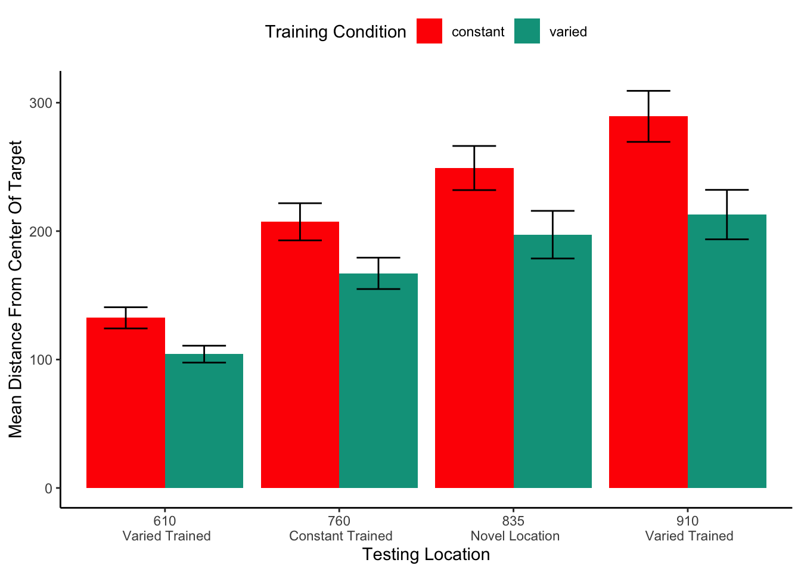
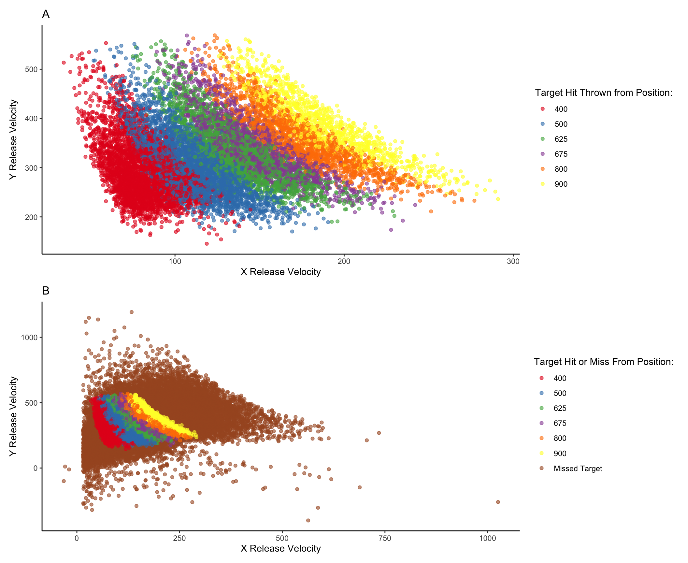

Research on the effects of varied training typically manipulates variability in one of two ways. In the first approach, a high variability group is exposed to a greater number of unique instances during training, while a low variability group receives fewer unique instances with more repetitions. Alternatively, both groups may receive the same number of unique instances, but the high variability group’s instances are more widely distributed or spread out in the relevant psychological space, while the low variability group’s instances are clustered more tightly together. Researchers then compare the training groups in terms of their performance during the training phase, as well as their generalization performance during a testing phase. Researchers usually compare the performance of the two groups during both the training phase and a subsequent testing phase. The primary theoretical interest is often to assess the influence of training variability on generalization to novel testing items or conditions. However, the test may also include some or all of the items that were used during the training stage, allowing for an assessment of whether the variability manipulation influenced the learning of the trained items themselves, or to easily measure how much performance degrades as a function of how far away testing items are from the training items.
The influence of training variability has received a large amount of attention in the domain of sensorimotor skill learning. Much of this research has been influenced by the work of Schmidt (1975), who proposed a schema-based account of motor learning as an attempt to address the longstanding problem of how novel movements are produced. Schema theory presumes that learners possess general motor programs for a class of movements (e.g., an underhand throw). When called up for use motor programs are parameterized by schema rules which determine how the motor program is parameterized or scaled to the particular demands of the current task. Schema theory predicts that variable training facilitates the formation of more robust schemas, which will result in improved generalization or transfer. Experiments that test this hypothesis are often designed to compare the transfer performance of a constant-trained group against that of a varied-trained group. Both groups train on the same task, but the varied group practices with multiple instances along some task-relevant dimension that remains invariant for the constant group. For example, studies using a projectile throwing task might assign participants to either constant training that practice throwing from a single location, or to a varied group that throws from multiple locations. Following training, both groups are then tested from novel throwing locations (Pacheco & Newell, 2018; Pigott & Shapiro, 1984; Willey & Liu, 2018a; Wulf, 1991).
One of the earliest and still often cited investigations of Schmidt’s benefits of variability hypothesis was the work of Kerr & Booth (1978). Two groups of children, aged 8 and 12, were assigned to either constant or varied training of a bean bag throwing task. The constant group practiced throwing a bean-bag at a small target placed 3 feet in front of them, and the varied group practiced throwing from a distance of both 2 feet and 4 feet. Participants were blindfolded and unable to see the target while making each throw but would receive feedback by looking at where the beanbag had landed in between each training trial. 12 weeks later, all of the children were given a final test from a distance of 3 feet which was novel for the varied participants and repeated for the constant participants. Participants were also blindfolded for testing and did not receive trial by trial feedback in this stage. In both age groups, participants performed significantly better in the varied condition than the constant condition, though the effect was larger for the younger, 8-year-old children. This result provides particularly strong evidence for the benefits of varied practice, as the varied group outperformed the constant group even when tested at the “home-turf” distance that the constant group had exclusively practiced. A similar pattern of results was observed in another study wherein varied participants trained with tennis, squash, badminton, and short-tennis rackets were compared against constant subjects trained with only a tennis racket (Green et al., 1995). One of the testing conditions had subjects repeat the use of the tennis racket, which had been used on all 128 training trials for the constant group, and only 32 training trials for the varied group. Nevertheless, the varied group outperformed the constant group when using the tennis racket at testing, and also performed better in conditions with several novel racket lengths. However, as is the case with many of the patterns commonly observed in the “benefits of variability” literature, the pattern wherein the varied group outperfroms the constant group even from the constants group’s home turf has not been consistently replicated. One recent study attempted a near replication of the Kerr & Booth study (Willey & Liu, 2018b), having subjects throw beanbags at a target, with the varied group training from positions (5 and 9 feet) on either side of the constant group (7 feet). This study did not find a varied advantage from the constant training position, though the varied group did perform better at distances novel to both groups. However, this study diverged from the original in that the participants were adults; and the amount of training was much greater (20 sessions with 60 practice trials each, spread out over 5-7 weeks).
Pitting varied against constant practice against each other on the home turf of the constant group provides a compelling argument for the benefits of varied training, as well as an interesting challenge for theoretical accounts that posit generalization to occur as some function of distance. However, despite its appeal this particular contrast is relatively uncommon in the literature. It is unclear whether this may be cause for concern over publication bias, or just researchers feeling the design is too risky. A far more common design is to have separate constant groups that each train exclusively from each of the conditions that the varied group encounters (Catalano & Kleiner, 1984; Chua et al., 2019; McCracken & Stelmach, 1977; Moxley, 1979; Newell & Shapiro, 1976), or for a single constant group to train from just one of the conditions experienced by the varied participants (Pigott & Shapiro, 1984; Roller et al., 2001; Wrisberg & McLean, 1984; Wrisberg & Mead, 1983). A less common contrast places the constant group training in a region of the task space outside of the range of examples experienced by the varied group, but distinct from the transfer condition (Wrisberg et al., 1987; Wulf & Schmidt, 1997). Of particular relevance to the current work is the early study of Catalano & Kleiner (1984), as theirs was one of the earliest studies to investigate the influence of varied vs. constant training on multiple testing locations of graded distance from the training condition. Participants were trained on coincident timing task, in which subjects observe a series of lightbulbs turning on sequentially at a consistent rate and attempt to time a button response with the onset of the final bulb. The constant groups trained with a single velocity of either 5,7,9, or 11 mph, while the varied group trained from all 4 of these velocities. Participants were then assigned to one of four possible generalization conditions, all of which fell outside of the range of the varied training conditions – 1, 3, 13 or 15 mph. As is often the case, the varied group performed worse during the training phase. In the testing phase, the general pattern was for all participants to perform worse as the testing conditions became further away from the training conditions, but since the drop off in performance as a function of distance was far less steep for the varied group, the authors suggested that varied training induced a decremented generalization gradient, such that the varied participants were less affected by the change between training and testing conditions.
Benefits of varied training have also been observed in many studies outside of the sensorimotor domain. Goode et al. (2008) trained participants to solve anagrams of 40 different words ranging in length from 5 to 11 letters, with an anagram of each word repeated 3 times throughout training, for a total of 120 training trials. Although subjects in all conditions were exposed to the same 40 unique words (i.e. the solution to an anagram), participants in the varied group saw 3 different arrangements for each solution-word, such as DOLOF, FOLOD, and OOFLD for the solution word FLOOD, whereas constant subjects would train on three repetitions of LDOOF (spread evenly across training). Two different constant groups were used. Both constant groups trained with three repetitions of the same word scramble, but for constant group A, the testing phase consisted of the identical letter arrangement to that seen during training (e.g., LDOOF), whereas for constant group B, the testing phase consisted of a arrangement they had not seen during training, thus presenting them with a testing situation similar situation to the varied group. At the testing stage, the varied group outperformed both constant groups, a particularly impressive result, given that constant group A had three prior exposures to the word arrangement (i.e. the particular permutation of letters) which the varied group had not explicitly seen. However varied subjects in this study did not exhibit the typical decrement in the training phase typical of other varied manipulations in the literature, and actually achieved higher levels of anagram solving accuracy by the end of training than either of the constant groups – solving two more anagrams on average than the constant group. This might suggest that for tasks of this nature where the learner can simply get stuck with a particular word scramble, repeated exposure to the identical scramble might be less helpful towards finding the solution than being given a different arrangement of the same letters. This contention is supported by the fact that constant group A, who was tested on the identical arrangement as they experienced during training, performed no better at testing than did constant group B, who had trained on a different arrangement of the same word solution – further suggesting that there may not have been a strong identity advantage in this task.
Much of the earlier work in this sub-area trained subjects on artificial categories, such as dot patterns (Homa & Vosburgh, 1976; Posner & Keele, 1968). A seminal study by Posner & Keele (1968) trained participants to categorize artificial dot patterns, manipulating whether learners were trained with low variability examples clustered close to the category prototypes (i.e. low distortion training patterns), or higher-variability patterns spread further away from the prototype (i.e. high-distortion patterns). Participants that received training on more highly-distorted items showed superior generalization to novel high distortion patterns in the subsequent testing phase. It should be noted that unlike the sensorimotor studies discussed earlier, the Posner & Keele (1968) study did not present low-varied and high-varied participants with an equal number of training rathers, but instead had participants remain in the training stage of the experiment until they reached a criterion level of performance. This train-until-criterion procedure led to the high-variability condition participants tending to complete a larger number of training trials before switching to the testing stage. More recent work (Hu & Nosofsky, 2024), also used dot pattern categories, but matched the number of training trials across conditions. Under this procedure, higher-variability participants tended to reach lower levels of performance by the end of the training stage. The results in the testing phase were the opposite of Posner & Keele (1968), with the low-variability training group showing superior generalization to novel high-distortion patterns (as well as generalization to novel patterns of low or medium distortion levels). However, whether this discrepancy is solely a result of the different training procedures is unclear, as the studies also differed in the nature of the prototype patterns used. Posner & Keele (1968) utilized simpler, recognizable prototypes (e.g., a triangle, the letter M, the letter F), while Hu & Nosofsky (2024) employed random prototype patterns.
Recent studies have also begun utilizing more complex or realistic sitmuli when assessing the influence of variability on category learning. Wahlheim et al. (2012) conducted one such study. In a within-participants design, participants were trained on bird categories with either high repetitions of a few exemplars, or few repetitions of many exemplars. Across four different experiments, which were conducted to address an unrelated question on metacognitive judgements, the researchers consistently found that participants generalized better to novel species following training with more unique exemplars (i.e. higher variability), while high repetition training produced significantly better performance categorizing the specific species they had trained on. A variability advantage was also found in the relatively complex domain of rock categorization (Nosofsky et al., 2019). For 10 different rock categories, participants were trained with either many repetitions of 3 unique examples of each category, or few repetitions of 9 unique examples, with an equal number of total training trials in each group (the design also included 2 other conditions less amenable to considering the impact of variation). The high-variability group, trained with 9 unique examples, showed significantly better generalization performance than the other conditions.
A distinct sub-literature within the category learning domain has examined how the variability or dispersion of the categories themselves influences generalization to ambiguous regions of the category space (e.g., the region between the two categories). The general approach is to train participants with examples from a high variability category and a low variability category. Participants are then tested with novel items located within ambiguous regions of the category space which allow the experimenters to assess whether the difference in category variability influenced how far participants generalize the category boundaries. A. L. Cohen et al. (2001) conducted two experiments with this basic paradigm. In experiment 1, a low variability category composed of 1 instance was compared against a high-variability category of 2 instances in one condition, and 7 instances in another. In experiment 2 both categories were composed of 3 instances, but for the low-variability group the instances were clustered close to each other, whereas the high-variability groups instances were spread much further apart. Participants were tested on an ambiguous novel instance that was located in between the two trained categories. Both experiments provided evidence that participants were much more likely to categorize the novel middle stimulus into the category with greater variation.
Further observations of widened generalization following varied training have since been observed in numerous investigations (Hahn et al., 2005; Hosch et al., 2023; Hsu & Griffiths, 2010; Perlman et al., 2012; Sakamoto et al., 2008; but see Stewart & Chater, 2002; L.-X. Yang & Wu, 2014; and Seitz et al., 2023). The results of Sakamoto et al. (2008) are noteworthy. They first reproduced the basic finding of participants being more likely to categorize an unknown middle stimulus into a training category with higher variability. In a second experiment, they held the variability between the two training categories constant and instead manipulated the training sequence, such that the examples of one category appeared in an ordered fashion, with very small changes from one example to the other (the stimuli were lines that varied only in length), whereas examples in the alternate category were shown in a random order and thus included larger jumps in the stimulus space from trial to trial. They found that the middle stimulus was more likely to be categorized into the category that had been learned with a random sequence, which was attributed to an increased perception of variability which resulted from the larger trial to trial discrepancies.
The work of Hahn et al. (2005), is also of particular interest to the present work. Their experimental design was similar to previous studies, but they included a larger set of testing items which were used to assess generalization both between the two training categories as well as novel items located in the outer edges of the training categories. During generalization testing, participants were given the option to respond with “neither”, in addition to responses to the two training categories. The “neither” response was included to test how far away in the stimulus space participants would continue to categorize novel items as belonging to a trained category. Consistent with prior findings, high-variability training resulted in an increased probability of categorizing items in between the training categories as belong to the high variability category. Additionally, participants trained with higher variability also extended the category boundary further out into the periphery than participants trained with a lower variability category were willing to do. The author compared a variety of similarity-based models based around the Generalized Context Model (Nosofsky, 1986) to account for their results, manipulating whether a response-bias or similarity-scaling parameter was fit separately between variability conditions. No improvement in model fit was found by allowing the response-bias parameter to differ between groups, however the model performance did improvement significantly when the similarity scaling parameter was fit separately. The best fitting similarity-scaling parameters were such that the high-variability group was less sensitive to the distances between stimuli, resulting in greater similarity values between their training items and testing items. This model accounted for both the extended generalization gradients of the varied particpants, and also for their poorer performance in a recognition condition.
Variability has also been examined in the learning of higher-order linguistic categories (Perry et al., 2010). In nine training sessions spread out over nine weeks infants were trained on object labels in a naturalistic play setting. All infants were introduced to three novel objects of the same category, with participants in the “tight” condition being exposed to three similar exemplars of the category, and participants in the varied condition being exposed to three dissimilar objects of the same category. Importantly, the similarity of the objects was carefully controlled for by having a separate group of adult subjects provide pairwise similarity judgements of the category objects prior to the study onset. Multidimensional scaling was then performed to obtain the coordinates of the objects psychological space, and out of the 10 objects for each category, the 3 most similar objects were selected for the tight group and the three least similar objects for the varied group, with the leftover four objects being retained for testing. By the end of the nine weeks, all of the infants had learned the labels of the training objects. In the testing phase, the varied group demonstrated superior ability to correctly generalize the object labels to untrained exemplars of the same category. More interesting was the superior performance of the varied group on a higher order generalization task – such that they were able to appropriately generalize the bias they had learned during training for attending to the shape of objects to novel solid objects, but not to non-solids. The tight training group, on the other hand, tended to overgeneralize the shape bias, leading the researchers to suggest that the varied training induced a more context-sensitive understanding of when to apply their knowledge.
In an example of a more complex influence of training variation, (Braithwaite & Goldstone, 2015) trained participants on example problems involving the concept of sampling with replacement (SWR). Training consisted of examples that were either highly similar in their semantic context (e.g., all involving people selecting objects) or in which the surface features were varied between examples (e.g., people choosing objects AND objects selected in a sequence). The experimenters also surveyed how much prior knowledge each participant had with SWR. They found that whether variation was beneficial depended on the prior knowledge of the participants – such that participants with some prior knowledge benefited from varied training, whereas participants with minimal prior knowledge performed better after training with similar examples. The authors hypothesized that in order to benefit from varied examples, participants must be able to detect the structure common to the diverse examples, and that participants with prior knowledge are more likely to be sensitive to such structure, and thus to benefit from varied training. To test this hypothesis more directly, the authors conducted a 2nd experiment, wherein they controlled prior knowledge by exposing some subjects to a short graphical or verbal pre-training lesson, designed to increase sensitivity to the training examples. Consistent with their hypothesis, participants exposed to the structural sensitivity pre-training benefited more from varied training than the controls participants who benefited more from training with similar examples. Interactions between prior experience and the influence of varied training have also been observed in sensorimotor learning (Del Rey et al., 1982; Guadagnoli et al., 1999). Del Rey et al. (1982) recruited participants who self-reported either extensive, or very little experience with athletic activities, and then trained participants on a coincident timing task under with either a single constant training velocity, with one of several varied training procedures. Unsurprisingly, athlete participants had superior performance during training, regardless of condition, and training performance was superior for all subjects in the constant group. Of greater interest is the pattern of testing results from novel transfer conditions. Among the athlete-participants, transfer performance was best for those who received variable training. Non-athletes showed the opposite pattern, with superior performance for those who had constant training.
Existing Theoretircal Frameworks
A number of theoretical frameworks have been proposed to conceptually explain the effects of varied training on learning and generalization. Schema theory (described in more detail above), posts that varied practice leads to the formation of more flexible motor schemas, which then facilitate generalization (Schmidt, 1975). The desirable difficulties framework (Bjork & Bjork, 2011; Soderstrom & Bjork, 2015) proposes that variable practice conditions may impair initial performance but then enhance longer-term retention and transfer. Similarly, the challenge point framework (Guadagnoli & Lee, 2004) contends that training variation induces optimal learning occurs insofar as it causes the difficulty of practice tasks to be appropriately matched to the learner’s capabilities, but may also be detrimental if the amount of variation causes the task to be too difficult.
While these frameworks offer valuable conceptual accounts, there has been a limited application of computational modeling efforts aimed at quantitatively assessing and comparing the learning and generalization mechanisms which may be underlying the influence of variability in visuomotor skill learning. In contrast, the effects of variability have received more formal computational treatment in other domains, such as category learning Hu & Nosofsky (2024), language learning (Jones & Brandt, 2020), and function learning (DeLosh et al., 1997). A primary goal of the current dissertation is to to address this gap by adapting and applying modeling approaches from these other domains to investigate the effects of training variability in visuomotor skill learning and function learning tasks.
The current work
The overarching purpose of this dissertation is to investigate the effects of training variability on learning and generalization within visuomotor skill learning and function learning. Our investigation is structured into two main projects, each employing distinct experimental paradigms and computational modeling frameworks to elucidate how and when variability in training enhances or impedes subsequent generalization.
In Project 1, we investigated the influence of varied practice in a simple visuomotor projectile launching task. Experiments 1 and 2 compared the performance of constant and varied training groups to assess potential benefits of variability on transfer to novel testing conditions. To account for the observed empirical effects, we introduced the Instance-based Generalization with Adaptive Similarity (IGAS) model. IGAS provides a novel computational approach for quantifying the similarity between training experiences and transfer conditions, while also allowing for variability to influence the generalization gradient itself.
Project 2 shifted focus to the domain of function learning by employing a visuomotor extrapolation task. Across three experiments, we examined how constant and varied training regimes affected learning, discrimination between stimuli, and the ability to extrapolate to novel regions of the function’s input space. To model human performance in this task, we fit the influential Associative Learning Model (ALM) and the Extrapolation-Association Model (EXAM) to individual participant data using advanced Bayesian parameter estimation techniques.
Project 1
Code
pacman::p_load(dplyr,purrr,tidyr,tibble,ggplot2, brms,tidybayes, rstanarm,emmeans,broom,bayestestR, stringr, here,conflicted, patchwork, knitr, cowplot, RColorBrewer,data.table,gt, ggh4x,htmltools,future,furrr,ez)#options(brms.backend="cmdstanr",mc.cores=4)#options(digits=2, scipen=999, dplyr.summarise.inform=FALSE, kableExtra.auto_format=FALSE)walk(c("brms","dplyr","bayestestR","here"), conflict_prefer_all, quiet =TRUE)walk(c("Display_Functions","fun_alm","fun_indv_fit","fun_model", "prep_model_data","org_functions"), ~source(here::here(paste0("Functions/", .x, ".R"))))#conflicts_prefer(tidybayes::rstudent_t)# pacman::p_load(dplyr,purrr,tidyr,ggplot2, data.table, here, patchwork, conflicted, # stringr,future,furrr, knitr, reactable,ggstance, htmltools,# ggdist,ggh4x,brms,tidybayes,emmeans,bayestestR, gt)#pacman::p_load(papaja, tinytex, RColorBrewer, kableExtra, cowplot)source(here::here('Functions/IGAS_ProcessFunctions.R'))#options(brms.backend="cmdstanr",mc.cores=4)initial_contrasts <-options("contrasts")$contrastsoptions(digits=2, scipen=999, dplyr.summarise.inform=FALSE, contrasts =c("contr.sum", "contr.poly"))defaultContrasts =options()$contrastslibrary(tidybayes)theme_set(theme_classic())# load the processed data from experiment 1 and 2e1 <-readRDS(here::here("data/igas_e1_cleanedData-final.rds")) %>%mutate(initialVelocityX=X_Velocity,initialVelocityY=Y_Velocity,stageInt=as.numeric(as.character(experimentStage)))e2<-readRDS(here::here('data/igas_e2_cleanedData-final.rds')) %>%mutate(initialVelocityX=X_Velocity,initialVelocityY=Y_Velocity)# load subject similarity data - computed with the IGAS model in 'IGAS-SimModel.R'e2_sim <-readRDS(here::here('data/IGAS_Similarity-Performance.rds'))# options(contrasts = c("contr.sum", "contr.poly"), kableExtra.auto_format=FALSE)# defaultContrasts = options()$contrasts# theme_set(theme_classic())dodge <-position_dodge(width =0.9)e2GrpPos <-c("400","500","625","675","800","900")e2Grp <-paste("Constant","Constant", "Constant","Constant","Constant","Constant", "Varied")e2Labels <-paste(c("400\n Constant","500\n Constant","625\n Constant","675\n Constant","800\n Constant","900\n Constant","500-800\n Varied"),sep="")e1Pos <-c("610","760","835","910")e1Var <-paste("Varied Train Position","Constant Train Position", "Novel Position", "Varied Training Position")e1Labels<-paste(c("610\n Varied Trained","760\n Constant Trained","835\n Novel Location","910\n Varied Trained"),sep="")
Abstract
Exposing learners to variability during training has been demonstrated to improve performance in subsequent transfer testing. Such variability benefits are often accounted for by assuming that learners are developing some general task schema or structure. However, much of this research has neglected to account for differences in similarity between varied and constant training conditions. In a between-groups manipulation, we trained participants on a simple projectile launching task, with either varied or constant conditions. We replicate previous findings showing a transfer advantage of varied over constant training. Furthermore, we show that a standard similarity model is insufficient to account for the benefits of variation, but, if the model is adjusted to assume that varied learners are tuned towards a broader generalization gradient, then a similarity-based model is sufficient to explain the observed benefits of variation. Our results therefore suggest that some variability benefits can be accommodated within instance-based models without positing the learning of some schemata or structure.
Introduction
Similarity and instance-based approaches to transfer of learning
Early models of learning often assumed that discrete experiences with some task or category were not stored individually in memory, but instead promoted the formation of a summary representation, often referred to as a prototype or schema, and that exposure to novel examples would then prompt the retrieval of whichever preexisting prototype was most similar. In addition to being a landmark study on the influence of training variability, Posner & Keele (1968) (described above) also put forward an influential argument concerning the nature of the mental representations acquired during learning - namely that learners tend to abstract a prototype, or aggregate representation of the dot pattern categories, rather than encoding each individual stimuli. Recall that participants are trained on only on distortions of the category prototypes (e.g., low, medium or high distortions), never encountering the exact prototypes during the training stage. Then, in the testing phase, participants are tested with the prototype patterns, their old training items, and novel low, medium and high distortions. The authors found that participants had the highest testing accuracy for the previously unseen prototype patterns, followed by the old training items, and then the novel low, medium and high distortions. The authors interpreted this pattern as evidence that participants had acquired prototype representation of the category, as opposed to storing each individual training instance, and that generalization was based on the similarity of the testing items to the learned prototype representations. Posner & Keele (1968) has been extremely influential, and continues to be cited as evidence that prototype abstraction underlies the benefits of varied training. It’s also referenced as a key influence in the development of the “Schema Theory of Motor Learning” Schmidt (1975), which in turn influenced decades of research on the potential benefits of varied training in motor skill learning. However a number of the core assumptions utilized by Posner & Keele (1968) were later called into question both empirically and with competing theoretical accounts (Hintzman, 1984, 1986; Knapp & Anderson, 1984; McClelland & Rumelhart, 1985; Nosofsky & Kruschke, 1992; Palmeri & Nosofsky, 2001; Zaki & Nosofsky, 2007). Palmeri & Nosofsky (2001) demonstrated both the dangers of assuming that psychological representations mimic the metric stimulus space, as well the viability of models with simpler representational assumptions. These authors conducted a near replication of the Posner & Keele (1968) study, but also had participants provide similarity judgements of the dot pattern stimuli after completing the training phase. A multidimensional scaling analysis of the similarity judgements revelead that the psychological representations of the prototype stimuli were not located in the middle of the training stimuli, but were instead extreme points in the psychological space. The authors also demonstrated the generalization patterns of Posner & Keele (1968) could be accounted for by an exemplar-based model, without any need to assume the abstraction of a prototype.
Instance-based, or exemplar-based models generally assume that learners encode each experience with a task as a separate instance/exemplar/trace, and that each encoded trace is in turn compared against novel stimuli (Estes, 1994; Hintzman, 1984; Jamieson et al., 2022; Medin & Schaffer, 1978; Nosofsky, 1986). As the number of stored instances increases, so does the likelihood that some previously stored instance will be retrieved to aid in the performance of a novel task. Stored instances are retrieved in the context of novel stimuli or tasks if they are sufficiently similar, thus suggesting that the process of computing similarity is of central importance to generalization.
Similarity, defined in this literature as a function of psychological distance between instances or categories, has provided a successful account of generalization across numerous tasks and domains. In an influential study demonstrating an ordinal similarity effect, experimenters employed a numerosity judgment task in which participants quickly report the number of dots flashed on a screen. Performance (in terms of response times to new patterns) on novel dot configurations varied as an inverse function of their similarity to previously trained dot configurations Palmeri (1997). That is, performance was better on novel configurations moderately similar to trained configurations than to configurations with low-similarity, and also better on low-similarity configurations than to even less similar, unrelated configurations. Instance-based similarity approaches have had some success accounting for performance in certain sub-domains of motor learning (R. G. Cohen & Rosenbaum, 2004; Crump & Logan, 2010; Meigh et al., 2018; Poldrack et al., 1999; Wifall et al., 2017). Crump & Logan (2010) trained participants to type words on an unfamiliar keyboard, while constraining the letters composing the training words to a pre-specified letter set. Following training, typing speed was tested on previously experienced words composed of previously experienced letters; novel words composed of letters from the trained letter set; and novel words composed of letters from an untrained letter set. Consistent with an instance-based account, transfer performance was graded such that participants were fastest at typing the words they had previously trained on, followed by novel words composed of letters they had trained on, and slowest performance for new words composed of untrained letters.
Issues with Previous Research
Although the benefits of training variation in visuomotor skill learning have been observed many times, null findings have also been repeatedly found, leading some researchers to question the veracity of the variability of practice hypothesis (Newell, 2003; Van Rossum, 1990). Critics have also pointed out that investigations of the effects of training variability, of the sort described above, often fail to control for the effect of similarity between training and testing conditions. For training tasks in which participants have numerous degrees of freedom (e.g., projectile throwing tasks where participants control the x and y velocity of the projectile), varied groups are likely to experience a wider range of the task space over the course of their training (e.g., more unique combinations of x and y velocities). Experimenters may attempt to account for this possibility by ensuring that the training location(s) of the varied and constant groups are an equal distance away from the eventual transfer locations, such that their training throws are, on average, equally similar to throws that would lead to good performance at the transfer locations. However, even this level of experimental control may still be insufficient to rule out the effect of similarity on transfer. Given that psychological similarity is typically best described as either a Gaussian or exponentially decaying function of psychological distance (Ennis et al., 1988; Ghahramani et al., 1996; Logan, 1988; Nosofsky, 1992; Shepard, 1987; Thoroughman & Taylor, 2005), it is plausible that a subset of the most similar training instances could have a disproportionate impact on generalization to transfer conditions, even if the average distance between training and transfer conditions is identical between groups. Figure 1 demonstrates the consequences of a generalization gradient that drops off as a Gaussian function of distance from training, as compared to a linear drop-off.
Figure 1: Left panel- Generalization predicted from a simple model that assumes a linear generalization function. A varied group (red vertical lines indicate the 2 training locations) trained from positions 400 and 800, and a constant group (blue vertical line), trained from position 600. Right panel- if a Gaussian generalization function is assumed, then varied training (400, 800) is predicted to result in better generalization to positions close to 400 and 800 than does constant training at 600. (For interpretation of the references to color in this figure legend, the reader is referred to the web version of this article.)
In addition to largely overlooking the potential for non-linear generalization to confound interpretations of training manipulations, the visuomotor skill learning literature also rarely considers alternatives to schema representations (Chamberlin & Magill, 1992b). Although schema-theory remains influential within certain literatures, instance or exemplar-based models have accounted for human behavior across myriad domains (Jamieson et al., 2022; Logan, 2002). As mentioned above, instance based accounts have been shown to perform well on a variety of different tasks with motoric components (Crump & Logan, 2010; Gandolfo et al., 1996; Meigh et al., 2018; Rosenbaum et al., 1995; van Dam & Ernst, 2015). However, such accounts have received little attention within the subdomain of visuomotor skill learning focused on the benefits of varied training.
The present work examines whether the commonly observed benefits of varied training can be accounted for by a theoretrically motivated measure of the similarity between training throws and the testing solution space. We first attempt to replicate previous work finding an advantage of varied training over constant training in a projectile launching task. We then examine the extent to which this advantage can be explained by an instance-based similarity model.
Experiment 1
Methods
Sample Size Estimation
To obtain an independent estimate of effect size, we identified previous investigations which included between-subjects contrasts of varied and constant conditions following training on an accuracy based projectile launching task (Chua et al., 2019; Goodwin et al., 1998; Kerr & Booth, 1978; Wulf, 1991). We then averaged effects across these studies, yielding a Cohen’s f =.43. The GPower 3.1 software package (Faul et al., 2009) was then used to determine that a power of 80% requires a sample size of at least 23 participants per condition. All experiments reported in the present manuscript exceed this minimum number of participants per condition.
Participants
Participants were recruited from an undergraduate population that is 63% female and consists almost entirely of individuals aged 18 to 22 years. A total of 110 Indiana University psychology students participated in Experiment 1. We subsequently excluded 34 participants for poor performance on one of the dependent measures of the task (2.5-3 standard deviations worse than the median subject at the task) or for displaying a pattern of responses that was clearly indicative of a lack of engagement with the task (e.g., simply dropping the ball on each trial rather than throwing it at the target), or for reporting that they completed the experiment on a phone or tablet device, despite the instructions not to use one of these devices. A total of 74 participants were retained for the final analyses, 35 in the varied group and 39 in the constant group.
Task
The experimental task was programmed in JavaScript, using packages from the Phaser physics engine (https://phaser.io) and the jsPsych library (de Leeuw, 2015). The stimuli, presented on a black background, consisted of a circular blue ball – controlled by the participant via the mouse or trackpad cursor; a rectangular green target; a red rectangular barrier located between the ball and the target; and an orange square within which the participant could control the ball before releasing it in a throw towards the target. Because the task was administered online, the absolute distance between stimuli could vary depending on the size of the computer monitor being used, but the relative distance between the stimuli was held constant. Likewise, the distance between the center of the target and the training and testing locations was scaled such that relative distances were preserved regardless of screen size. For the sake of brevity, subsequent mentions of this relative distance between stimuli, or the position where the ball landed in relation to the center of the target, will be referred to simply as distance. Figure 2 displays the layout of the task, as it would appear to a participant at the start of a trial, with the ball appearing in the center of the orange square. Using a mouse or trackpad, participants click down on the ball to take control of the ball, connecting the movement of the ball to the movement of the cursor. Participants can then “wind up” the ball by dragging it (within the confines of the orange square) and then launch the ball by releasing the cursor. If the ball does not land on the target, participants are presented with feedback in red text at the top right of the screen, on how many units away they were from the center of the target. If the ball was thrown outside of the boundary of the screen participants are given feedback as to how far away from the target center the ball would have been if it had continued its trajectory. If the ball strikes the barrier (from the side or by landing on top), feedback is presented telling participants to avoid hitting the barrier. If participants drag the ball outside of the orange square before releasing it, the trial terminates, and they are reminded to release the ball within the orange square. If the ball lands on the target, feedback is presented in green text, confirming that the target was hit, and presenting additional feedback on how many units away the ball was from the exact center of the target.
Figure 2: The stimuli of the task consisted of a blue ball, which the participants would launch at the green target, while avoiding the red barrier. On each trial, the ball would appear in the center of the orange square, with the position of the orange square varying between experimental conditions. Participants were constrained to release the ball within the square
Results
Data Processing and Statistical Packages
To prepare the data, we first removed trials that were not easily interpretable as performance indicators in our task. Removed trials included: 1) those in which participants dragged the ball outside of the orange starting box without releasing it, 2) trials in which participants clicked on the ball, and then immediately released it, causing the ball to drop straight down, 3) outlier trials in which the ball was thrown more than 2.5 standard deviations further than the average throw (calculated separately for each throwing position), and 4) trials in which the ball struck the barrier. The primary measure of performance used in all analyses was the absolute distance away from the center of the target. The absolute distance was calculated on every trial, and then averaged within each subject to yield a single performance score, for each position. A consistent pattern across training and testing phases in both experiments was for participants to perform worse from throwing positions further away from the target – a pattern which we refer to as the difficulty of the positions. However, there were no interactions between throwing position and training conditions, allowing us to collapse across positions in cases where contrasts for specific positions were not of interest. All data processing and statistical analyses were performed in R version 4.32 (Team, 2020). ANOVAs for group comparisons were performed using the rstatix package (Kassambara, 2021).
Training Phase
Figure 3 below shows aggregate training performance binned into three stages representing the beginning, middle, and end of the training phase. Because the two conditions trained from target distances that were not equally difficult, it was not possible to directly compare performance between conditions in the training phase. Our focus for the training data analysis was instead to establish that participants did improve their performance over the course of training, and to examine whether there was any interaction between training stage and condition. Descriptive statistics for the intermittent testing phase are provided in the supplementary materials.
We performed an ANOVA comparison with stage as a within-group factor and condition as between-group factor. The analysis revealed a significant effect of training stage F(2,142)=62.4, p<.001, \(\eta^{2}_G\) = .17, such that performance improved over the course of training. There was no significant effect of condition F(1,71)=1.42, p=.24, \(\eta^{2}_G\) = .02, and no significant interaction between condition and training stage, F(2,142)=.10, p=.91, \(\eta^{2}_G\) < .01.
Figure 3: Training performance for varied and constant participants binned into three stages. Shorter bars indicate better performance (ball landing closer to the center of the target). Error bars indicate standard error of the mean.
Testing Phase
In Experiment 1, a single constant-trained group was compared against a single varied-trained group. At the transfer phase, all participants were tested from 3 positions: 1) the positions(s) from their own training, 2) the training position(s) of the other group, and 3) a position novel to both groups. Overall, group performance was compared with a mixed type III ANOVA, with condition (varied vs. constant) as a between-subject factor and throwing location as a within-subject variable. The effect of throwing position was strong, F(3,213) = 56.12, p<.001, η2G = .23. The effect of training condition was significant F(1,71)=8.19, p<.01, η2G = .07. There was no significant interaction between group and position, F(3,213)=1.81, p=.15, η2G = .01.
Code
exp1.Test <- e1 %>%filter(stage=="Transfer") %>%select(-trainHalf)%>%group_by(positionX) %>%mutate(globalAvg=mean(AbsDistFromCenter),globalSd=sd(AbsDistFromCenter)) %>%group_by(sbjCode,positionX) %>%mutate(scaledDev =scaleVar(globalAvg,globalSd,AbsDistFromCenter)) %>%ungroup() %>%group_by(sbjCode,conditType,positionX,ThrowPosition) %>%summarise(MeanTargetDeviance =mean(AbsDistFromCenter),MeanScaleDev =mean(scaledDev),.groups="keep")%>%as.data.frame()#manuscript plote1test1=exp1.Test %>%ggplot(aes(x=positionX,y=MeanTargetDeviance,group=conditType,fill=conditType))+geom_bar(stat="summary",fun=mean,position=dodge)+stat_summary(fun.data=mean_se,geom="errorbar",position=dodge,width=.5)+ylab("Mean Distance From Center Of Target") +xlab("Testing Location")+theme(plot.title =element_text(hjust =0.5))+guides(fill=guide_legend(title="Training Condition"))+theme(legend.title.align=.25)+scale_x_discrete(name="Testing Location",labels=e1Labels)e1test1

Figure 4: Testing performance for each of the 4 testing positions, compared between training conditions. Positions 610 and 910 were trained on by the varied group, and novel for the constant group. Position 760 was trained on by the constant group, and novel for the varied group. Position 835 was novel for both groups. Shorter bars are indicative of better performance (the ball landing closer to the center of the target). Error bars indicate standard error of the mean.
In Experiment 1, we found that varied training resulted in superior testing performance than constant training, from both a position novel to both groups, and from the position at which the constant group was trained, which was novel to the varied condition. The superiority of varied training over constant training even at the constant training position is of particular note, given that testing at this position should have been highly similar for participants in the constant condition. It should also be noted, though, that testing at the constant trained position is not exactly identical to training from that position, given that the context of testing is different in several ways from that of training, such as the testing trials from the different positions being intermixed, as well as a simple change in context as a function of time. Such contextual differences will be further considered in the General Discussion.
In addition to the variation of throwing position during training, the participants in the varied condition of Experiment 1 also received training practice from the closest/easiest position, as well as from the furthest/most difficult position that would later be encountered by all participants during testing. The varied condition also had the potential advantage of interpolating both of the novel positions from which they would later be tested. Experiment 2 thus sought to address these issues by comparing a varied condition to multiple constant conditions.
Experiment 2
In Experiment 2, we sought to replicate our findings from Experiment 1 with a new sample of participants, while also addressing the possibility of the pattern of results in Experiment 1 being explained by some idiosyncrasy of the particular training location of the constant group relative to the varied group. To this end, Experiment 2 employed the same basic procedure as Experiment 1, but was designed with six separate constant groups each trained from one of six different locations (400, 500, 625, 675, 800, or 900), and a varied group trained from two locations (500 and 800). Participants in all seven groups were then tested from each of the 6 unique positions.
Methods
Participants
A total of 306 Indiana University psychology students participated in Experiment 2, which was also conducted online. As was the case in Experiment 1, the undergraduate population from which we recruited participants was 63% female and primarily composed of 18–22-year-old individuals. Using the same procedure as Experiment 1, we excluded 98 participants for exceptionally poor performance at one of the dependent measures of the task, or for displaying a pattern of responses indicative of a lack of engagement with the task. A total of 208 participants were included in the final analyses with 31 in the varied group and 32, 28, 37, 25, 29, 26 participants in the constant groups training from location 400, 500, 625, 675, 800, and 900, respectively. All participants were compensated with course credit.
Task and Procedure
The task of Experiment 2 was identical to that of Experiment 1, in all but some minor adjustments to the height of the barrier, and the relative distance between the barrier and the target. Additionally, the intermittent testing trials featured in experiment 1 were not utilized in Experiment 2. An abbreviated demo of the task used for Experiment 2 can be found at (https://pcl.sitehost.iu.edu/tg/demos/igas_expt2_demo.html).
The procedure for Experiment 2 was also quite similar to Experiment 1. Participants completed 140 training trials, all of which were from the same position for the constant groups and split evenly (70 trials each - randomized) for the varied group. In the testing phase, participants completed 30 trials from each of the six locations that had been used separately across each of the constant groups during training. Each of the constant groups thus experienced one trained location and five novel throwing locations in the testing phase, while the varied group experiences 2 previously trained, and 4 novel locations.
Results
Data Processing and Statistical Packages
After confirming that condition and throwing position did not have any significant interactions, we standardized performance within each position, and then average across position to yield a single performance measure per participant. This standardization did not influence our pattern of results. As in Experiment 1, we performed type III ANOVAs due to our unbalanced design, however the pattern of results presented below is not altered if type 1 or type III tests are used instead. The statistical software for the primary analyses was the same as for Experiment 1. Individual learning rates in the testing phase, compared between groups in the supplementary analyses, were fit using the TEfit package in R (Cochrane, 2020).
Training Phase
The different training conditions trained from positions that were not equivalently difficult and are thus not easily amenable to comparison. As previously stated, the primary interest of the training data is confirmation that some learning did occur. Figure 5 depicts the training performance of the varied group alongside that of the aggregate of the six constant groups (5a), and each of the 6 separate constant groups (5b). An ANOVA comparison with training stage (beginning, middle, end) as a within-group factor and group (the varied condition vs. the 6 constant conditions collapsed together) as a between-subject factor revealed no significant effect of group on training performance, F(1,206)=.55,p=.49, \(\eta^{2}_G\) <.01, a significant effect of training stage F(2,412)=77.91, p<.001, \(\eta^{2}_G\) =.05, and no significant interaction between group and training stage, F(2,412)=.489 p=.61, \(\eta^{2}_G\) <.01. We also tested for a difference in training performance between the varied group and the two constant groups that trained matching throwing positions (i.e., the constant groups training from position 500, and position 800). The results of our ANOVA on this limited dataset mirrors that of the full-group analysis, with no significant effect of group F(1,86)=.48, p=.49, \(\eta^{2}_G\) <.01, a significant effect of training stage F(2,172)=56.29, p<.001, \(\eta^{2}_G\) =.11, and no significant interaction between group and training stage, F(2,172)=.341 p=.71, \(\eta^{2}_G\) <.01.
Code
e2$stage <-factor(e2$stage, levels =c("Beginning", "Middle", "End","Transfer"),ordered =TRUE)exp2TrainPosition <- e2 %>%filter(stage!="Transfer") %>%ungroup() %>%group_by(sbjCode,Group2,conditType,trainHalf,positionX) %>%summarise(MeanTargetDistance=mean(AbsDistFromCenter))%>%as.data.frame()exp2TrainPosition3 <- e2 %>%filter(stage!="Transfer") %>%ungroup() %>%mutate(globalAvg=mean(AbsDistFromCenter),globalSd=sd(AbsDistFromCenter)) %>%group_by(sbjCode,positionX) %>%mutate(scaledDev =scaleVar(globalAvg,globalSd,AbsDistFromCenter)) %>%ungroup() %>%group_by(sbjCode,Group2,conditType,stage,positionX) %>%summarise(MeanTargetDistance=mean(AbsDistFromCenter),MeanScaledDev=mean(scaledDev,trim=.05))%>%as.data.frame()exp2Train <- e2 %>%filter(stage!="Transfer") %>%group_by(sbjCode,Group2,conditType,trainHalf) %>%summarise(MeanTargetDistance=mean(AbsDistFromCenter)) %>%as.data.frame()exp2Train3 <- e2 %>%filter(stage!="Transfer") %>%ungroup() %>%mutate(globalAvg=mean(AbsDistFromCenter),globalSd=sd(AbsDistFromCenter)) %>%group_by(sbjCode,positionX) %>%mutate(scaledDev =scaleVar(globalAvg,globalSd,AbsDistFromCenter)) %>%ungroup() %>%group_by(sbjCode,Group2,conditType,stage) %>%summarise(MeanTargetDistance=mean(AbsDistFromCenter),MeanScaledDev=mean(scaledDev,trim=.05)) %>%as.data.frame()transfer <-filter(e2, stage=="Transfer") %>%droplevels() %>%select(-trainHalf,-initialVelocityY,ThrowPosition2)%>%ungroup()transfer <- transfer %>%group_by(positionX) %>%mutate(globalAvg=mean(AbsDistFromCenter),globalSd=sd(AbsDistFromCenter)) %>%group_by(sbjCode,positionX) %>%mutate(scaledDev =scaleVar(globalAvg,globalSd,AbsDistFromCenter)) %>%ungroup()transfer <- transfer %>%group_by(sbjCode,positionX) %>%mutate(ind=1,testPosIndex=cumsum(ind),posN=max(testPosIndex)) %>%select(-ind) %>%mutate(testHalf =case_when(testPosIndex<15~"1st Half",testPosIndex>=15~"2nd Half")) %>% rstatix::convert_as_factor(testHalf)variedTest <- transfer %>%filter(condit==7) %>%mutate(extrapolate=ifelse(positionX=="900"| positionX=="400","extrapolation","interpolation")) constantTest <- transfer %>%filter(condit!=7) %>%mutate(extrapolate=ifelse(distFromTrain==0,"interpolation","extrapolation"))transfer <-rbind(variedTest,constantTest)transfer<- transfer %>%mutate(novel=ifelse(distFromTrain3==0,"trainedLocation","novelLocation"))%>% rstatix::convert_as_factor(novel,extrapolate)transfer <- transfer %>%relocate(sbjCode,condit2,Group,conditType2,stage,trial,novel,extrapolate,positionX,AbsDistFromCenter,globalAvg,globalSd,scaledDev,distFromTrain3) %>%ungroup()# novelAll <- transfer %>% filter(distFromTrain!=0, distFromTrain3!=0) %>% select(-globalAvg,-globalSd,-scaledDev)%>% droplevels() %>% ungroup()# novelAll <- novelAll %>% group_by(positionX) %>%# mutate(globalAvg=mean(AbsDistFromCenter),globalSd=sd(AbsDistFromCenter)) %>% # group_by(sbjCode,positionX) %>% mutate(scaledDev = scaleVar(globalAvg,globalSd,AbsDistFromCenter)) %>%ungroup()novelAll <- transfer %>%filter(distFromTrain!=0, distFromTrain3!=0)novelAllMatched <- novelAll %>%filter(condit!=5,condit!=2)constantIden <- transfer %>%filter(condit !=7,distFromTrain==0) # only constant groups from their training positionvariedTest <- transfer %>%filter(condit==7) # only varied testingvariedVsIden <-rbind(constantIden,variedTest) # all varied combined with constant identityvariedNovel <- variedTest %>%filter(distFromTrain3 !=0) # removes 500 and 800 from variedconstantIden2 <- transfer %>%filter(condit !=7,condit!=5,condit!=2,distFromTrain==0) # only constant groups from training position 400,625,675,900variedVsNovelIden <-rbind(constantIden2,variedNovel) # novel positions for varied, trained for constantexp2.Test <- transfer %>%group_by(sbjCode,conditType,positionX,ThrowPosition)%>%summarise(MeanTargetDeviance =mean(AbsDistFromCenter,trim=.05),MeanScaledDev=mean(scaledDev,trim=.05)) %>%ungroup() %>%as.data.frame()exp2.Test2 <- exp2.Test %>%group_by(sbjCode,conditType)%>%summarise(MeanTargetDeviance =mean(MeanTargetDeviance),MeanScaledDev=mean(MeanScaledDev)) %>%ungroup() %>%as.data.frame()exp2.Test7 <- transfer %>%group_by(Group2,sbjCode,positionX,Group,conditType,ThrowPosition4) %>%summarise(MeanTargetDeviance =mean(AbsDistFromCenter,trim=.05),MeanScaledDev=mean(scaledDev,trim=.05)) %>%as.data.frame()exp2.Test7.agg <- exp2.Test7 %>%group_by(Group2,sbjCode,Group,conditType) %>%summarise(MeanTargetDeviance =mean(MeanTargetDeviance),MeanScaledDev=mean(MeanScaledDev)) %>%as.data.frame()exp2.Test7.agg2 <- exp2.Test7 %>%group_by(sbjCode,conditType) %>%summarise(MeanTargetDeviance =mean(MeanTargetDeviance),MeanScaledDev=mean(MeanScaledDev)) %>%as.data.frame()
Code
### New - 3 stagee2train1<-exp2TrainPosition3 %>%ggplot(aes(x=stage,y=MeanTargetDistance))+geom_bar(aes(group=stage,fill=stage),stat="summary",position=dodge,fun="mean")+stat_summary(aes(x=stage,group=stage),fun.data=mean_se,geom="errorbar",position=dodge,width=.8)+facet_wrap(~conditType,ncol=2)+ylab("Mean Distance From Center Of Target") +xlab("Training Stage")+theme(plot.title =element_text(face="bold",hjust =0.0,size=9),plot.title.position ="plot")+guides(fill=guide_legend(title="Training Stage"))+theme(legend.title.align=.25)+ggtitle("A")e2train2<-exp2TrainPosition3 %>%ggplot(aes(x=positionX,y=MeanTargetDistance))+geom_bar(aes(group=stage,fill=stage),stat="summary",position=dodge,fun="mean")+facet_wrap(~conditType,ncol=2)+stat_summary(aes(x=positionX,group=stage),fun.data=mean_se,geom="errorbar",position=dodge,width=.8)+ylab("Mean Distance From Center Of Target") +xlab("Training Location(s)")+theme(plot.title =element_text(face="bold",hjust =0,size=9),plot.title.position ="plot")+guides(fill=guide_legend(title="Training Stage"))+theme(legend.title.align=.25)+ggtitle("B")#plot_grid(e2train1,e2train2,ncol=1)e2train1/e2train2
Figure 5: Training performance for the six constant conditions, and the varied condition, binned into three stages. On the left side, the six constant groups are averaged together, as are the two training positions for the varied group. On the right side, the six constant groups are shown separately, with each set of bars representing the beginning, middle, and end of training for a single constant group that trained from the position indicated on the x-axis. Figure 5b also shows training performance separately for both of the throwing locations trained by the varied group. Error bars indicate standard error of the mean.
Testing Phase
In Experiment 2, a single varied condition (trained from two positions, 500 and 800), was compared against six separate constant groups (trained from a single position, 400, 500, 625, 675, 800 or 900). For the testing phase, all participants were tested from all six positions, four of which were novel for the varied condition, and five of which were novel for each of the constant groups. For a general comparison, we took the absolute deviations for each throwing position and computed standardized scores across all participants, and then averaged across throwing position. The six constant groups were then collapsed together allowing us to make a simple comparison between training conditions (constant vs. varied). A type III between-subjects ANOVA was performed, yielding a significant effect of condition F(1,206)=4.33, p=.039, \(\eta^{2}_G\) =.02. Descriptive statistics for each condition are shown in table 2. In Figure 6 visualizes the consistent advantage of the varied condition over the constant groups across the testing positions. Figure 6 shows performance between the varied condition and the individual constant groups.
Code
# manuscript plote2test1<-exp2.Test %>%ggplot(aes(x=ThrowPosition,y=MeanTargetDeviance,group=conditType,fill=conditType))+geom_bar(stat="summary",position=dodge,fun="mean")+stat_summary(fun.data=mean_se,geom="errorbar",position=dodge,width=.5)+ylab("Mean Distance From Center Of Target") +xlab("Testing Location")+guides(fill=guide_legend(title="Training Condition"))+theme(plot.title=element_text(face="bold",size=9),plot.title.position ="plot",legend.title.align=.25)+ggtitle("A")e2test2<-exp2.Test7 %>%ggplot(aes(x=Group,y=MeanTargetDeviance,group=conditType,fill=conditType))+geom_bar(stat="summary",position=position_dodge(),fun="mean")+stat_summary(fun.data=mean_se,geom="errorbar",position=position_dodge())+facet_wrap(~ThrowPosition4)+ylab("Mean Distance From Center Of Target")+guides(fill=guide_legend(title="Training Condition"))+theme(plot.title=element_text(face="bold",size=9),plot.title.position ="plot",legend.title.align=.25,axis.text.x =element_text(size =7,angle=45,hjust=1))+scale_x_discrete(name=" Training Group",labels=e2Labels)+ggtitle("B")e2test1 / e2test2
Figure 6: Testing phase performance from each of the six testing positions. The six constant conditions are averaged together into a single constant group, compared against the single varied-trained group.B) Transfer performance from each of the 6 throwing locations from which all participants were tested. Each bar represents performance from one of seven distinct training groups (six constant groups in red, one varied group in blue). The x axis labels indicate the location(s) from which each group trained. Lower values along the y axis reflect better performance at the task (closer distance to target center). Error bars indicate standard error of the mean.
Table 1: Transfer performance from each of the 6 throwing locations from which all participants were tested. Each bar represents performance from one of seven distinct training groups (six constant groups in red, one varied group in blue). The x axis labels indicate the location(s) from which each group trained. Lower values along the y axis reflect better performance at the task (closer distance to target center). Error bars indicate standard error of the mean.
Position
Constant
Varied
400
100.59(46.3)
83.92(33.76)
500
152.28(69.82)
134.38(61.38)
625
211.21(90.95)
183.51(75.92)
675
233.32(93.35)
206.32(94.64)
800
283.24(102.85)
242.65(89.73)
900
343.51(114.33)
289.62(110.07)
Next, we compared the testing performance of constant and varied groups from only positions that participants had not encountered during training. Constant participants each had 5 novel positions, whereas varied participants tested from 4 novel positions (400,625,675,900). We first standardized performance within in each position, and then averaged across positions. Here again, we found a significant effect of condition (constant vs. varied): F(1,206)=4.30, p=.039, \(\eta^{2}_G\) = .02 .
Table 2: Testing performance from novel positions. Includes data only from positions that were not encountered during the training stage (e.g., excludes positions 500 and 800 for the varied group, and one of the six locations for each of the constant groups). Table presents Mean absolute deviations from the center of the target, and standard deviations in parenthesis.
Position
Constant
Varied
400
98.84(45.31)
83.92(33.76)
500
152.12(69.94)
NA
625
212.91(92.76)
183.51(75.92)
675
232.9(95.53)
206.32(94.64)
800
285.91(102.81)
NA
900
346.96(111.35)
289.62(110.07)
Finally, corresponding to the comparison of position 760 from Experiment 1, we compared the test performance of the varied group against the constant group from only the positions that the constant groups trained. Such positions were novel to the varied group (thus this analysis omitted two constant groups that trained from positions 500 or 800 as those positions were not novel to the varied group). Figure 7 displays the particular subset of comparisons utilized for this analysis. Again, we standardized performance within each position before performing the analyses on the aggregated data. In this case, the effect of condition did not reach statistical significance F(1,149)=3.14, p=.079, \(\eta^{2}_G\) = .02. Table 4 provides descriptive statistics.
Code
sum.variedVsNovelIden <- variedVsNovelIden %>%group_by(sbjCode,conditType,positionX) %>%summarise(MeanTargetDev=mean(AbsDistFromCenter,trim=.05),MeanScaledDev=mean(scaledDev,trim=.05),.groups="keep") %>%as.data.frame()e2Test2 <- sum.variedVsNovelIden %>%ggplot(aes(x=positionX,y=MeanTargetDev,group=conditType,fill=conditType))+geom_bar(stat="summary",position=dodge,fun="mean")+stat_summary(fun.data=mean_se,geom="errorbar",position=dodge,width=.5)+ylab("Mean Distance From Center Of Target") +xlab("Testing Location")+theme(plot.title =element_text(hjust =0.5))+guides(fill=guide_legend(title="Training Condition"))+theme(legend.title.align=.25)e2Test2
Figure 7: A comparison of throwing location that are identical to those trained by the constant participants (e.g., constant participants trained at position 900, tested from position 900), which are also novel to the varied-trained participants (thus excluding positions 500 and 800). Error bars indicate standard error of the mean.
Table 3: Testing performance from the locations trained by constant participants and novel to varied participants. Locations 500 and 800 are not included as these were trained by the varied participants. Table presents Mean absolute deviation from the center of the target, and standard deviations in parenthesis.
Position
Constant
Varied
400
108.85(50.63)
83.92(33.76)
625
204.75(84.66)
183.51(75.92)
675
235.75(81.15)
206.32(94.64)
900
323.5(130.9)
289.62(110.07)
Experiment 2 Discussion
The results of Experiment 2 largely conform to the findings of Experiment 1. Participants in both varied and constant conditions improved at the task during the training phase. We did not observe the common finding of training under varied conditions producing worse performance during acquisition than training under constant conditions (Catalano & Kleiner, 1984; Wrisberg et al., 1987), which has been suggested to relate to the subsequent benefits of varied training in retention and generalization testing (Soderstrom & Bjork, 2015). However our finding of no difference in training performance between constant and varied groups has been observed in previous work (Chua et al., 2019; Moxley, 1979; Pigott & Shapiro, 1984).
In the testing phase, our varied group significantly outperformed the constant conditions in both a general comparison, and in an analysis limited to novel throwing positions. The observed benefit of varied over constant training echoes the findings of many previous visuomotor skill learning studies that have continued to emerge since the introduction of Schmidt’s influential Schema Theory (Catalano & Kleiner, 1984; Chua et al., 2019; Goodwin et al., 1998; McCracken & Stelmach, 1977; Moxley, 1979; Newell & Shapiro, 1976; Pigott & Shapiro, 1984; Roller et al., 2001; Schmidt, 1975; Willey & Liu, 2018b; Wrisberg et al., 1987; Wulf, 1991). We also join a much smaller set of research to observe this pattern in a computerized task (Seow et al., 2019). One departure from the experiment 1 findings concerns the pattern wherein the varied group outperformed the constant group even from the training position of the constant group, which was significant in experiment 1, but did not reach significance in experiment 2. Although this pattern has been observed elsewhere in the literature (Goode et al., 2008; Kerr & Booth, 1978), the overall evidence for this effect appears to be far weaker than for the more general benefit of varied training in conditions novel to all training groups.
Computational Model
Controlling for the similarity between training and testing. The primary goal of Experiment 2 was to examine whether the benefits of variability would persist after accounting for individual differences in the similarity between trained and tested throwing locations. To this end, we modelled each throw as a two-dimensional point in the space of x and y velocities applied to the projectile at the moment of release. For each participant, we took each individual training throw, and computed the similarity between that throw and the entire population of throws within the solution space for each of the 6 testing positions. We defined the solution space empirically as the set of all combinations of x and y throw velocities that resulted in hitting the target. We then summed each of the trial-level similarities to produce a single similarity for each testing position score relating how the participant threw the ball during training and the solutions that would result in target hits from each of the six testing positions – thus resulting in six separate similarity scores for each participant. Figure 8 visualizes the solution space for each location and illustrates how different combinations of x and y velocity result in successfully striking the target from different launching positions. As illustrated in Figure 8, the solution throws represent just a small fraction of the entire space of velocity combinations used by participants throughout the experiment.
Code
taskspace <- e2 %>%filter(AbsDistFromCenter<900)taskspace$hitOrMiss <-ifelse(taskspace$trialType==11,"Hit Target","Missed Target")solSpace <- e2 %>%filter(trialType==11)#solSpace %>% ggplot(aes(x=X_Velocity,y=Y_Velocity)) + geom_point(aes(colour=ThrowPosition),alpha=0.58) + ggtitle("") solSpace$Result =ifelse(solSpace$ThrowPosition==400,"400",solSpace$ThrowPosition)solSpace$Result =ifelse(solSpace$ThrowPosition==500,"500",solSpace$Result)solSpace$Result=ifelse(solSpace$ThrowPosition==625,"625",solSpace$Result)solSpace$Result =ifelse(solSpace$ThrowPosition==675,"675",solSpace$Result)solSpace$Result =ifelse(solSpace$ThrowPosition==800,"800",solSpace$Result)solSpace$Result =ifelse(solSpace$ThrowPosition==900,"900",solSpace$Result)missSpace <- e2 %>%filter(trialType !=11)missSpace$Result ="Missed Target"solSpace$Result <- solSpace$Result# the usual method of changing the legend title does not seem to work after the colours are manually scaled. # multiplied velocoties by -1 to make the axes less confusingss=solSpace %>%ggplot(aes(x=X_Velocity*-1,y=Y_Velocity*-1)) +geom_point(aes(colour=Result),alpha=0.6) +scale_color_manual(values =brewer.pal(n=6,name="Set1"))+labs(colour="Target Hit Thrown from Position:") +xlab("X Release Velocity") +ylab("Y Release Velocity")+ggtitle("A")fullSpace <-rbind(missSpace,solSpace)fs<- fullSpace %>%ggplot(aes(x=X_Velocity*-1,y=Y_Velocity*-1,colour=Result)) +geom_point(aes(),alpha=0.6) +scale_color_manual(values =brewer.pal(n=7,name="Set1"))+labs(colour="Target Hit or Miss From Position:") +xlab("X Release Velocity") +ylab("Y Release Velocity") +ggtitle("B")library(patchwork)ss/fs

Figure 8: A) A visual representation of the combinations of throw parameters (x and y velocities applied to the ball at launch), which resulted in target hits during the testing phase. This empirical solution space was compiled from all of the participants in Experiment 2. B) shows the solution space within the context of all of the throws made throughout the testing phase of the experiment.
For each individual trial, the Euclidean distance (Equation 1) was computed between the velocity components (x and y) of that trial and the velocity components of each individual solution throw for each of the 6 positions from which participants would be tested in the final phase of the study. The P parameter in Equation 1 is set equal to 2, reflecting a Gaussian similarity gradient. Then, as per an instance-based model of similarity (Logan, 2002; Nosofsky, 1992), these distances were multiplied by a sensitivity parameter, c, and then exponentiated to yield a similarity value. The parameter c controls the rate with which similarity-based generalization drops off as the Euclidean distance between two throws in x- and y-velocity space increases. If c has a large value, then even a small difference between two throws’ velocities greatly decreases the extent of generalization from one to the other. A small value for c produces broad generalization from one throw to another despite relatively large differences in their velocities. The similarity values for each training individual throw made by a given participant were then summed to yield a final similarity score, with a separate score computed for each of the 6 testing positions. The final similarity score is construable as index of how accurate the throws a participant made during the training phase would be for each of the testing positions.
A simple linear regression revealed that these similarity scores were significantly predictive of performance in the transfer stage, t =-15.88, p<.01, \(r^2\)=.17, such that greater similarity between training throws and solution spaces for each of the test locations resulted in better performance. We then repeated the group comparisons above while including similarity as a covariate in the model. Comparing the varied and constant groups in testing performance from all testing positions yielded a significant effect of similarity, F(1, 205)=85.66, p<.001, \(\eta^{2}_G\) =.29, and also a significant effect of condition (varied vs. constant), F(1, 205)=6.03, p=.015, \(\eta^{2}_G\) =.03. The group comparison limited to only novel locations for the varied group pit against trained location for the constant group resulted in a significant effect of similarity, F(1,148)=31.12, p<.001, \(\eta^{2}_G\) =.18 as well as for condition F(1,148)=11.55, p<.001, \(\eta^{2}_G\) =.07. For all comparisons, the pattern of results was consistent with the initial findings from Experiment 2, with the varied group still performing significantly better than the constant group.
Fitting model parameters separately by group
To directly control for similarity in Experiment 2, we developed a model-based measure of the similarity between training throws and testing conditions. This similarity measure was a significant predictor of testing performance, e.g., participants whose training throws were more similar to throws that resulted in target hits from the testing positions, tended to perform better during the testing phase. Importantly, the similarity measure did not explain away the group-level benefits of varied training, which remained significant in our linear model predicting testing performance after similarity was added to the model. However, previous research has suggested that participants may differ in their level of generalization as a function of prior experience, and that such differences in generalization gradients can be captured by fitting the generalization parameter of an instance-based model separately to each group (Hahn et al., 2005; Lamberts, 1994). Relatedly, the influential Bayesian generalization model developed by Tenenbaum & Griffiths (2001) predicts that the breadth of generalization will increase when a rational agent encounters a wider variety of examples. Following these leads, we assume that in addition to learning the task itself, participants are also adjusting how generalizable their experience should be. Varied versus constant participants may be expected to learn to generalize their experience to different degrees. To accommodate this difference, the generalization parameter of the instance-based model (in the present case, the c parameter) can be allowed to vary between the two groups to reflect the tendency of learners to adaptively tune the extent of their generalization. One specific hypothesis is that people adaptively set a value of c to fit the variability of their training experience (Nosofsky & Johansen, 2000; Sakamoto et al., 2006). If one’s training experience is relatively variable, as with the variable training condition, then one might infer that future test situations will also be variable, in which case a low value of c will allow better generalization because generalization will drop off slowly with training-to-testing distance. Conversely, if one’s training experience has little variability, as found in the constant training conditions, then one might adopt a high value of c so that generalization falls off rapidly away from the trained positions.
To address this possibility, we compared the original instance-based model of similarity fit against a modified model which separately fits the generalization parameter, c, to varied and constant participants. To perform this parameter fitting, we used the optim function in R, and fit the model to find the c value(s) that maximized the correlation between similarity and testing performance.
Both models generate distinct similarity values between training and testing locations. Much like the analyses in Experiment 2, these similarity values are regressed against testing performance in models of the form shown below. As was the case previously, testing performance is defined as the mean absolute distance from the center of the target (with a separate score for each participant, from each position).
Linear models 1 and 3 both show that similarity is a significant predictor of testing performance (p<.01). Of greater interest is the difference between linear model 2, in which similarity is computed from a single c value fit from all participants (Similarity1c), with linear model 4, which fits the c parameter separately between groups (Similarity2c). In linear model 2, the effect of training group remains significant when controlling for Similarity1c (p<.01), with the varied group still performing significantly better. However, in linear model 4 the addition of the Similarity2c predictor results in the effect of training group becoming nonsignificant (p=.40), suggesting that the effect of varied vs. constant training is accounted for by the Similarity2c predictor. Next, to further establish a difference between the models, we performed nested model comparisons using ANOVA, to see if the addition of the training group parameter led to a significant improvement in model performance. In the first comparison, ANOVA(Linear Model 1, Linear Model 2), the addition of the training group predictor significantly improved the performance of the model (F=22.07, p<.01). However, in the second model comparison, ANOVA (Linear model 3, Linear Model 4) found no improvement in model performance with the addition of the training group predictor (F=1.61, p=.20).
Finally, we sought to confirm that similarity values generated from the adjusted Similarity2c model had more predictive power than those generated from the original Similarity1c model. Using the BIC function in R, we compared BIC values between linear model 1 (BIC=14604.00) and linear model 3 (BIC = 14587.64). The lower BIC value of model 3 suggests a modest advantage for predicting performance using a similarity measure computed with two c values over similarity computed with a single c value. When fit with separate c values, the best fitting c parameters for the model consistently optimized such that the c value for the varied group (c=.00008) was smaller in magnitude than the c value for the constant group(c= .00011). Recall that similarity decreases as a Gaussian function of distance (equation 1 above), and a smaller value of c will result in a more gradual drop-off in similarity as the distance between training throws and testing solutions increases.
In summary, our modeling suggests that an instance-based model which assumes equivalent generalization gradients between constant and varied trained participants is unable to account for the extent of benefits of varied over constant training observed at testing. The evidence for this in the comparative model fits is that when a varied/constant dummy-coded variable for condition is explicitly added to the model, the variable adds a significant contribution to the prediction of test performance, with the variable condition yielding better performance than the constant conditions. However, if the instance-based generalization model is modified to assume that the training groups can differ in the steepness of their generalization gradient, by incorporating a separate generalization parameter for each group, then the instance-based model can account for our experimental results without explicitly taking training group into account. Henceforth this model will be referred to as the Instance-based Generalization with Adaptive Similarity (IGAS) model.
Project 1 General Discussion
Across two experiments, we found evidence in support of the benefits of variability hypothesis in a simple, computerized projectile throwing task. Generalization was observed in both constant and varied participants, in that both groups tended to perform better at novel positions in the testing phase than did participants who started with those positions in the training phase. However, varied trained participants consistently performed better than constant trained participants, in terms of both the testing phase in general, and in a comparison that only included untrained positions. We also found some evidence for the less commonly observed pattern wherein varied-trained participants outperform constant-trained participants even from conditions identical to the constant group training (Goode et al., 2008; Green et al., 1995; Kerr & Booth, 1978). In Experiment 1 varied participants performed significantly better on this identity comparison. In Experiment 2, the comparison was not significant initially, but became significant after controlling for the similarity measure that incorporates only a single value for the steepness of similarity-based generalization (c). Furthermore, we showed that the general pattern of results from Experiment 2 could be parsimoniously accommodated by an instance-based similarity model, but only with the assumption that constant and varied participants generalize their training experience to different degrees. Our results thus suggest that the benefits of variation cannot be explained by the varied-trained participants simply covering a broader range of the task space. Rather, the modeling suggests that varied participants also learn to adaptively tune their generalization function such that throwing locations generalize more broadly to one another than they do in the constant condition. A learning system could end up adopting a higher c value in the constant than variable training conditions by monitoring the trial-by-trial variability of the training items. The c parameter would be adapted downwards when adjacent training items are dissimilar to each other and adapted upwards when adjacent training items are the same. In this fashion, contextually appropriate c values could be empirically learned. This learning procedure would capture the insight that if a situation has a high amount variability, then the learner should be predisposed toward thinking that subsequent test items will also show considerable variability, in which case generalization gradients should be broad, as is achieved by low values for c.
Also of interest is whether the IGAS model can predict the pattern of results wherein the varied condition outperforms the constant condition even from the position on which the constant condition trained. Although our models were fit using all of the Experiment 2 training and testing data, not just that of the identity comparisons, in Figure 9 we demonstrate how a simplified version of the IGAS model could in principle produce such a pattern. In addition to the assumption of differential generalization between varied and constant conditions, our simplified model makes explicit an assumption that is incorporated into the full IGAS model – namely that even when being tested from a position identical to that which was trained, there are always some psychological contextual differences between training and testing throws, resulting in a non-zero dissimilarity.
Figure 9: A simple model depicting the necessity of both of two separately fit generalization parameters, c, and a positive distance between training and testing contexts, in order for an instance model to predict a pattern of varied training from stimuli 400 and 800 outperforming constant training from position 600 at a test position of 600. For the top left panel, in which the generalization model assumes a single c value (-.008) for both varied and constant conditions, and identical contexts across training and testing, the equation which generates the varied condition is - Amount of Generalization = \(e^{(c\cdot|x-800|)} + e^{(c\cdot|x-400|)}\), whereas the constant group generalization is generated from \(2\cdot e^{(c\cdot|x-600|)}\). For the top right panel, the c constants in the original equations are different for the 2 conditions, with \(c=-.002\) for the varied condition, and \(c=-.008\) for the constant condition. The bottom two panels are generated from identical equations to those immediately above, except for the addition of extra distance (100 units) to reflect the assumption of some change in context between training and testing conditions. Thus, the generalization model for the varied condition in the bottom-right panel is of the form - Amount of Generalization = \(e^{(c_{varied}\cdot|x-800|)}+e^{(c_{varied}\cdot|x-400|)}\) .
As mentioned above, the idea that learners flexibly adjust their generalization gradient based on prior experience does have precedent in the domains of category learning (Aha & Goldstone, 1992; Briscoe & Feldman, 2011; Hahn et al., 2005; Lamberts, 1994; Op de Beeck et al., 2008), and sensorimotor adaptation (Marongelli & Thoroughman, 2013; Taylor & Ivry, 2013; Thoroughman & Taylor, 2005). Lamberts (1994) showed that a simple manipulation of background knowledge during a categorization test resulted in participants generalizing their training experience more or less broadly, and moreover that such a pattern could be captured by allowing the generalization parameter of an instance-based similarity model to be fit separately between conditions. The flexible generalization parameter has also successfully accounted for generalization behavior in cases where participants have been trained on categories that differ in their relative variability (Hahn et al., 2005; Sakamoto et al., 2006). However, to the best of our knowledge, IGAS is the first instance-based similarity model that has been put forward to account for the effect of varied training in a visuomotor skill task. Although IGAS was inspired by work in the domain of category learning, its success in a distinct domain may not be surprising in light of the numerous prior observations that at least certain aspects of learning and generalization may operate under common principles across different tasks and domains (Censor et al., 2012; Hills et al., 2010; Jamieson et al., 2022; Law & Gold, 2010; Roark et al., 2021; Rosenbaum et al., 2001; Vigo et al., 2018; Wall et al., 2021; Wu et al., 2020; J. Yang et al., 2020).
Our modelling approach does differ from category learning implementations of instance-based models in several ways. One such difference is the nature of the training instances that are assumed to be stored. In category learning studies, instances are represented as points in a multidimensional space of all of the attributes that define a category item (e.g., size/color/shape). Rather than defining instances in terms of what stimuli learners experience, our approach assumes that stored, motor instances reflect how they act, in terms of the velocity applied to the ball on each throw. An advantage of many motor learning tasks is the relative ease with which task execution variables can be directly measured (e.g., movement force, velocity, angle, posture) in addition to the decision and response time measures that typically exhaust the data generated from more classical cognitive tasks. Of course, whether learners actually are storing each individual motor instance is a fundamental question beyond the scope of the current work – though as described in the introduction there is some evidence in support of this idea (Chamberlin & Magill, 1992a; Crump & Logan, 2010; Hommel, 1998; Meigh et al., 2018; Poldrack et al., 1999). A particularly noteworthy instance-based model of sensory-motor behavior is the Knowledge II model of Rosenbaum and colleagues (R. G. Cohen & Rosenbaum, 2004; Rosenbaum et al., 1995). Knowledge II explicitly defines instances as postures (joint combinations), and is thus far more detailed than IGAS in regards to the contents of stored instances. Knowledge II also differs from IGAS in that learning is accounted for by both the retrieval of stored postures, and the generation of novel postures via the modification of retrieved postures. A promising avenue for future research would be to combine the adaptive similarity mechanism of IGAS with the novel instance generation mechanisms of Knowledge II.
Our findings also have some conceptual overlap with an earlier study on the effects of varied training in a coincident timing task (Catalano & Kleiner, 1984). In this task, participants observe a series of lamps lighting up consecutively, and attempt to time a button press with the onset of the final lamp. The design consisted of four separate constant groups, each training from a single lighting velocity, and a single varied group training with all four of the lighting velocities used by the individual constant groups. Participants were then split into four separate testing conditions, each of which were tested from a single novel lighting velocity of varying distance from the training conditions. The result of primary interest was that all participants performed worse as the distance between training and testing velocity increased – a typical generalization decrement. However, varied participants showed less of a decrement than did constant participants. The authors take this result as evidence that varied training results in a less-steep generalization gradient than does constant training. Although the experimental conclusions of Catalano and Kleiner are similar to our own, our work is novel in that we account for our results with a cognitive model, and without assuming the formation of a schema. Additionally, the way in which Catalano and Kleiner collapse their separate constant groups together may result in similarity confounds between varied and constant conditions that leaves their study open to methodological criticisms, especially in light of related work which demonstrated that the extent to which varied training may be beneficial can depend on whether the constant group they are compared against trained from similar conditions to those later tested (Wrisberg et al., 1987). Our study alleviates such concerns by explicitly controlling for similarity.
Limitations
A limitation of this study concerns the ordering of the testing/transfer trials at the conclusion of both experiments. Participants were tested from each separate position (4 in Experiment 1, 6 in Experiment 2) in a random, intermixed order. Because the varied group was trained from two positions that were also randomly ordered, they may have benefited from experience with this type of sequencing, whereas the constant groups had no experience with switching between positions trial to trial. This concern is somewhat ameliorated by the fact that the testing phase performance of the constant groups from their trained position was not significantly worse than their level of performance at the end of the training phase, suggesting that they were not harmed by random ordering of positions during testing. It should also be noted that the computerized task utilized in the present work is relatively simple compared to many of the real-world tasks utilized in prior research. It is thus conceivable that the effect of variability in more complex tasks is distinct from the process put forward in the present work. An important challenge for future work will be to assess the extent to which IGAS can account for generalization in relatively complex tasks with far more degrees of freedom.
It is common for psychological process models of categorization learning to use an approach such as multidimensional scaling so as to transform the stimuli from the physical dimensions used in the particular task into the psychological dimensions more reflective of the actual human representations (Nosofsky, 1992; Shepard, 1987). Such scaling typically entails having participants rate the similarity between individual items and using these similarity judgements to then compute the psychological distances between stimuli, which can then be fed into a subsequent model. In the present investigation, there was no such way to scale the x and y velocity components in terms of the psychological similarity, and thus our modelling does rely on the assumption that the psychological distances between the different throwing positions are proportional to absolute distances in the metric space of the task (e.g., the relative distance between positions 400 and 500 is equivalent to that between 800 and 900). However, an advantage of our approach is that we are measuring similarity in terms of how participants behave (applying a velocity to the ball), rather than the metric features of the task stimuli.
Conclusion
Our experiments demonstrate a reliable benefit of varied training in a simple projectile launching task. Such results were accounted for by an instance-based model that assumes that varied training results in the computation of a broader similarity-based generalization gradient. Instance-based models augmented with this assumption may be a valuable approach towards better understanding skill generalization and transfer.
Project 2
Introduction
A longstanding issue across both science and instruction has been to understand how various aspects of an educational curriculum or training program influence learning acquisition and generalization. One such aspect, which has received a great deal of research attention, is the variability of examples experienced during training (Raviv et al., 2022). The influence of training variation has been studied in numerous domains, including category learning (A. L. Cohen et al., 2001; Posner & Keele, 1968), visuomotor learning (Berniker et al., 2014; Schmidt, 1975), language learning (Perry et al., 2010), and education (Braithwaite & Goldstone, 2015; Guo et al., 2014). The pattern of results is complex, with numerous studies finding both beneficial (Braun et al., 2009; Catalano & Kleiner, 1984; Roller et al., 2001), as well as null or negative effects (Brekelmans et al., 2022; Hu & Nosofsky, 2024; Van Rossum, 1990). The present study seeks to contribute to the large body of existing research by examining the influence of variability in visuomotor function learning - a domain in which it has been relatively under-studied.
Function Learning and Extrapolation
The study of human function learning investigates how people learn relationships between continuous input and output values. Function learning is studied both in tasks where individuals are exposed to a sequence of input/output pairs (DeLosh et al., 1997; McDaniel et al., 2013), or situations where observers are presented with an incomplete scatterplot or line graph and make predictions about regions of the plot that don’t contain data (Ciccione & Dehaene, 2021; Courrieu, 2012; Said & Fischer, 2021; Schulz et al., 2020).
Carroll (1963) conducted the earliest work on function learning. Input stimuli and output responses were both lines of varying length. The correct output response was related to the length of the input line by a linear, quadratic, or random function. Participants in the linear and quadratic performed above chance levels during extrapolation testing, with those in the linear condition performing the best overall. Carroll argued that these results were best explained by a ruled based model wherein learners form an abstract representation of the underlying function. Subsequent work by Brehmer (1974),testing a wider array of functional forms, provided further evidence for superior extrapolation in tasks with linear functions. Brehmer argued that individuals start out with an assumption of a linear function, but given sufficient error will progressively test alternative hypothesis with polynomials of greater degree. Koh & Meyer (1991) employed a visuomotor function learning task, wherein participants were trained on examples from an unknown function relating the length of an input line to the duration of a response (time between keystrokes). In this domain, participants performed best when the relation between line length and response duration was determined by a power, as opposed to linear function. Koh & Meyer developed the log-polynomial adaptive-regression model to account for their results.
The first significant challenge to the rule-based accounts of function learning was put forth by DeLosh et al. (1997) . In their task, participants learned to associate stimulus magnitudes with response magnitudes that were related via either linear, exponential, or quadratic function. Participants approached ceiling performance by the end of training in each function condition, and were able to correctly respond in interpolation testing trials. All three conditions demonstrated some capacity for extrapolation, however participants in the linear condition tended to underestimate the true function, while exponential and quadratic participants reliably overestimated the true function on extrapolation trials. Extrapolation and interpolation performance are depicted in Figure 10.
The authors evaluated both of the rule-based models introduced in earlier research (with some modifications enabling trial-by-trial learning). The polynomial hypothesis testing model (Brehmer, 1974; Carroll, 1963) tended to mimic the true function closely in extrapolation, and thus offered a poor account of the human data. The log-polynomial adaptive regression model (Koh & Meyer, 1991) was able to mimic some of the systematic deviations produced by human subjects, but also predicted overestimation in cases where underestimation occurred.
The authors also introduced two new function-learning models. The Associative Learning Model (ALM) and the extrapolation-association model (EXAM). ALM is a two layer connectionist model adapted from the ALCOVE model in the category learning literature (Kruschke, 1992). ALM belongs to the general class of radial-basis function neural networks, and can be considered a similarity-based model in the sense that the nodes in the input layer of the network are activated as a function of distance. The EXAM model retains the same similarity based activation and associative learning mechanisms as ALM, while being augmented with a linear rule response mechanism. When presented with novel stimuli, EXAM will retrieve the most similar input-output examples encountered during training, and from those examples compute a local slope. ALM was able to provide a good account of participant training and interpolation data in all three function conditions, however it was unable to extrapolate. EXAM, on the other hand, was able to reproduce both the extrapolation underestimation, as well as the quadratic and exponential overestimation patterns exhibited by the human participants. Subsequent research identified some limitations in EXAM’s ability to account for cases where human participants learn and extrapolate sinusoidal function Bott & Heit (2004) or to scenarios where different functions apply to different regions of the input space Kalish et al. (2004), though EXAM has been shown to provide a good account of human learning and extrapolation in tasks with bi-linear, V shaped input spaces Mcdaniel et al. (2009).
Variability and Function Learning
The influence of variability on function learning tasks has received relatively little attention. The study by DeLosh et al. (1997) (described in detail above) did include a variability manipulation (referred to as density in their paper), wherein participants were trained with either either 8, 20, or 50 unique input-output pairs, with the total number of training trials held constant. They found a minimal influence of variability on training performance, and no difference between groups in interpolation or extrapolation, with all three variability conditions displaying accurate interpolation, and linearly biased extrapolation that was well accounted for by the EXAM model.
In the domain of visuomotor learning, van Dam & Ernst (2015) employed a task which required participants to learn a linear function between the spikiness of shape stimuli and the correct horizontal position to make a rapid pointing response. The shapes ranged from very spiky to completely circular at the extreme ends of the space. Participants trained with intermediate shapes from a lower variation (2 shapes) or higher variation (5 shapes) condition, with the 2 items of the lower varied condition matching the items used on the extreme ends of the higher variation training space. Learning was significantly slower in the higher variation group. However, the two conditions did not differ when tested with novel shapes, with both groups producing extrapolation responses of comparable magnitudes to the most similar training item, rather than in accordance with the true linear function. The authors accounted for both learning and extrapolation performance with a Bayesian learning model. Similar to ALM, the bayesian model assumes that generalization occurs as a Gaussian function of the distance between stimuli. However unlike ALM, the bayesian learning model utilizes more elaborate probabilistic stimulus representations, with a separate Kalman Filter for each shape stimulus.
Figure 10: Generalization reproduced patterns from DeLosh et al. (1997) Figure 3. Stimulii that fall within the dashed lines are interpolations of the training examples.
Overview Of Present Study
The present study investigates the influence of training variability on learning, generalization, and extrapolation in a uni-dimensional visuomotor function learning task. To the best of our knowledge, this research is the first to employ the classic constant vs. varied training manipulation, commonly used in the literature on the benefits of variability, in the context of a uni-dimensional function learning task. Across three experiments, we compare constant and varied training conditions in terms of learning performance, extrapolation accuracy, and the ability to reliably discriminate between stimuli.
To account for the empirical results, we will apply a series of computational models, including the Associative Learning Model (ALM) and the Extrapolation-Association Model (EXAM). Notably, this study is the first to employ approximate Bayesian computation (ABC) to fit these models to individual subject data, enabling us to thoroughly investigate the full range of posterior predictions of each model, and to examine the ability of these influential models of function learning to account for both the group level and individual level data.
Experiment 1
Methods
Participants A total of 156 participants were recruited from the Indiana University Introductory Psychology Course. Participants were randomly assigned to one of two training conditions: varied training or constant training.
Task. The “Hit The Wall” (HTW) visuomotor extrapolation task task was programmed in Javascript, making heavy use of the phaser.io game library. The HTW task involved launching a projectile such that it would strike the “wall” at target speed indicated at the top of the screen (see Figure 11). The target velocities were given as a range, or band, of acceptable velocity values (e.g., band 800-1000). During the training stage, participants received feedback indicating whether they had hit the wall within the target velocity band, or how many units their throw was above or below from the target band. Participants were instructed that only the x velocity component of the ball was relevant to the task. The y velocity, or the location at which the ball struck the wall, had no influence on the task feedback.
Figure 11: The Hit the wall task. Participants launch the blue ball to hit the red wall at the target velocity band indicated at the top of the screen. The ball must be released from within the orange square - but the location of release, and the location at which the ball strikes the wall are both irrelevant to the task feedback.
Procedure. All participants completed the task online. Participants were provided with a description of the experiment and indicated informed consent. Figure 12 illustrates the general procedure. Participants completed a total of 90 trials during the training stage. In the varied training condition, participants encountered three velocity bands (800-1000, 1000-1200, and 1200-1400). Participants in the constant training condition trained on only one velocity band (800-1000) - the closest band to what would be the novel extrapolation bands in the testing stage.
Following the training stage, participants proceeded immediately to the testing stage. Participants were tested from all six velocity bands, in two separate stages. In the novel extrapolation testing stage, participants completed “no-feedback” testing from three novel extrapolation bands (100-300, 350-550, and 600-800), with each band consisting of 15 trials. Participants were also tested from the three velocity bands that were trained by the varied condition (800-1000, 1000-1200, and 1200-1400). In the constant training condition, two of these bands were novel, while in the varied training condition, all three bands were encountered during training. The order in which participants completed the novel-extrapolation and testing-from-3-varied bands was counterbalanced across participants. A final training stage presented participants with “feedback” testing for each of the three extrapolation bands (100-300, 350-550, and 600-800).
Figure 12: Experiment 1 Design. Constant and Varied participants complete different training conditions.
All data processing and statistical analyses were performed in R version 4.32 (Team, 2020). To assess differences between groups, we used Bayesian Mixed Effects Regression. Model fitting was performed with the brms package in R (Bürkner, 2017), and descriptive stats and tables were extracted with the BayestestR package (Makowski et al., 2019). Mixed effects regression enables us to take advantage of partial pooling, simultaneously estimating parameters at the individual and group level. Our use of Bayesian, rather than frequentist methods allows us to directly quantify the uncertainty in our parameter estimates, as well as avoiding convergence issues common to the frequentist analogues of our mixed models.
Each model was set to run with 4 chains, 5000 iterations per chain, with the first 2500 discarded as warmup chains. Rhat values were within an acceptable range, with values <=1.02 (see appendix for diagnostic plots). We used uninformative priors for the fixed effects of the model (condition and velocity band), and weakly informative Student T distributions for for the random effects. For each model, we report 1) the mean values of the posterior distribution for the parameters of interest, 2) the lower and upper credible intervals (CrI), and the probability of direction value (pd).
Table 4: Statistical Model Specifications. The specifications for the bayesian regression models used in the analyses of each of the 3 experiments. Comparisons of accuracy use abosulte deviation as the dependent variable, while comparisons of discrimination use the raw velocities produced by participants as the dependent variable.
In each experiment we compare varied and constant conditions in terms of 1) accuracy in the final training block; 2) testing accuracy as a function of band type (trained vs. extrapolation bands); 3) extent of discrimination between all six testing bands. We quantified accuracy as the absolute deviation between the response velocity and the nearest boundary of the target band. Thus, when the target band was velocity 600-800, throws of 400, 650, and 900 would result in deviation values of 200, 0, and 100, respectively. The degree of discrimination between bands was index by fitting a linear model predicting the response velocity as a function of the target velocity. Participants who reliably discriminated between velocity bands tended to haves slope values ~1, while participants who made throws irrespective of the current target band would have slopes ~0.
Table 5: Experiment 1 - End of training performance. Comparing final training block accuracy in band common to both groups. The Intercept represents the average of the baseline condition (constant training), and the conditVaried coefficient reflects the difference between the constant and varied groups. A larger positive estimates indicates a greater deviation (lower accuracy) for the varied group. CrI values indicate 95% credible intervals. pd is the probability of direction (the % of the posterior on the same side of 0 as the coefficient estimate).
Term
Estimate
95% CrI Lower
95% CrI Upper
pd
Intercept
106.34
95.46
117.25
1
conditVaried
79.64
57.92
101.63
1
Training. Figure 13 displays the average deviations across training blocks for the varied group, which trained on three velocity bands, and the constant group, which trained on one velocity band. To compare the training conditions at the end of training, we analyzed performance on the 800-1000 velocity band, which both groups trained on. The full model results are shown in Table 1. The varied group had a significantly greater deviation than the constant group in the final training block, (\(\beta\) = 79.64, 95% CrI [57.92, 101.63]; pd = 100%).
Table 6: Experiment 1 testing accuracy. Main effects of condition and band type (training vs. extrapolation bands), and the interaction between the two factors. The Intercept represents the baseline condition (constant training & trained bands). Larger coefficients indicate larger deviations from the baselines - and a positive interaction coefficient indicates disproporionate deviation for the varied condition on the extrapolation bands. CrI values indicate 95% credible intervals. pd is the probability of direction (the % of the posterior on the same side of 0 as the coefficient estimate).
Term
Estimate
95% CrI Lower
95% CrI Upper
pd
Intercept
152.55
70.63
229.85
1.0
conditVaried
39.00
-21.10
100.81
0.9
bandTypeExtrapolation
71.51
33.24
109.60
1.0
conditVaried:bandTypeExtrapolation
66.46
32.76
99.36
1.0
Testing. To compare accuracy between groups in the testing stage, we fit a Bayesian mixed effects model predicting deviation from the target band as a function of training condition (varied vs. constant) and band type (trained vs. extrapolation), with random intercepts for participants and bands. The model results are shown in Table 6. The main effect of training condition was not significant (\(\beta\) = 39, 95% CrI [-21.1, 100.81]; pd = 89.93%). The extrapolation testing items had a significantly greater deviation than the training bands (\(\beta\) = 71.51, 95% CrI [33.24, 109.6]; pd = 99.99%). Most importantly, the interaction between training condition and band type was significant (\(\beta\) = 66.46, 95% CrI [32.76, 99.36]; pd = 99.99%), As shown in Figure 14, the varied group had disproportionately larger deviations compared to the constant group in the extrapolation bands.
Figure 14: Experiment 1 Testing Accuracy. A) Empricial Deviations from target band during testing without feedback stage. B) Conditional effect of condition (Constant vs. Varied) and testing band type (trained bands vs. novel extrapolation bands) on testing accuracy. Error bars represent 95% credible intervals.
Code
##| label: tbl-e1-bmm-vx##| tbl-cap: "Experiment 1. Bayesian Mixed Model Predicting Vx as a function of condition (Constant vs. Varied) and Velocity Band"e1_vxBMM <-brm(vx ~ condit * bandInt + (1+ bandInt|id),data=test,file=paste0(here::here("data/model_cache", "e1_testVxBand_RF_5k")),iter=5000,chains=4,silent=0,control=list(adapt_delta=0.94, max_treedepth=13))#GetModelStats(e1_vxBMM) |> kable(booktabs = TRUE)cd1 <-get_coef_details(e1_vxBMM, "conditVaried")sc1 <-get_coef_details(e1_vxBMM, "bandInt")intCoef1 <-get_coef_details(e1_vxBMM, "conditVaried:bandInt")
Table 7: Experiment 1 Testing Discrimination. Bayesian Mixed Model Predicting velocity as a function of condition (Constant vs. Varied) and Velocity Band. Larger coefficients for the Band term reflect a larger slope, or greater sensitivity/discrimination. The interaction between condit and Band indicates the difference between constant and varied slopes. CrI values indicate 95% credible intervals. pd is the probability of direction (the % of the posterior on the same side of 0 as the coefficient estimate).
Term
Estimate
95% CrI Lower
95% CrI Upper
pd
Intercept
408.55
327.00
490.61
1.00
conditVaried
164.05
45.50
278.85
1.00
Band
0.71
0.62
0.80
1.00
condit*Band
-0.14
-0.26
-0.01
0.98
Finally, to assess the ability of both conditions to discriminate between velocity bands, we fit a model predicting velocity as a function of training condition and velocity band, with random intercepts and random slopes for each participant. See Table 7 for the full model results. The estimated coefficient for training condition (\(\beta\) = 164.05, 95% CrI [45.5, 278.85], pd = 99.61%) suggests that the varied group tends to produce harder throws than the constant group, though is not in and of itself useful for assessing discrimination. Most relevant to the issue of discrimination is the coefficient on the Band predictor (\(\beta\) = 0.71 95% CrI [0.62, 0.8], pd = 100%). Although the median slope does fall underneath the ideal of value of 1, the fact that the 95% credible interval does not contain 0 provides strong evidence that participants exhibited some discrimination between bands. The significant negative estimate for the interaction between slope and condition (\(\beta\) = -0.14, 95% CrI [-0.26, -0.01], pd = 98.39%), suggests that the discrimination was modulated by training condition, with the varied participants showing less sensitivity between bands than the constant condition (see Figure 15 and Figure 16).
Figure 15: Experiment 1. Empirical distribution of velocities producing in testing stage. Translucent bands with dashed lines indicate the correct range for each velocity band.
Figure 16: Experiment 1 Discrimination. A) Conditional effect of training condition and Band. Ribbons indicate 95% HDI. The steepness of the lines serves as an indicator of how well participants discriminated between velocity bands. B) The distribution of slope coefficients for each condition. Larger slopes indicates better discrimination. C) Individual participant slopes. Error bars represent 95% HDI.
Experiment 1 Summary
In Experiment 1, we investigated how variability in training influenced participants’ ability learn and extrapolate in a visuomotor task. Our findings that training with variable conditions resulted in lower final training performance are consistent with much of the prior research on the influence of training variability (Raviv et al., 2022; Soderstrom & Bjork, 2015), and is particularly unsurprising in the present work, given that the constant group received three times the amount of training on the velocity band common to the two conditions.
More importantly, the varied training group exhibited significantly larger deviations from the target velocity bands during the testing phase, particularly for the extrapolation bands that were not encountered by either condition during training.
The task and procedure of Experiment 2 was identical to Experiment 1, with the exception that the training and testing bands were reversed (see Figure 17). The Varied group trained on bands 100-300, 350-550, 600-800, and the constant group trained on band 600-800. Both groups were tested from all six bands. A total of 110 participants completed the experiment (Varied: 55, Constant: 55).
Figure 17: Experiment 2 Design. Constant and Varied participants complete different training conditions. The training and testing bands are the reverse of Experiment 1.
Table 8: Experiment 2 - End of training performance. The Intercept represents the average of the baseline condition (constant training), and the conditVaried coefficient reflects the difference between the constant and varied groups. A larger positive coefficient indicates a greater deviation (lower accuracy) for the varied group. CrI values indicate 95% credible intervals. pd is the probability of direction (the % of the posterior on the same side of 0 as the coefficient estimate).
Term
Estimate
95% CrI Lower
95% CrI Upper
pd
Intercept
91.01
80.67
101.26
1
conditVaried
36.15
16.35
55.67
1
Training. Figure 18 presents the deviations across training blocks for both constant and varied training groups. We again compared training performance on the band common to both groups (600-800). The full model results are shown in Table 1. The varied group had a significantly greater deviation than the constant group in the final training block, ( \(\beta\) = 36.15, 95% CrI [16.35, 55.67]; pd = 99.95%).
Table 9: Experiment 2 testing accuracy. Main effects of condition and band type (training vs. extrapolation), and the interaction between the two factors. The Intercept represents the baseline condition (constant training & trained bands). Larger coefficients indicate larger deviations from the baselines - and a positive interaction coefficient indicates disproporionate deviation for the varied condition on the extrapolation bands. CrI values indicate 95% credible intervals. pd is the probability of direction (the % of the posterior on the same side of 0 as the coefficient estimate).
Term
Estimate
95% CrI Lower
95% CrI Upper
pd
Intercept
190.91
125.03
259.31
1.00
conditVaried
-20.58
-72.94
33.08
0.78
bandTypeExtrapolation
38.09
-6.94
83.63
0.95
conditVaried:bandTypeExtrapolation
82.00
41.89
121.31
1.00
Testing Accuracy. The analysis of testing accuracy examined deviations from the target band as influenced by training condition (Varied vs. Constant) and band type (training vs. extrapolation bands). The results, summarized in Table 9, reveal no significant main effect of training condition (\(\beta\) = -20.58, 95% CrI [-72.94, 33.08]; pd = 77.81%). However, the interaction between training condition and band type was significant (\(\beta\) = 82, 95% CrI [41.89, 121.31]; pd = 100%), with the varied group showing disproportionately larger deviations compared to the constant group on the extrapolation bands (see Figure 19).
Figure 19: Experiment 2 Testing Accuracy. A) Empricial Deviations from target band during testing without feedback stage. B) Conditional effect of condition (Constant vs. Varied) and testing band type (trained bands vs. novel extrapolation bands) on testing accuracy. Error bars represent 95% credible intervals.
Code
##| label: tbl-e2-bmm-vx##| tbl-cap: "Experiment 2. Bayesian Mixed Model Predicting Vx as a function of condition (Constant vs. Varied) and Velocity Band"e2_vxBMM <-brm(vx ~ condit * bandInt + (1+ bandInt|id),data=test,file=paste0(here::here("data/model_cache", "e2_testVxBand_RF_5k")),iter=5000,chains=4,silent=0,control=list(adapt_delta=0.94, max_treedepth=13))#GetModelStats(e2_vxBMM ) |> kable(escape=F,booktabs=T, caption="Fit to all 6 bands")cd2 <-get_coef_details(e2_vxBMM, "conditVaried")sc2 <-get_coef_details(e2_vxBMM, "bandInt")intCoef2 <-get_coef_details(e2_vxBMM, "conditVaried:bandInt")
Table 10: Experiment 2 Testing Discrimination. Bayesian Mixed Model Predicting velocity as a function of condition (Constant vs. Varied) and Velocity Band. Larger coefficients for the Band term reflect a larger slope, or greater sensitivity/discrimination. The interaction between condit and Band indicates the difference between constant and varied slopes. CrI values indicate 95% credible intervals. pd is the probability of direction (the % of the posterior on the same side of 0 as the coefficient estimate)
Term
Estimate
95% CrI Lower
95% CrI Upper
pd
Intercept
362.64
274.85
450.02
1.00
conditVaried
-8.56
-133.97
113.98
0.55
Band
0.71
0.58
0.84
1.00
condit*Band
-0.06
-0.24
0.13
0.73
Testing Discrimination. Finally, to assess the ability of both conditions to discriminate between velocity bands, we fit a model predicting velocity as a function of training condition and velocity band, with random intercepts and random slopes for each participant. The full model results are shown in Table 10. The overall slope on target velocity band predictor was significantly positive, (\(\beta\) = 0.71, 95% CrI [0.58, 0.84]; pd= 100%), indicating that participants exhibited discrimination between bands. The interaction between slope and condition was not significant, (\(\beta\) = -0.06, 95% CrI [-0.24, 0.13]; pd= 72.67%), suggesting that the two conditions did not differ in their ability to discriminate between bands (see Figure 20 and Figure 21).
Figure 20: Experiment 2. Empirical distribution of velocities produced in the testing stage. Translucent bands with dash lines indicate the correct range for each velocity band.
Figure 21: Experiment 2 Discrimination. A) Conditional effect of training condition and Band. Ribbons indicate 95% HDI. The steepness of the lines serves as an indicator of how well participants discriminated between velocity bands. B) The distribution of slope coefficients for each condition. Larger slopes indicates better discrimination. C) Individual participant slopes. Error bars represent 95% HDI.
Experiment 2 Summary
Experiment 2 extended the findings of Experiment 1 by examining the effects of training variability on extrapolation performance in a visuomotor function learning task, but with reversed training and testing bands. Similar to Experiment 1, the Varied group exhibited poorer performance during training and testing. However unlike experiment 1, the Varied group did not show a significant difference in discrimination between bands.
The major adjustment of Experiment 3 is for participants to receive ordinal feedback during training, in contrast to the continuous feedback of the prior experiments. After each training throw, participants are informed whether a throw was too soft, too hard, or correct (i.e. within the target velocity range). All other aspects of the task and design are identical to Experiments 1 and 2. We utilized the order of training and testing bands from both of the prior experiments, thus assigning participants to both an order condition (Original or Reverse) and a training condition (Constant or Varied). Participants were once again recruited from the online Indiana University Introductory Psychology Course pool. Following exclusions, 195 participants were included in the final analysis, n=51 in the Constant-Original condition, n=59 in the Constant-Reverse condition, n=39 in the Varied-Original condition, and n=46 in the Varied-Reverse condition.
Table 11: Experiment 3 - End of training performance. The Intercept represents the average of the baseline condition (constant training & original band order), the conditVaried coefficient reflects the difference between the constant and varied groups, and the bandOrderReverse coefficient reflects the difference between original and reverse order. A larger positive coefficient indicates a greater deviation (lower accuracy) for the varied group. The negative value for the interaction between condit and bandOrder indicates that varied condition with reverse order had significantly lower deviations than the varied condition with the original band order
Term
Estimate
95% CrI Lower
95% CrI Upper
pd
Intercept
121.86
109.24
134.60
1.00
conditVaried
64.93
36.99
90.80
1.00
bandOrderReverse
1.11
-16.02
18.16
0.55
conditVaried:bandOrderReverse
-77.02
-114.16
-39.61
1.00
Training. Figure 22 displays the average deviations from the target band across training blocks, and Table 11 shows the results of the Bayesian regression model predicting the deviation from the common band at the end of training (600-800 for reversed order, and 800-1000 for original order conditions). The main effect of training condition is significant, with the varied condition showing larger deviations ( \(\beta\) = 64.93, 95% CrI [36.99, 90.8]; pd = 100%). The main effect of band order is not significant \(\beta\) = 1.11, 95% CrI [-16.02, 18.16]; pd = 55.4%, however the interaction between training condition and band order is significant, with the varied condition showing greater accuracy in the reverse order condition ( \(\beta\) = -77.02, 95% CrI [-114.16, -39.61]; pd = 100%).
Figure 22: Experiment 3 training. Deviations from target band during training. Shown separately for groups trained with the orginal order (used in E1) and reverse order (used in E2).
Table 12: Experiment 3 testing accuracy. Main effects of condition and band type (training vs. extrapolation), and the interaction between the two factors. The Intercept represents the baseline condition, (constant training, trained bands & original order), and the remaining coefficients reflect the deviation from that baseline. Positive coefficients thus represent worse performance relative to the baseline, - and a positive interaction coefficient indicates disproportionate deviation for the varied condition or reverse order condition.
Term
Estimate
95% CrI Lower
95% CrI Upper
pd
Intercept
288.65
199.45
374.07
1.00
conditVaried
-40.19
-104.68
23.13
0.89
bandTypeExtrapolation
-23.35
-57.28
10.35
0.92
bandOrderReverse
-73.72
-136.69
-11.07
0.99
conditVaried:bandTypeExtrapolation
52.66
14.16
90.23
1.00
conditVaried:bandOrderReverse
-37.48
-123.28
49.37
0.80
bandTypeExtrapolation:bandOrderReverse
80.69
30.01
130.93
1.00
conditVaried:bandTypeExtrapolation:bandOrder
30.42
-21.00
81.65
0.87
Testing Accuracy.Table 12 presents the results of the Bayesian mixed efects model predicting absolute deviation from the target band during the testing stage. There was no significant main effect of training condition,\(\beta\) = -40.19, 95% CrI [-104.68, 23.13]; pd = 89.31%, or band type,\(\beta\) = -23.35, 95% CrI [-57.28, 10.35]; pd = 91.52%. However the effect of band order was significant, with the reverse order condition showing lower deviations, \(\beta\) = -73.72, 95% CrI [-136.69, -11.07]; pd = 98.89%. The interaction between training condition and band type was also significant \(\beta\) = 52.66, 95% CrI [14.16, 90.23]; pd = 99.59%, with the varied condition showing disproprionately large deviations on the extrapolation bands compared to the constant group. There was also a significant interaction between band type and band order, \(\beta\) = 80.69, 95% CrI [30.01, 130.93]; pd = 99.89%, such that the reverse order condition showed larger deviations on the extrapolation bands. No other interactions were significant.
Figure 23: Experiment 3 Testing Accuracy. A) Empricial Deviations from target band during testing without feedback stage. B) Conditional effect of condition (Constant vs. Varied) and testing band type (trained bands vs. novel extrapolation bands) on testing accuracy. Shown separately for groups trained with the orginal order (used in E1) and reverse order (used in E2). Error bars represent 95% credible intervals.
Table 13: Experiment 3 testing discrimination. Bayesian Mixed Model Predicting Vx as a function of condition (Constant vs. Varied) and Velocity Band. The Intercept represents the baseline condition (constant training & original order), and the Band coefficient represents the slope for the baseline condition. The interaction terms which include condit and Band (e.g., conditVaried:Band & conditVaried:bandOrderReverse:band) respectively indicate the how the slopes of the varied-original condition differed from the baseline condition, and how varied-reverse condition differed from the varied-original condition
Term
Estimate
95% CrI Lower
95% CrI Upper
pd
Intercept
601.83
504.75
699.42
1.00
conditVaried
12.18
-134.94
162.78
0.56
bandOrderReverse
13.03
-123.89
144.67
0.58
Band
0.49
0.36
0.62
1.00
conditVaried:bandOrderReverse
-338.15
-541.44
-132.58
1.00
conditVaried:Band
-0.04
-0.23
0.15
0.67
bandOrderReverse:band
-0.10
-0.27
0.08
0.86
conditVaried:bandOrderReverse:band
0.42
0.17
0.70
1.00
Testing Discrimination. The full results of the discrimination model are presented in Table 12. For the purposes of assessing group differences in discrimination, only the coefficients including the band variable are of interest. The baseline effect of band represents the slope cofficient for the constant training - original order condition, this effect was significant \(\beta\) = 0.49, 95% CrI [0.36, 0.62]; pd = 100%. Neither of the two way interactions reached significance, \(\beta\) = -0.04, 95% CrI [-0.23, 0.15]; pd = 66.63%, \(\beta\) = -0.1, 95% CrI [-0.27, 0.08]; pd = 86.35%. However, the three way interaction between training condition, band order, and target band was significant, \(\beta\) = 0.42, 95% CrI [0.17, 0.7]; pd = 99.96% - indicating a greater slope for the varied condition trained with reverse order bands. This interaction is shown in Figure 24, where the steepness of the best fitting line for the varied-reversed condition is noticably steeper than the other conditions.
Figure 25: Experiment 3 Discrimination. A) Conditional effect of training condition and Band. Ribbons indicate 95% HDI. The steepness of the lines serves as an indicator of how well participants discriminated between velocity bands. B) The distribution of slope coefficients for each condition. Larger slopes indicates better discrimination. C) Individual participant slopes. Error bars represent 95% HDI.
Experiment 3 Summary
In Experiment 3, we investigated the effects of training condition (constant vs. varied) and band type (training vs. extrapolation) on participants’ accuracy and discrimination during the testing phase. Unlike the previous experiments, participants received ordinal feedback during the training phase. Additionally, Experiment 3 included both the original order condition from Experiment 1 and the reverse order condition from Experiment 2. The results revealed no significant main effects of training condition on testing accuracy, nor was there a significant difference between groups in band discrimination. However, we observed a significant three-way interaction for the discrimination analysis, indicating that the varied condition showed a steeper slope coefficient on the reverse order bands compared to the constant condition. This result suggests that varied training enhanced participants’ ability to discriminate between velocity bands, but only when the band order was reversed during testing.
Figure 26: The Associative Learning Model (ALM). The diagram illustrates the basic structure of the ALM model as used in the present work. Input nodes are activated as a function of their similarity to the lower-boundary of the target band. The generalization parameter, \(c\), determines the degree to which nearby input nodes are activated. The output nodes are activated as a function of the weighted sum of the input nodes - weights are updated via the delta rule.
The modeling goal is to implement a full process model capable of both 1) producing novel responses and 2) modeling behavior in both the learning and testing stages of the experiment. For this purpose, we will apply the associative learning model (ALM) and the EXAM model of function learning (DeLosh et al., 1997). ALM is a simple connectionist learning model which closely resembles Kruschke’s ALCOVE model (Kruschke, 1992), with modifications to allow for the generation of continuous responses.
ALM & Exam
ALM is a localist neural network model (Page, 2000), with each input node corresponding to a particular stimulus, and each output node corresponding to a particular response value. The units in the input layer activate as a function of their Gaussian similarity to the input stimulus. So, for example, an input stimulus of value 55 would induce maximal activation of the input unit tuned to 55. Depending on the value of the generalization parameter, the nearby units (e.g., 54 and 56; 53 and 57) may also activate to some degree. ALM is structured with input and output nodes that correspond to regions of the stimulus space, and response space, respectively. The units in the input layer activate as a function of their similarity to a presented stimulus. As was the case with the exemplar-based models, similarity in ALM is exponentially decaying function of distance. The input layer is fully connected to the output layer, and the activation for any particular output node is simply the weighted sum of the connection weights between that node and the input activations. The network then produces a response by taking the weighted average of the output units (recall that each output unit has a value corresponding to a particular response). During training, the network receives feedback which activates each output unit as a function of its distance from the ideal level of activation necessary to produce the correct response. The connection weights between input and output units are then updated via the standard delta learning rule, where the magnitude of weight changes are controlled by a learning rate parameter. The EXAM model is an extension of ALM, with the same learning rule and representational scheme for input and output units. EXAM differs from ALM only in its response rule, as it includes a linear extrapolation mechanism for generating novel responses. Although this extrapolation rule departs from a strictly similarity-based generalization mechanism, EXAM is distinct from pure rule-based models in that it remains constrained by the weights learned during training. EXAM retrieves the two nearest training inputs, and the ALM responses associated with those inputs, and computes the slope between these two points. The slope is then used to extrapolate the response to the novel test stimulus. Because EXAM requires at least two input-output pairs to generate a response, additional assumptions were required in order for it to generate resposnes for the constant group. We assumed that participants come to the task with prior knowledge of the origin point (0,0), which can serve as a reference point necessary for the model to generate responses for the constant group. This assumption is motivated by previous function learning research (Brown & Lacroix (2017)), which through a series of manipulations of the y intercept of the underlying function, found that participants consistently demonstrated knowledge of, or a bias towards, the origin point (see Kwantes & Neal (2006) for additional evidence of such a bias in function learning tasks).
See Table 14 for a full specification of the equations that define ALM and EXAM, and Figure 26 for a visual representation of the ALM model.
Weighted average of probabilities determines response to X
ALM Learning
Feedback
\(f_j(Z) = e^{-c(Z-Y_j)^2}\)
feedback signal Z computed as similarity between ideal response and observed response
magnitude of error
\(\Delta_{ji}=(f_{j}(Z)-o_{j}(X))a_{i}(X)\)
Delta rule to update weights.
Update Weights
\(w_{ji}^{new}=w_{ji}+\eta\Delta_{ji}\)
Updates scaled by learning rate parameter \(\eta\).
EXAM Extrapolation
Instance Retrieval
\(P[X_i|X] = \frac{a_i(X)}{\sum_{k=1}^M a_k(X)}\)
Novel test stimulus \(X\) activates input nodes \(X_i\)
Slope Computation
\(S =\)\(\frac{m(X_{1})-m(X_{2})}{X_{1}-X_{2}}\)
Slope value, \(S\) computed from nearest training instances
Response
\(E[Y|X_i] = m(X_i) + S \cdot [X - X_i]\)
ALM response \(m(X_i)\) adjusted by slope.
Model Fitting
To fit ALM and EXAM to our participant data, we employ a similar method to Mcdaniel et al. (2009), wherein we examine the performance of each model after being fit to various subsets of the data. Each model was fit to the data with three separate procedures: 1) fit to maximize predictions of the testing data, 2) fit to maximize predictions of both the training and testing data, 3) fit to maximize predictions of the just the training data. We refer to this fitting manipulations as “Fit Method” in the tables and figures below. It should be emphasized that for all three fit methods, the ALM and EXAM models behave identically - with weights updating only during the training phase. Models were fit separately to the data of each individual participant. The free parameters for both models are the generalization (\(c\)) and learning rate (\(lr\)) parameters. Parameter estimation was performed using approximate bayesian computation (ABC), which we describe in detail below.
Approximate Bayesian Computation
To estimate the parameters of ALM and EXAM, we used approximate bayesian computation (ABC), enabling us to obtain an estimate of the posterior distribution of the generalization and learning rate parameters for each individual. ABC belongs to the class of simulation-based inference methods (Cranmer et al., 2020), which have begun being used for parameter estimation in cognitive modeling relatively recently (Kangasrääsiö et al., 2019; Turner et al., 2016; Turner & Van Zandt, 2012). Although they can be applied to any model from which data can be simulated, ABC methods are most useful for complex models that lack an explicit likelihood function (e.g., many neural network models).
The general ABC procedure is to 1) define a prior distribution over model parameters. 2) sample candidate parameter values, \(\theta^*\), from the prior. 3) Use \(\theta^*\) to generate a simulated dataset, \(Data_{sim}\). 4) Compute a measure of discrepancy between the simulated and observed datasets, \(discrep\)(\(Data_{sim}\), \(Data_{obs}\)). 5) Accept \(\theta^*\) if the discrepancy is less than the tolerance threshold, \(\epsilon\), otherwise reject \(\theta^*\). 6) Repeat until desired number of posterior samples are obtained.
Although simple in the abstract, implementations of ABC require researchers to make a number of non-trivial decisions as to i) the discrepancy function between observed and simulated data, ii) whether to compute the discrepancy between trial level data, or a summary statistic of the datasets, iii) the value of the minimum tolerance \(\epsilon\) between simulated and observed data. For the present work, we follow the guidelines from previously published ABC tutorials (Farrell & Lewandowsky, 2018; Turner & Van Zandt, 2012). For the test stage, we summarized datasets with mean velocity of each band in the observed dataset as \(V_{obs}^{(k)}\) and in the simulated dataset as \(V_{sim}^{(k)}\), where \(k\) represents each of the six velocity bands. For computing the discrepancy between datasets in the training stage, we aggregated training trials into three equally sized blocks (separately for each velocity band in the case of the varied group). After obtaining the summary statistics of the simulated and observed datasets, the discrepancy was computed as the mean of the absolute difference between simulated and observed datasets (Equation 1 and Equation 2). For the models fit to both training and testing data, discrepancies were computed for both stages, and then averaged together.
The final component of our ABC implementation is the determination of an appropriate value of \(\epsilon\). The setting of \(\epsilon\) exerts strong influence on the approximated posterior distribution. Smaller values of \(\epsilon\) increase the rejection rate, and improve the fidelity of the approximated posterior, while larger values result in an ABC sampler that simply reproduces the prior distribution. Because the individual participants in our dataset differed substantially in terms of the noisiness of their data, we employed an adaptive tolerance setting strategy to tailor \(\epsilon\) to each individual. The initial value of \(\epsilon\) was set to the overall standard deviation of each individuals velocity values. Thus, sampled parameter values that generated simulated data within a standard deviation of the observed data were accepted, while worse performing parameters were rejected. After every 300 samples the tolerance was allowed to increase only if the current acceptance rate of the algorithm was less than 1%. In such cases, the tolerance was shifted towards the average discrepancy of the 5 best samples obtained thus far. To ensure the acceptance rate did not become overly permissive, \(\epsilon\) was also allowed to decrease every time a sample was accepted into the posterior.
For each of the 156 participants from Experiment 1, the ABC algorithm was run until 200 samples of parameters were accepted into the posterior distribution. Obtaining this number of posterior samples required an average of 205,000 simulation runs per participant. Fitting each combination of participant, Model (EXAM & ALM), and fitting method (Test only, Train only, Test & Train) required a total of 192 million simulation runs. To facilitate these intensive computational demands, we used the Future Package in R (Bengtsson, 2021), allowing us to parallelize computations across a cluster of ten M1 iMacs, each with 8 cores.
Table 15: Models errors predicting empirical data - aggregated over all participants, posterior parameter values, and velocity bands. Note that Fit Method refers to the subset of the data that the model was trained on, while Task Stage refers to the subset of the data that the model was evaluated on.
Figure 27: Posterior Distributions of \(c\) and \(lr\) parameters. Points represent median values, thicker intervals represent 66% credible intervals and thin intervals represent 95% credible intervals around the median. Note that the y axes of the plots for the c parameter are scaled logarithmically.
Figure 28: Model residuals for each combination of training condition, fit method, and model. Residuals reflect the difference between observed and predicted values. Lower values indicate better model fit. Note that y axes are scaled differently between facets. A) Residuals predicting each block of the training data. B) Residuals predicting each band during the testing stage. Bolded bars indicate bands that were trained, non-bold bars indicate extrapolation bands.
The posterior distributions of the \(c\) and \(lr\) parameters are shown Figure 27, and model predictions are shown alongside the empirical data in Figure 29. There were substantial individual differences in the posteriors of both parameters, with the within-group individual differences generally swamped any between-group or between-model differences. The magnitude of these individual differences remains even if we consider only the single best parameter set for each subject.
We used the posterior distribution of \(c\) and \(lr\) parameters to generate a posterior predictive distribution of the observed data for each participant, which then allows us to compare the empirical data to the full range of predictions from each model. Aggregated residuals are displayed in Figure 28. The pattern of training stage residual errors are unsurprising across the combinations of models and fitting method . Differences in training performance between ALM and EXAM are generally minor (the two models have identical learning mechanisms). The differences in the magnitude of residuals across the three fitting methods are also straightforward, with massive errors for the ‘fit to Test Only’ model, and the smallest errors for the ‘fit to train only’ models. It is also noteworthy that the residual errors are generally larger for the first block of training, which is likely due to the initial values of the ALM weights being unconstrained by whatever initial biases participants tend to bring to the task. Future work may explore the ability of the models to capture more fine grained aspects of the learning trajectories. However for the present purposes, our primary interest is in the ability of ALM and EXAM to account for the testing patterns while being constrained, or not constrained, by the training data. All subsequent analyses and discussion will thus focus on the testing stage.
The residuals of the model predictions for the testing stage (Figure 28) also show an unsurprising pattern across fitting methods - with models fit only to the test data showing the best performance, followed by models fit to both training and test data, and with models fit only to the training data showing the worst performance (note that y axes are scaled different between plots). Although EXAM tends to perform better for both Constant and Varied participants (see also Figure 30), the relative advantage of EXAM is generally larger for the Constant group - a pattern consistent across all three fitting methods. The primary predictive difference between ALM and EXAM is made clear in Figure 29, which directly compares the observed data against the posterior predictive distributions for both models. Regardless of how the models are fit, only EXAM can capture the pattern where participants are able to discriminate all 6 target bands.
Figure 29: Empirical data and Model predictions for mean velocity across target bands. Fitting methods (Test Only, Test & Train, Train Only) - are separated across rows, and Training Condition (Constant vs. Varied) are separated by columns. Each facet contains the predictions of ALM and EXAM, alongside the observed data.
Figure 30: A-C) Conditional effects of Model (ALM vs EXAM) and Condition (Constant vs. Varied). Lower values on the y axis indicate better model fit. D) Specific contrasts of model performance comparing 1) EXAM fits between constant and varied training; 2) ALM vs. EXAM for the varied group; 3) ALM fits between constant and varied. Negative error differences indicate that the term on the left side (e.g., EXAM Constant) tended to have smaller model residuals.
To quantitatively assess whether the differences in performance between models, we fit a bayesian regressions predicting the errors of the posterior predictions of each models as a function of the Model (ALM vs. EXAM) and training condition (Constant vs. Varied).
Model errors were significantly lower for EXAM (\(\beta\) = -37.54, 95% CrI [-60.4, -14.17], pd = 99.85%) than ALM. There was also a significant interaction between Model and Condition (\(\beta\) = 60.42, 95% CrI [36.17, 83.85], pd = 100%), indicating that the advantage of EXAM over ALM was significantly greater for the constant group. To assess whether EXAM predicts constant performance significantly better for Constant than for Varied subjects, we calculated the difference in model error between the Constant and Varied conditions specifically for EXAM. The results indicated that the model error for EXAM was significantly lower in the Constant condition compared to the Varied condition, with a mean difference of -22.88 (95% CrI [-46.02, -0.97], pd = 0.98).
Table 16: Models errors predicting empirical data - aggregated over all participants, posterior parameter values, and velocity bands. Note that Fit Method refers to the subset of the data that the model was trained on, while Task Stage refers to the subset of the data that the model was evaluated on.
Figure 31: Empirical data and Model predictions from Experiment 2 and 3 for the testing stage. Observed data is shown on the right. Bolded bars indicate bands that were trained, non-bold bars indicate extrapolation bands.
Table 17: Results of Bayesian Regression models predicting model error as a function of Model (ALM vs. EXAM), Condition (Constant vs. Varied), and the interaction between Model and Condition. The values represent the estimate coefficient for each term, with 95% credible intervals in brackets. The intercept reflects the baseline of ALM and Constant. The other estimates indicate deviations from the baseline for the EXAM mode and varied condition. Lower values indicate better model fit.
Experiment
Term
Estimate
Credible Interval
pd
95% CrI Lower
95% CrI Upper
Experiment 1
Exp 1
Intercept
176.3
156.9
194.6
1.00
Exp 1
ModelEXAM
−88.4
−104.5
−71.8
1.00
Exp 1
conditVaried
−37.5
−60.4
−14.2
1.00
Exp 1
ModelEXAM:conditVaried
60.4
36.2
83.8
1.00
Experiment 2
Exp 2
Intercept
245.9
226.2
264.5
1.00
Exp 2
ModelEXAM
−137.7
−160.2
−115.5
1.00
Exp 2
conditVaried
−86.4
−113.5
−59.3
1.00
Exp 2
ModelEXAM:conditVaried
56.9
25.3
88.0
1.00
Experiment 3
Exp 3
Intercept
164.8
140.1
189.4
1.00
Exp 3
ModelEXAM
−65.7
−86.0
−46.0
1.00
Exp 3
conditVaried
−40.6
−75.9
−3.0
0.98
Exp 3
bandOrderReverse
25.5
−9.3
58.7
0.93
Exp 3
ModelEXAM:conditVaried
41.9
11.2
72.5
0.99
Exp 3
ModelEXAM:bandOrderReverse
−7.3
−34.5
21.1
0.70
Exp 3
conditVaried:bandOrderReverse
30.8
−19.6
83.6
0.88
Exp 3
ModelEXAM:conditVaried:bandOrderReverse
−60.6
−101.8
−18.7
1.00
Model Fits to Experiment 2 and 3. Data from Experiments 2 and 3 were fit to ALM and EXAM in the same manner as Experiment1 . For brevity, we only plot and discuss the results of the “fit to training and testing data” models - results from the other fitting methods can be found in the appendix. The model fitting results for Experiments 2 and 3 closely mirrored those observed in Experiment 1. The Bayesian regression models predicting model error as a function of Model (ALM vs. EXAM), Condition (Constant vs. Varied), and their interaction (see Table 17) revealed a consistent main effect of Model across all three experiments. The negative coefficients for the ModelEXAM term (Exp 2: \(\beta\) = -86.39, 95% CrI -113.52, -59.31, pd = 100%; Exp 3: \(\beta\) = -40.61, 95% CrI -75.9, -3.02, pd = 98.17%) indicate that EXAM outperformed ALM in both experiments. Furthermore, the interaction between Model and Condition was significant in both Experiment 2 (\(\beta\) = 56.87, 95% CrI 25.26, 88.04, pd = 99.98%) and Experiment 3 (\(\beta\) = 41.9, 95% CrI 11.2, 72.54, pd = 99.35%), suggesting that the superiority of EXAM over ALM was more pronounced for the Constant group compared to the Varied group, as was the case in Experiment 1. Recall that Experiment 3 included participants in both the original and reverse order conditions - and that this manipulation interacted with the effect of training condition. We thus also controlled for band order in our Bayesian Regression assessing the relative performance of EXAM and ALM in Experiment 3. There was a significant three way interaction between Model, Training Condition, and Band Order (\(\beta\) = -60.6, 95% CrI -101.8, -18.66, pd = 99.83%), indicating that the relative advantage of EXAM over ALM was only more pronounced in the original order condition, and not the reverse order condition (see Figure 32).
Figure 32: Conditional effects of Model (ALM vs EXAM) and Condition (Constant vs. Varied) on Model Error for Experiment 2 and 3 data. Experiment 3 also includes a control for the order of training vs. testing bands (original order vs. reverse order).
Computational Model Summary. Across all three experiments, the model fits consistently favored the Extrapolation-Association Model (EXAM) over the Associative Learning Model (ALM). This preference for EXAM was particularly pronounced for participants in the constant training conditions (note the positive coefficients on ModelEXAM:conditVaried interaction terms Table 17). This pattern is clearly illustrated in Figure 33, which plots the difference in model errors between ALM and EXAM for each individual participant. Both varied and constant conditions have a greater proportion of subjects better fit by EXAM (positive error differences), with the magnitude of EXAM’s advantage visibly larger for the constant group.
The superior performance of EXAM, especially for the constant training groups, may initially seem counterintuitive. One might assume that exposure to multiple, varied examples would be necessary to extract an abstract rule. However, EXAM is not a conventional rule-based model; it does not require the explicit abstraction of a rule. Instead, rule-based responses emerge during the retrieval process. The constant groups’ formation of a single, accurate input-output association, combined with the usefulness of the zero point, may have been sufficient for EXAM to capture their performance. A potential concern is that the assumption of participants utilizing the zero point essentially transforms the extrapolation problem into an interpolation problem. However, this concern is mitigated by the consistency of the results across both the original and reversed order conditions (the testing extrapolation bands fall in between the constant training band and the 0 point in experiment 1, but not in experiment 2).
The fits to the individual participants also reveal a number of interesting cases where the models struggle to capture the data (Figure 34). For example participant 68 exhibits a strong a strong non-monotonicity in the highest velocity band, a pattern which ALM can mimic, but which EXAM cannot capture, given it’s to enforce a simple linear relationship between target velocity and response. Participant 70 (lower right corner of Figure 34) had a roughly parabolic response pattern in their observed data, a pattern which neither model can properly reproduce, but which causes EXAM to perform particularly poorly.
Modeling Limitations. The present work compared models based on their ability to predict the observed data, without employing conventional model fit indices such as the Akaike Information Criterion (AIC) or the Bayesian Information Criterion (BIC). These indices, which penalize models based on their number of free parameters, would have been of limited utility in this case, as both ALM and EXAM have two free parameters. However, despite having the same number of free parameters, EXAM could still be considered the more complex model, as it incorporates all the components of ALM plus an additional mechanism for rule-based responding. A more comprehensive model comparison approach might involve performing cross-validation with a held-out subset of the data (Mezzadri et al., 2022) or penalizing models based on the range of patterns they can produce (Dome & Wills, 2023).
Figure 33: Difference in model errors for each participant, with models fit to both train and test data. Positive values favor EXAM, while negative values favor ALM.
Figure 34: Model predictions alongside observed data for a subset of individual participants. A) 3 constant and 3 varied participants fit to both the test and training data. B) 3 constant and 3 varied subjects fit to only the trainign data. Bolded bars indicate bands that were trained, non-bold bars indicate extrapolation bands.
Project 2 Discussion
Across three experiments, we investigated the impact of training variability on learning and extrapolation in a visuomotor function learning task.
In Experiment 1, participants in the varied training condition, who experienced a wider range of velocity bands during training, showed lower accuracy at the end of training compared to those in the constant training condition. Crucially, during the testing phase, the varied group exhibited significantly larger deviations from the target velocity bands, particularly for the extrapolation bands that were not encountered during training. The varied group also showed less discrimination between velocity bands, as evidenced by shallower slopes when predicting response velocity from target velocity band.
Experiment 2 extended these findings by reversing the order of the training and testing bands. Similar to Experiment 1, the varied group demonstrated poorer performance during both training and testing phases. However, unlike Experiment 1, the varied group did not show a significant difference in discrimination between bands compared to the constant group.
In Experiment 3, we provided only ordinal feedback during training, in contrast to the continuous feedback provided in the previous experiments. Participants were assigned to both an order condition (original or reverse) and a training condition (constant or varied). The varied condition showed larger deviations at the end of training, consistent with the previous experiments. Interestingly, there was a significant interaction between training condition and band order, with the varied condition showing greater accuracy in the reverse order condition. During testing, the varied group once again exhibited larger deviations, particularly for the extrapolation bands. The reverse order conditions showed smaller deviations compared to the original order conditions. Discrimination between velocity bands was poorer for the varied group in the original order condition, but not in the reverse order condition.
All three of our experiments yielded evidence that varied training conditions produced less learning by the end of training, a pattern consistent with much of the previous research on the influence of training variability (Catalano & Kleiner, 1984; Soderstrom & Bjork, 2015; Wrisberg et al., 1987). The sole exception to this pattern was the reverse order condition in Experiment 3, where the varied group was not significantly worse than the constant group. Neither the varied condition trained with the same reverse-order items in Experiment 2, nor the original-order varied condition trained with ordinal feedback in Experiment 3 were able to match the performance of their complementary constant groups by the end of training, suggesting that the relative success of the ordinal-reverse ordered varied group cannot be attributed to item or feedback effects alone.
Our findings also diverge from the two previous studies to cleanly manipulate the variability of training items in a function learning task (DeLosh et al., 1997; van Dam & Ernst, 2015), although the varied training condition of van Dam & Ernst (2015) also exhibited less learning, neither of these previous studies observed any difference between training conditions in extrapolation to novel items. Like DeLosh et al. (1997) , our participants exhibited above chance extrapolation/discrimination of novel items, however they observed no difference between any of their three training conditions. A noteworthy difference difference between our studies is that DeLosh et al. (1997) trained participants with either 8, 20, or 50 unique items (all receiving the same total number of training trials). These larger sets of unique items, combined with the fact that participants achieved near ceiling level performance by the end of training - may have made it more difficult to observe any between-group differences of training variation in their study. van Dam & Ernst (2015) ’s variability manipulation was more similar to our own, as they trained participants with either 2 or 5 unique items. However, although the mapping between their input stimuli and motor responses was technically linear, the input dimension was more complex than our own, as it was defined by the degree of “spikiness” of the input shape. This entirely arbitrary mapping also would have preculded any sense of a “0” point, which may partially explain why neither of their training conditions were able to extrapolate linearly in the manner observed in the current study or in DeLosh et al. (1997).
Limitations
While the present study provides valuable insights into the influence of training variability on visuomotor function learning and extrapolation, there are several limitations that should be flagged. First, although the constant training group never had experience from a velocity band closer to the extrapolation bands than the varied group, they always had a three times more trials with the nearest velocity band. Such a difference may be an unavoidable consequence of varied vs. constant design which match the total number of training trials between the two groups. However in order to more carefully tease apart the influence of variability from the influence of frequency/repetition effects, future research could explore alternative designs that maintain the variability manipulation while equating the amount of training on the nearest examples across conditions, such as by increasing the total number of trials for the varied group. Another limitation is that the testing stage did not include any interpolation items, i.e. the participants tested only from the training bands they experienced during training, or from extrapolation bands. The absence of interpolation testing makes it more difficult to distinguish between the effects of training variability on extrapolation specifically, as opposed to generalization more broadly. Of course, the nature of the constant training condition makes interpolation testing impossible to implement, however future studies might compare a training regimes that each include at least 2 distinct items, but still differ in total amount of variability experienced, which would then allow groups to be compared in terms of both interpolation and extrapolation testing. Finally, the task employed in the present study consisted of only a linear, positive function. Previous work in human function learning has repeatedly shown that such functions are among the easiest to learn, but that humans are nonetheless capable of learning negative, non-linear, or discontinuous functions (Busemeyer et al., 1997; DeLosh et al., 1997; Kalish, 2013; Mcdaniel et al., 2009). It thus remains an open question as to whether the influence of training variability might interact with various components of the to-be-learned function.
General Discussion
To facilitate ease of comparison between the two projects and their respective tasks, we’ll now refer to project 1 as Hit The Target (HTT) and project 2 as Hit The Wall (HTW).
Empirical and Modeling Summary
Across both projects, we investigated the influence of training variability on learning and generalization in computerized visuomotor skill learning, and function learning tasks. In project 1 (HTT), experiments 1 and 2 demonstrated that varied training led to superior testing performance compared to constant training. In Experiment 1, the varied group even outperformed the constant group even when testing from the constant groups trained position. In contrast, Project 2 (HTW) found the opposite pattern - the varied training groups exhibited poorer performance than the constant groups, both in terms of training accuracy, accuracy in extrapolation testing, and, in a subset of the experiments, the varied group showed a diminished ability to discriminate between bands. This detrimental effect of variability was observed across three experiments, with the exception of the reverse order condition in Experiment 3, where the varied group was able to match the constant group’s performance.
Both projects also included computational modeling componenents. In Project 1, the IGAS model was introduced as a means of addressing the lack of control for similarity between training and testing conditions common to previous work in the “benefits of variability” literature. The IGAS model provides a theoretically motivated method of quantifying the similarity between training experience and testing conditions. The resulting similarity metric (i.e. our 1c-similarity) is shown to be a significant predictor of testing performance on its own, and when added as a covariate to the statistical model used to compare the constant and varied training groups. We then showed the group-level effect of training variability on testing performance can be accounted for with the additional assumption that training variability influences the generalization gradient. The contribution of the IGAS model was thus twofold: 1) providing a theoretically justifiable method of quantifying/controlling for similarity between training and testing, and 2) demonstrating the viability of a flexible-similarity based generalization account for the empirically observed benefit of variability in our task. Although similar approaches have been employed in other domains, both contributions are novel additions to the large body of research assessing the effect of constant vs. varied training manipulations in visuomotor skill tasks.
Although theoretically motivated, the IGAS model of Project 1 is best categorized as a descriptive measurement-model. Sufficient to account for group differences, but lacking the machinery necessary to provide a full process-level account of how the empirical quantities of interest are generated. In contrast, Project 2 (HTW) implemented a more robust computational modeling approach, implementing and comparing full process models (ALM & EXAM), capable of generating predictions for both the learning and testing stages of the experiment. ALM and EXAM have been used as models of function learning, cue judgement, and forecasting behavior in numerous studies over the past 25 years (Brown & Lacroix, 2017; DeLosh et al., 1997; Kane & Broomell, 2020; H. Kelley & Busemeyer, 2008; Kwantes et al., 2012; Mcdaniel et al., 2009; Von Helversen & Rieskamp, 2010). The present work presents the first application of these models to to the study of training variability in a visuomotor function learning task. We fit both models to individual participant data, using a form of simulation-based bayesian parameter estimation that allowed us to generate and compare the full posterior predictive distributions of each model. EXAM provided the best overall account of the testing data, and the advantage of EXAM over ALM was significantly greater for the constant group. Notably, EXAM captured the constant groups’ ability to extrapolate linearly to novel velocity bands, despite receiving training from only a single input-output pair. This finding suggests that EXAM’s linear extrapolation mechanism, combined with the assumption of prior knowledge about the origin point (0, 0), was sufficient to account for the constant groups’ accurate extrapolation performance. Such findings may offer a preliminary suggestion that experience with a more variable set of training examples may be detrimental to performance in simple extrapolation tasks.
Differences between the two Projects
The HTT and HTW tasks differ across numerous dimensions that may be relevant to the opposing patterns observed in the two projects (see Table 18 provides for a detailed comparison of the two tasks).
In HTT, the salient perceptual elements of the task (i.e. the launching box, target and barrier) are subject to variation (i.e. different distances between the launching box and target), and the spatial layout of these perceptually variable elements are intrinsically linked to the task objective of striking the target. Conversely, the perceptual task elements in HTW are invariant across trials, and the task objective is specified by the target velocity value specified as a numeral at the top of the screen. If the benefits of training variation do arise from the formation and flexible retrieval of distinct memory traces, then the lack of perceptual salience between training instances in the HTW task may have limited any potential benefits of variability. Future work could investigate this possibility further employing a modified version of the HTW task wherein the correct velocity value is indicated by some perceptual feature of the task (e.g., the color of the wall, or size of the ball), rather than displaying the target velocity numerically.
The HTT and HTW tasks also differed in terms of general task complexity. The HTT task was designed to mimic projectile launching tasks commonly employed in visuomotor learning studies, and the parabolic trajectories necessary to strike the target in HTT were sensitive to both the x and y dimensions of the projectiles velocity (and to a lesser extent, the position within the launching box at which the ball was released). Conversely the HTW task was influenced to a greater extent by the tasks commonly utilized in the function learning literature, wherein the correct output respones are determined by a single input dimension. In HTW,the relationship between feedback and optimal behavioral adjustment is also almost perfectly smooth, if participants produce a throw that is 100 units too hard, they’ll be told that they were 100 units away from the target band. Whereas in HTT, the presence of the barrier in introduces irregularities in the task space. Even throws close to the solution space might result in failure, creating a less predictable learning environment.
Table 18: Comparison of the tasks in Project 1 (HTT) and Project 2 (HTW).
Dimension
HTT (Project 1)
HTW (Project 2)
Task Description
Projectile launching to hit a target
Projectile launching to hit wall at a specific velocity
Task Complexity
More complex parabolic trajectory, both x and y velocities relevant to outcome
Simpler 1D mapping of force to outcome. Only x velocity is relevant.
Task Space
More complex: xy velocity combinations closer to the solution space may still result in worse feedback due to striking the barrier.
Simpler: smooth, linear mapping between velocity and feedback.
Perceptual salience of Varied Conditions
Varied conditions (# of throwing distances) are perceptually distinct, i.e. salient differences in distance between launching box and target.
Varied conditions (# of velocity bands) are less salient - only difference is the numeral displayed on screen.
Testing Feedback
Testing always included feedback
Primary testing stage had no feedback.
Potential for Learning during Testing
Limited potential for learning during testing due to feedback.
Some potential for learning during no-feedback testing by observing ball trajectory.
Position/Velocity Experience
Varied group gets half as much experience on any one position as the constant group.
Varied group gets 1/3 as much experience on any one velocity band as the constant group.
Testing Structure
Random interleaving of trained/transfer testing distances.
Blocked structure, separately testing trained vs extrapolation testing bands.
Conclusion
In summary, this dissertation provides a comprehensive examination of the effects of training variability on learning and generalization in visuomotor and function learning tasks. The contrasting results obtained from the Hit The Target (HTT) and Hit The Wall (HTW) tasks underscore the complexity inherent to the longstanding pedagogical and scientific goal of identifying training manipulations that consistently benefit learning and generalization. Moreover, through the development and application of computational models, we provide novel theoretical accounts for both the beneficial and detrimental effects of training variability observed in our experiments. These findings highlight the importance of considering task characteristics when designing experiments intended to assess the influence of training interventions, and demonstrate the value of combining empirical and computational modeling approaches to uncover the cognitive mechanisms that support learning and generalization. Future research should continue to investigate the complex interplay between task demands, training manipulations, and individual differences, with the ultimate goal of optimizing educational and training outcomes across a wide range of domains.
Appendix
Apppendix available at tegorman13.github.io/Dissertation/Sections/Appendix.html
References
Aha, D. W., & Goldstone, R. L. (1992). Concept Learning and Flexible Weighting. In Proceedings of the Fourteenth Annual Conference of the Cognitive Science Society, 534–539.
Bengtsson, H. (2021). A Unifying Framework for Parallel and Distributed Processing in R using Futures. The R Journal, 13(2), 208. https://doi.org/10.32614/RJ-2021-048
Berniker, M., Mirzaei, H., & Kording, K. P. (2014). The effects of training breadth on motor generalization. Journal of Neurophysiology, 112(11), 2791–2798. https://doi.org/10.1152/jn.00615.2013
Bjork, E. L., & Bjork, R. A. (2011). Making things hard on yourself, but in a good way: Creating desirable difficulties to enhance learning. Psychology and the Real World: Essays Illustrating Fundamental Contributions to Society, 2, 59–68.
Bott, L., & Heit, E. (2004). Nonmonotonic Extrapolation in Function Learning. Journal of Experimental Psychology: Learning, Memory, and Cognition, 30(1), 38–50. https://doi.org/10.1037/0278-7393.30.1.38
Bowman, C. R., & Zeithamova, D. (2020). Training set coherence and set size effects on concept generalization and recognition. Journal of Experimental Psychology. Learning, Memory, and Cognition, 46(8), 1442–1464. https://doi.org/10.1037/xlm0000824
Braithwaite, D. W., & Goldstone, R. L. (2015). Effects of Variation and Prior Knowledge on Abstract Concept Learning. Cognition and Instruction, 33(3), 226–256. https://doi.org/10.1080/07370008.2015.1067215
Braun, D. A., Aertsen, A., Wolpert, D. M., & Mehring, C. (2009). Motor Task Variation Induces Structural Learning. Current Biology, 19(4), 352–357. https://doi.org/10.1016/j.cub.2009.01.036
Brehmer, B. (1974). Hypotheses about relations between scaled variables in the learning of probabilistic inference tasks. Organizational Behavior and Human Performance, 11(1), 1–27. https://doi.org/10.1016/0030-5073(74)90002-6
Brekelmans, G., Lavan, N., Saito, H., Clayards, M., & Wonnacott, E. (2022). Does high variability training improve the learning of non-native phoneme contrasts over low variability training? A replication. Journal of Memory and Language, 126, 104352. https://doi.org/10.1016/j.jml.2022.104352
Breslin, G., Hodges, N. J., Steenson, A., & Williams, A. M. (2012). Constant or variable practice: Recreating the especial skill effect. Acta Psychologica, 140(2), 154–157. https://doi.org/10.1016/j.actpsy.2012.04.002
Brown, M. A., & Lacroix, G. (2017). Underestimation in linear function learning: Anchoring to zero or x-y similarity? Canadian Journal of Experimental Psychology/Revue Canadienne de Psychologie Expérimentale, 71(4), 274–282. https://doi.org/10.1037/cep0000129
Brunstein, A., & Gonzalez, C. (2011). Preparing for novelty with diverse training. Applied Cognitive Psychology, 25(5), 682–691. https://doi.org/10.1002/acp.1739
Bürkner, P.-C. (2017). Brms: An R Package for Bayesian Multilevel Models Using Stan. Journal of Statistical Software, 80, 1–28. https://doi.org/10.18637/jss.v080.i01
Burton, A. M., Kramer, R. S. S., Ritchie, K. L., & Jenkins, R. (2016). Identity From Variation: Representations of Faces Derived From Multiple Instances. Cognitive Science, 40(1), 202–223. https://doi.org/10.1111/cogs.12231
Busemeyer, J. R., Byun, E., DeLosh, E. L., & McDaniel, M. A. (1997). Learning Functional Relations Based on Experience with Input-output Pairs by Humans and Artificial Neural Networks. In Knowledge Concepts and Categories (pp. 405–437). Psychology Press.
Carroll, J. D. (1963). Functional Learning: The Learning of Continuous Functional Mappings Relating Stimulus and Response Continua. ETS Research Bulletin Series, 1963(2), i–144. https://doi.org/10.1002/j.2333-8504.1963.tb00958.x
Catalano, J. F., & Kleiner, B. M. (1984). Distant Transfer in Coincident Timing as a Function of Variability of Practice. Perceptual and Motor Skills, 58(3), 851–856. https://doi.org/10.2466/pms.1984.58.3.851
Censor, N., Sagi, D., & Cohen, L. G. (2012). Common mechanisms of human perceptual and motor learning. Nature Reviews Neuroscience, 13(9), 658–664. https://doi.org/10.1038/nrn3315
Chamberlin, C. J., & Magill, R. A. (1992a). A Note on Schema and Exemplar Approaches to Motor Skill Representation in Memory. Journal of Motor Behavior, 24(2), 221–224. https://doi.org/10.1080/00222895.1992.9941617
Chamberlin, C. J., & Magill, R. A. (1992b). The Memory Representation of Motor Skills: A Test of Schema Theory. Journal of Motor Behavior, 24(4), 309–319. https://doi.org/10.1080/00222895.1992.9941627
Chua, L.-K., Dimapilis, M. K., Iwatsuki, T., Abdollahipour, R., Lewthwaite, R., & Wulf, G. (2019). Practice variability promotes an external focus of attention and enhances motor skill learning. Human Movement Science, 64, 307–319. https://doi.org/10.1016/j.humov.2019.02.015
Ciccione, L., & Dehaene, S. (2021). Can humans perform mental regression on a graph? Accuracy and bias in the perception of scatterplots. Cognitive Psychology, 128, 101406. https://doi.org/10.1016/j.cogpsych.2021.101406
Cochrane, A. (2020). TEfits: Nonlinear regression for time-evolving indices. Journal of Open Source Software, 5(52), 2535. https://doi.org/10.21105/joss.02535
Cohen, A. L., Nosofsky, R. M., & Zaki, S. R. (2001). Category variability, exemplar similarity, and perceptual classification. Memory & Cognition, 29(8), 1165–1175. https://doi.org/10.3758/BF03206386
Cohen, R. G., & Rosenbaum, D. A. (2004). Where grasps are made reveals how grasps are planned: Generation and recall of motor plans. Experimental Brain Research, 157(4). https://doi.org/10.1007/s00221-004-1862-9
Cranmer, K., Brehmer, J., & Louppe, G. (2020). The frontier of simulation-based inference. Proceedings of the National Academy of Sciences, 117(48), 30055–30062. https://doi.org/10.1073/pnas.1912789117
Crump, M. J. C., & Logan, G. D. (2010). Episodic contributions to sequential control: Learning from a typist’s touch. Journal of Experimental Psychology: Human Perception and Performance, 36(3), 662–672. https://doi.org/10.1037/a0018390
Czyż, S. H. (2021). Variability of Practice, Information Processing, and Decision Making—How Much Do We Know? Frontiers in Psychology, 12. https://doi.org/10.3389/fpsyg.2021.639131
de Leeuw, J. R. (2015). jsPsych: A JavaScript library for creating behavioral experiments in a Web browser. Behavior Research Methods, 47(1), 1–12. https://doi.org/10.3758/s13428-014-0458-y
Del Rey, P., Wughalter, E. H., & Whitehurst, M. (1982). The Effects of Contextual Interference on Females With Varied Experience in Open Sport Skills. Research Quarterly for Exercise and Sport, 53(2), 108–115. https://doi.org/10.1080/02701367.1982.10605236
DeLosh, E. L., McDaniel, M. A., & Busemeyer, J. R. (1997). Extrapolation: The Sine Qua Non for Abstraction in Function Learning. Journal of Experimental Psychology: Learning, Memory, and Cognition, 23(4), 19. https://doi.org/10.1037/0278-7393.23.4.968
Dome, L., & Wills, A. (2023). G-distance: On the comparison of model and human heterogeneity [Preprint]. PsyArXiv. https://doi.org/10.31234/osf.io/ygmcj
Doyle, M. E., & Hourihan, K. L. (2016). Metacognitive monitoring during category learning: How success affects future behaviour: Memory. Memory, 24(9), 1197–1207. https://doi.org/10.1080/09658211.2015.1086805
Ennis, D. M., Palen, J. J., & Mullen, K. (1988). A multidimensional stochastic theory of similarity. Journal of Mathematical Psychology, 32(4), 449–465. https://doi.org/10.1016/0022-2496(88)90023-5
Estes, W. K. (1994). Classification and Cognition. Oxford University Press.
Fan, M., Zhang, D., Zhao, S., Xie, Q., Chen, W., Jie, J., Wang, Y., & Zheng, X. (2022). Stimulus diversity increases category-based fear generalization and the effect of intolerance of uncertainty. Behaviour Research and Therapy, 159, 104201. https://doi.org/10.1016/j.brat.2022.104201
Farrell, S., & Lewandowsky, S. (2018). Computational Modeling of Cognition and Behavior: (1st ed.). Cambridge University Press. https://doi.org/10.1017/CBO9781316272503
Faul, F., Erdfelder, E., Buchner, A., & Lang, A.-G. (2009). Statistical power analyses using G*Power 3.1: Tests for correlation and regression analyses. Behavior Research Methods, 41(4), 1149–1160. https://doi.org/10.3758/BRM.41.4.1149
Fulvio, J. M., Green, C. S., & Schrater, P. R. (2014). Task-Specific Response Strategy Selection on the Basis of Recent Training Experience. PLOS Computational Biology, 10(1), e1003425. https://doi.org/10.1371/journal.pcbi.1003425
Gandolfo, F., Mussa-Ivaldi, F. A., & Bizzi, E. (1996). Motor learning by field approximation. Proceedings of the National Academy of Sciences, 93(9), 3843–3846. https://doi.org/10.1073/pnas.93.9.3843
George, N., & Egner, T. (2021). Stimulus variability and task relevance modulate binding-learning. Attention, Perception, & Psychophysics. https://doi.org/10.3758/s13414-021-02338-6
Gershman, S. J., & Cikara, M. (2023). Structure learning principles of stereotype change. Psychonomic Bulletin & Review, 30(4), 1273–1293. https://doi.org/10.3758/s13423-023-02252-y
Ghahramani, Z., Wolpert, D. M., & Jordan, M. I. (1996). Generalization to Local Remappings of the Visuomotor Coordinate Transformation. Journal of Neuroscience, 16(21), 7085–7096. https://doi.org/10.1523/JNEUROSCI.16-21-07085.1996
Gonzalez, C., & Madhavan, P. (2011). Diversity during training enhances detection of novel stimuli. Journal of Cognitive Psychology, 23(3), 342–350. https://doi.org/10.1080/20445911.2011.507187
Goode, M. K., Geraci, L., & Roediger, H. L. (2008). Superiority of variable to repeated practice in transfer on anagram solution. Psychonomic Bulletin & Review, 15(3), 662–666. https://doi.org/10.3758/PBR.15.3.662
Goodwin, J. E., Eckerson, J. M., Grimes, C. R., & Gordon, P. M. (1998). Effect of Different Quantities of Variable Practice on Acquisition, Retention, and Transfer of An Applied Motor Skill. Perceptual and Motor Skills, 87(1), 147–151. https://doi.org/10.2466/pms.1998.87.1.147
Green, D. P., Whitehead, J., & Sugden, D. A. (1995). Practice Variability and Transfer of a Racket Skill. Perceptual and Motor Skills, 81(3_suppl), 1275–1281. https://doi.org/10.2466/pms.1995.81.3f.1275
Guadagnoli, M. A., Holcomb, W. R., & Weber, T. J. (1999). The relationship between contextual interference effects and performer expertise on the learning of a putting task. Journal of Human Movement Studies, 37(1), 19–36.
Guadagnoli, M. A., & Lee, T. D. (2004). Challenge Point: A Framework for Conceptualizing the Effects of Various Practice Conditions in Motor Learning. Journal of Motor Behavior, 36(2), 212–224. https://doi.org/10.3200/JMBR.36.2.212-224
Guo, J.-P., Yang, L.-Y., & Ding, Y. (2014). Effects of example variability and prior knowledge in how students learn to solve equations. European Journal of Psychology of Education, 29(1), 21–42. https://www.jstor.org/stable/43551124
Hacques, G., Dicks, M., Komar, J., & Seifert, L. (2022). Visual control during climbing: Variability in practice fosters a proactive gaze pattern. PLOS ONE, 17(6), e0269794. https://doi.org/10.1371/journal.pone.0269794
Hahn, U., Bailey, T. M., & Elvin, L. B. C. (2005). Effects of category diversity on learning, memory, and generalization. Memory & Cognition, 33(2), 289–302. https://doi.org/10.3758/BF03195318
Hills, T. T., Todd, P. M., & Goldstone, R. L. (2010). The central executive as a search process: Priming exploration and exploitation across domains. Journal of Experimental Psychology: General, 139(4), 590–609. https://doi.org/10.1037/a0020666
Hintzman, D. L. (1984). MINERVA 2: A simulation model of human memory. Behavior Research Methods, Instruments, & Computers, 16(2), 96–101. https://doi.org/10.3758/BF03202365
Hintzman, D. L. (1986). "Schema abstraction" in a multiple-trace memory model. Psychological Review, 93(4), 411.
Homa, D., & Vosburgh, R. (1976). Category breadth and the abstraction of prototypical information. Journal of Experimental Psychology: Human Learning and Memory, 2(3), 322–330. https://doi.org/10.1037/0278-7393.2.3.322
Hommel, B. (1998). Event Files: Evidence for Automatic Integration of Stimulus-Response Episodes. Visual Cognition, 5(1-2), 183–216. https://doi.org/10.1080/713756773
Honig, T., Shoham, A., & Yovel, G. (2022). Perceptual similarity modulates effects of learning from variability on face recognition. Vision Research, 201, 108128. https://doi.org/10.1016/j.visres.2022.108128
Hosch, A.-K., Wirtz, P., & von Helversen, B. (2023). Prior Experience of Variability Influences Generalization of Unspecified Categories. Quarterly Journal of Experimental Psychology (2006), 17470218231210491. https://doi.org/10.1177/17470218231210491
Hsu, A. S., & Griffiths, T. L. (2010). Effects of generative and discriminative learning on use of category variability. 32nd Annual Conference of the Cognitive Science Society, 7.
Hu, M., & Nosofsky, R. M. (2024). High-variability training does not enhance generalization in the prototype-distortion paradigm. Memory & Cognition, 1–16. https://doi.org/10.3758/s13421-023-01516-1
Huet, M., Jacobs, D. M., Camachon, C., Missenard, O., Gray, R., & Montagne, G. (2011). The education of attention as explanation of variability of practice effects: Learning the final approach phase in a flight simulator. Journal of Experimental Psychology: Human Perception and Performance, 37(6), 1841–1854. https://doi.org/10.1037/a0024386
Jamieson, R. K., Johns, B. T., Vokey, J. R., & Jones, M. N. (2022). Instance theory as a domain-general framework for cognitive psychology. Nature Reviews Psychology, 1(3), 174–183. https://doi.org/10.1038/s44159-022-00025-3
Jones, S. D., & Brandt, S. (2020). Density and Distinctiveness in Early Word Learning: Evidence From Neural Network Simulations. Cognitive Science, 44(1), e12812. https://doi.org/10.1111/cogs.12812
Kalish, M. L., Lewandowsky, S., & Kruschke, J. K. (2004). Population of Linear Experts: Knowledge Partitioning and Function Learning. Psychological Review, 111(4), 1072–1099. https://doi.org/10.1037/0033-295X.111.4.1072
Kane, P. B., & Broomell, S. B. (2020). Applications of the bias–variance decomposition to human forecasting. Journal of Mathematical Psychology, 98, 102417. https://doi.org/10.1016/j.jmp.2020.102417
Kangasrääsiö, A., Jokinen, J. P. P., Oulasvirta, A., Howes, A., & Kaski, S. (2019). Parameter Inference for Computational Cognitive Models with Approximate Bayesian Computation. Cognitive Science, 43(6), e12738. https://doi.org/10.1111/cogs.12738
Kassambara, A. (2021). Rstatix: Pipe-Friendly Framework for Basic Statistical Tests.
Kelley, H., & Busemeyer, J. (2008). A comparison of models for learning how to dynamically integrate multiple cues in order to forecast continuous criteria. Journal of Mathematical Psychology, 52(4), 218–240. https://doi.org/10.1016/j.jmp.2008.01.009
Kelley, T. A., & Yantis, S. (2009). Learning to attend: Effects of practice on information selection. Journal of Vision, 9(7), 16. https://doi.org/10.1167/9.7.16
Knapp, A. K., & Anderson, J. A. (1984). Theory of categorization based on distributed memory storage. Journal of Experimental Psychology: Learning, Memory, and Cognition, 10(4), 616–637.
Koh, K., & Meyer, D. E. (1991). Function learning: Induction of continuous stimulus-response relations. Journal of Experimental Psychology: Learning, Memory, and Cognition, 17(5), 811. https://doi.org/10.1037/0278-7393.17.5.811
Konovalova, E., & Le Mens, G. (2020). An information sampling explanation for the in-group heterogeneity effect. Psychological Review, 127(1), 47–73. https://doi.org/10.1037/rev0000160
Kwantes, P. J., & Neal, A. (2006). Why people underestimate y when extrapolating in linear functions. Journal of Experimental Psychology: Learning, Memory, and Cognition, 32(5), 1019–1030. https://doi.org/10.1037/0278-7393.32.5.1019
Kwantes, P. J., Neal, A., & Kalish, M. (2012). Item order matters in a function learning task. Canadian Journal of Experimental Psychology/Revue Canadienne de Psychologie Expérimentale, 66(2), 90–97. https://doi.org/10.1037/a0026639
Lamberts, K. (1994). Flexible Tuning of Similarity in Exemplar-Based Categorization. Journal of Experimental Psychology: Learning, Memory, and Cognition, 20(5), 1003–1021. https://doi.org/10.1037/0278-7393.20.5.1003
Lavan, N., Knight, S., Hazan, V., & McGettigan, C. (2019). The effects of high variability training on voice identity learning. Cognition, 193, 104026. https://doi.org/10.1016/j.cognition.2019.104026
Lee, J. C., Lovibond, P. F., & Hayes, B. K. (2019). Evidential diversity increases generalisation in predictive learning. Quarterly Journal of Experimental Psychology, 72(11), 2647–2657. https://doi.org/10.1177/1747021819857065
Linville, P. W., & Fischer, G. W. (1993). Exemplar and Abstraction Models of Perceived Group Variability and Stereotypicality. Social Cognition, 11(1), 92–125. https://doi.org/10.1521/soco.1993.11.1.92
Livesey, E. J., & McLaren, I. P. (2019). Revisiting peak shift on an artificial dimension: Effects of stimulus variability on generalisation. Quarterly Journal of Experimental Psychology, 72(2), 132–150. https://doi.org/10.1177/1747021817739832
Lovibond, P. F., Lee, J. C., & Hayes, B. K. (2020). Stimulus discriminability and induction as independent components of generalization. Journal of Experimental Psychology: Learning, Memory, and Cognition, 46(6), 1106–1120. https://doi.org/10.1037/xlm0000779
Maddox, W. T., & Filoteo, J. V. (2011). Stimulus range and discontinuity effects on information-integration category learning and generalization. Attention, Perception, & Psychophysics, 73(4), 1279–1295. https://doi.org/10.3758/s13414-011-0101-2
Makowski, D., Ben-Shachar, M. S., & Lüdecke, D. (2019). bayestestR: Describing Effects and their Uncertainty, Existence and Significance within the Bayesian Framework. Journal of Open Source Software, 4(40), 1541. https://doi.org/10.21105/joss.01541
Manenti, G. L., Dizaji, A. S., & Schwiedrzik, C. M. (2023). Variability in training unlocks generalization in visual perceptual learning through invariant representations. Current Biology, 33(5), 817–826.e3. https://doi.org/10.1016/j.cub.2023.01.011
Marongelli, E., & Thoroughman, K. (2013). The advantage of flexible neuronal tunings in neural network models for motor learning. Frontiers in Computational Neuroscience, 7, 100. https://doi.org/10.3389/fncom.2013.00100
McClelland, J. L., & Rumelhart, D. E. (1985). Distributed memory and the representation of general and specific information. Journal of Experimental Psychology: General, 114, 159–188.
McCracken, H. D., & Stelmach, G. E. (1977). A Test of the Schema Theory of Discrete Motor Learning. Journal of Motor Behavior, 9(3), 193–201. https://doi.org/10.1080/00222895.1977.10735109
Mcdaniel, M. A., Dimperio, E., Griego, J. A., & Busemeyer, J. R. (2009). Predicting transfer performance: A comparison of competing function learning models. Journal of Experimental Psychology. Learning, Memory, and Cognition, 35, 173–195. https://doi.org/10.1037/a0013982
McDaniel, M. A., Fadler, C. L., & Pashler, H. (2013). Effects of spaced versus massed training in function learning. Journal of Experimental Psychology: Learning, Memory, and Cognition, 39(5), 1417–1432. https://doi.org/10.1037/a0032184
Meigh, K. M., Shaiman, S., Tompkins, C. A., Abbott, K. V., & Nokes-Malach, T. (2018). What memory representation is acquired during nonword speech production learning? The influence of stimulus features and training modality on nonword encoding. Cogent Psychology, 5(1), 1493714. https://doi.org/10.1080/23311908.2018.1493714
Menon, N., White, D., & Kemp, R. I. (2015). Variation in Photos of the Same Face Drives Improvements in Identity Verification. Perception, 44(11), 1332–1341. https://doi.org/10.1177/0301006615599902
Mezzadri, G., Laloë, T., Mathy, F., & Reynaud-Bouret, P. (2022). Hold-out strategy for selecting learning models: Application to categorization subjected to presentation orders. Journal of Mathematical Psychology, 109, 102691. https://doi.org/10.1016/j.jmp.2022.102691
Morgenstern, Y., Schmidt, F., & Fleming, R. W. (2019). One-shot categorization of novel object classes in humans. Vision Research, 165, 98–108. https://doi.org/10.1016/j.visres.2019.09.005
Moshon-Cohen, T. E., Weinbach, N., & Bitan, T. (2024). Stimulus variability improves generalization following response inhibition training. Psychological Research, 1–17. https://doi.org/10.1007/s00426-023-01913-w
Newell, K. M., & Shapiro, D. C. (1976). Variability of Practice and Transfer of Training: Some Evidence Toward a Schema View of Motor Learning. Journal of Motor Behavior, 8(3), 233–243. https://doi.org/10.1080/00222895.1976.10735077
North, J. S., Bezodis, N. E., Murphy, C. P., Runswick, O. R., Pocock, C., & Roca, A. (2019). The effect of consistent and varied follow-through practice schedules on learning a table tennis backhand. Journal of Sports Sciences, 37(6), 613–620. https://doi.org/10.1080/02640414.2018.1522683
Nosofsky, R. M. (1986). Attention, similarity, and the identification-categorization relationship. Journal of Experimental Psychology: General, 115(1), 39–57. https://doi.org/10.1037/0096-3445.115.1.39
Nosofsky, R. M., & Johansen, M. K. (2000). Exemplar-based accounts of "multiple-system" phenomena in perceptual categorization. Psychonomic Bulletin & Review, 7(3), 375–402. https://doi.org/10.1007/BF03543066
Nosofsky, R. M., & Kruschke, J. K. (1992). Investigations of an Exemplar-Based Connectionist Model of Category Learning. In D. L. Medin (Ed.), Psychology of Learning and Motivation (Vol. 28, pp. 207–250). Academic Press. https://doi.org/10.1016/S0079-7421(08)60491-0
Nosofsky, R. M., Sanders, C. A., Zhu, X., & McDaniel, M. A. (2019). Model-guided search for optimal natural-science-category training exemplars: A work in progress. Psychonomic Bulletin & Review, 26(1), 48–76. https://doi.org/10.3758/s13423-018-1508-8
Op de Beeck, H. P., Wagemans, J., & Vogels, R. (2008). The representation of perceived shape similarity and its role for category learning in monkeys: A modeling study. Vision Research, 48(4), 598–610. https://doi.org/10.1016/j.visres.2007.11.019
Pacheco, M. M., & Newell, K. M. (2018). Learning a specific, individual and generalizable coordination function: Evaluating the variability of practice hypothesis in motor learning. Experimental Brain Research, 236(12), 3307–3318. https://doi.org/10.1007/s00221-018-5383-3
Page, M. (2000). Connectionist modelling in psychology: A localist manifesto. Behavioral and Brain Sciences, 23(4), 443–467. https://doi.org/10.1017/S0140525X00003356
Palmeri, T. J. (1997). Exemplar Similarity and the Development of Automaticity. Journal of Experimental Psychology: Human Learning and Memory, 23(2), 324–354.
Palmeri, T. J., & Nosofsky, R. M. (2001). Central Tendencies, Extreme Points, and Prototype Enhancement Effects in Ill-Defined Perceptual Categorization. The Quarterly Journal of Experimental Psychology Section A, 54(1), 197–235. https://doi.org/10.1080/02724980042000084
Park, B., & Hastie, R. (1987). Perception of variability in category development: Instance-versus abstraction-based stereotypes. Journal of Personality and Social Psychology, 53(4), 621.
Perlman, A., Hahn, U., Edwards, D. J., & Pothos, E. M. (2012). Further attempts to clarify the importance of category variability for categorisation. Journal of Cognitive Psychology, 24(2), 203–220. https://doi.org/10.1080/20445911.2011.613818
Perry, L. K., Samuelson, L. K., Malloy, L. M., & Schiffer, R. N. (2010). Learn Locally, Think Globally: Exemplar Variability Supports Higher-Order Generalization and Word Learning. Psychological Science, 21(12), 1894–1902. https://doi.org/10.1177/0956797610389189
Pigott, R. E., & Shapiro, D. C. (1984). Motor Schema: The Structure of the Variability Session. Research Quarterly for Exercise and Sport, 55(1), 41–45. https://doi.org/10.1080/02701367.1984.10605353
Plebanek, D. J., & James, K. H. (2021). The Effects of Frequency, Variability, and Co-occurrence on Category Formation in Neural Systems. Journal of Cognitive Neuroscience, 1–16. https://doi.org/10.1162/jocn_a_01738
Poldrack, R. A., Selco, S. L., Field, J. E., & Cohen, N. J. (1999). The relationship between skill learning and repetition priming: Experimental and computational analyses. Journal of Experimental Psychology: Learning, Memory, and Cognition, 25(1), 208–235. https://doi.org/10.1037/0278-7393.25.1.208
Posner, M. I., & Keele, S. W. (1968). On the genesis of abstract ideas. Journal of Experimental Psychology, 77(3), 353–363. https://doi.org/10.1037/h0025953
Prada, M., & Garcia-Marques, T. (2020). Experienced category variability modulates the impact of context on evaluative judgments. Experimental Psychology, 67(1), 5–13. https://doi.org/10.1027/1618-3169/a000469
Raviv, L., Lupyan, G., & Green, S. C. (2022). How variability shapes learning and generalization. Trends in Cognitive Sciences, S1364661322000651. https://doi.org/10.1016/j.tics.2022.03.007
Reichmann, K., Hütter, M., Kaup, B., & Ramscar, M. (2023). Variability and abstraction in evaluative conditioning: Consequences for the generalization of likes and dislikes. Journal of Experimental Social Psychology, 108, 104478. https://doi.org/10.1016/j.jesp.2023.104478
Roark, C. L., Paulon, G., Sarkar, A., & Chandrasekaran, B. (2021). Comparing perceptual category learning across modalities in the same individuals. Psychonomic Bulletin & Review, 28(3), 898–909. https://doi.org/10.3758/s13423-021-01878-0
Robson, S. G., Tangen, J. M., & Searston, R. A. (2022). Specific versus varied practice in perceptual expertise training. Journal of Experimental Psychology: Human Perception and Performance, 48(12), 1336–1346. https://doi.org/10.1037/xhp0001057
Roller, C. A., Cohen, H. S., Kimball, K. T., & Bloomberg, J. J. (2001). Variable practice with lenses improves visuo-motor plasticity. Cognitive Brain Research, 12(2), 341–352. https://doi.org/10.1016/S0926-6410(01)00077-5
Rosenbaum, D. A., Carlson, R. A., & Gilmore, R. O. (2001). Acquisition of Intellectual and Perceptual-Motor Skills. Annual Review of Psychology, 52(1), 453–470. https://doi.org/10.1146/annurev.psych.52.1.453
Rosenbaum, D. A., Loukopoulos, L. D., Meulenbroek, R. G., Vaughan, J., & Engelbrecht, S. E. (1995). Planning reaches by evaluating stored postures. Psychological Review, 102(1), 28. https://doi.org/10.1037/0033-295X.102.1.28
Sabah, K., Dolk, T., Meiran, N., & Dreisbach, G. (2019). When less is more: Costs and benefits of varied vs. Fixed content and structure in short-term task switching training. Psychological Research, 83(7), 1531–1542. https://doi.org/10.1007/s00426-018-1006-7
Sadakata, M., & McQueen, J. M. (2014). Individual aptitude in Mandarin lexical tone perception predicts effectiveness of high-variability training. Frontiers in Psychology, 5, 1318. https://doi.org/10.3389/fpsyg.2014.01318
Said, N., & Fischer, H. (2021). Extrapolation accuracy underestimates rule learning: Evidence from the function-learning paradigm. Acta Psychologica, 218, 103356. https://doi.org/10.1016/j.actpsy.2021.103356
Sakamoto, Y., Jones, M., & Love, B. C. (2008). Putting the psychology back into psychological models: Mechanistic versus rational approaches. Memory & Cognition, 36(6), 1057–1065. https://doi.org/10.3758/MC.36.6.1057
Sakamoto, Y., Love, B. C., & Jones, M. (2006). Tracking Variability in Learning: Contrasting Statistical and Similarity-Based Accounts. Proceedings of the 28th Annual Conference of the Cognitive Science Society. Vancouver, Canada: Cognitive Science Society.
Schmidt, R. A. (1975). A schema theory of discrete motor skill learning. Psychological Review, 82(4), 225–260. https://doi.org/10.1037/h0076770
Schulz, E., Quiroga, F., & Gershman, S. J. (2020). Communicating Compositional Patterns. Open Mind, 4, 25–39. https://doi.org/10.1162/opmi_a_00032
Seitz, F. I., Jarecki, J. B., & Rieskamp, J. (2023). Modeling the Category Variability Effect in an Exemplar-Similarity Framework [Preprint]. PsyArXiv.
Seow, R. Y. T., Betts, S., & Anderson, J. R. (2019). Transfer effects of varied practice and adaptation to changes in complex skill acquisition. Proceedings of the 17th International Conference on Cognitive Modelling, 222–227.
Shepard, R. N. (1987). Toward a universal law of generalization for psychological science. Science, 237(4820), 1317–1323. https://doi.org/10.1126/science.3629243
Sinkeviciute, R., Brown, H., Brekelmans, G., & Wonnacott, E. (2019). The role of input variability and learner age in second language vocabulary learning. Studies in Second Language Acquisition, 41(04), 795–820. https://doi.org/10.1017/S0272263119000263
Soderstrom, N. C., & Bjork, R. A. (2015). Learning versus performance: An integrative review. Perspectives on Psychological Science, 10(2), 176–199. https://doi.org/10.1177/1745691615569000
Stewart, N., & Chater, N. (2002). The effect of category variability in perceptual categorization. Journal of Experimental Psychology: Learning, Memory, and Cognition, 28(5), 893–907. https://doi.org/10.1037//0278-7393.28.5.893
Team, R. C. (2020). R: A Language and Environment for Statistical Computing. R: A Language and Environment for Statistical Computing.
Tenenbaum, J. B., & Griffiths, T. L. (2001). Generalization, similarity, and Bayesian inference. Behavioral and Brain Sciences, 24(4), 629–640. https://doi.org/10.1017/S0140525X01000061
Turner, B. M., Sederberg, P. B., & McClelland, J. L. (2016). Bayesian analysis of simulation-based models. Journal of Mathematical Psychology, 72, 191–199. https://doi.org/10.1016/j.jmp.2014.10.001
Turner, B. M., & Van Zandt, T. (2012). A tutorial on approximate Bayesian computation. Journal of Mathematical Psychology, 56(2), 69–85. https://doi.org/10.1016/j.jmp.2012.02.005
Twomey, K. E., Ma, L., & Westermann, G. (2018). All the Right Noises: Background Variability Helps Early Word Learning. Cognitive Science, 42(S2), 413–438. https://doi.org/10.1111/cogs.12539
van Dam, L. C. J., & Ernst, M. O. (2015). Mapping Shape to Visuomotor Mapping: Learning and Generalisation of Sensorimotor Behaviour Based on Contextual Information. PLOS Computational Biology, 11(3), e1004172. https://doi.org/10.1371/journal.pcbi.1004172
Van Rossum, J. H. A. (1990). Schmidt’s schema theory: The empirical base of the variability of practice hypothesis. Human Movement Science, 9(3-5), 387–435. https://doi.org/10.1016/0167-9457(90)90010-B
Vigo, R., Doan, K.-M. C., Doan, C. A., & Pinegar, S. (2018). On the learning difficulty of visual and auditory modal concepts: Evidence for a single processing system. Cognitive Processing, 19(1), 1–16. https://doi.org/10.1007/s10339-017-0840-7
Wahlheim, C. N., Finn, B., & Jacoby, L. L. (2012). Metacognitive judgments of repetition and variability effects in natural concept learning: Evidence for variability neglect. Memory & Cognition, 40(5), 703–716. https://doi.org/10.3758/s13421-011-0180-2
Wall, L., Gunawan, D., Brown, S. D., Tran, M.-N., Kohn, R., & Hawkins, G. E. (2021). Identifying relationships between cognitive processes across tasks, contexts, and time. Behavior Research Methods, 53(1), 78–95. https://doi.org/10.3758/s13428-020-01405-4
Wifall, T., Buss, A. T., Farmer, T. A., Spencer, J. P., & Hazeltine, E. (2017). Reaching into response selection: Stimulus and response similarity influence central operations. Journal of Experimental Psychology: Human Perception and Performance, 43(3), 555–568. https://doi.org/10.1037/xhp0000301
Willey, C. R., & Liu, Z. (2018a). Limited generalization with varied, as compared to specific, practice in short-term motor learning. Acta Psychologica, 182, 39–45. https://doi.org/10.1016/j.actpsy.2017.11.008
Wonnacott, E., Boyd, J. K., Thomson, J., & Goldberg, A. E. (2012). Input effects on the acquisition of a novel phrasal construction in 5year olds. Journal of Memory and Language, 66(3), 458–478. https://doi.org/10.1016/j.jml.2011.11.004
Wrisberg, C. A., & McLean, E. (1984). Training for the production of novel timing movements: Contextual considerations. Psychological Research, 46(1-2), 169–176. https://doi.org/10.1007/BF00308601
Wrisberg, C. A., & Mead, B. J. (1983). Developing Coincident Timing Skill in Children: A Comparison of Training Methods. Research Quarterly for Exercise and Sport, 54(1), 67–74. https://doi.org/10.1080/02701367.1983.10605274
Wrisberg, C. A., Winter, T. P., & Kuhlman, J. S. (1987). The Variability of Practice Hypothesis: Further Tests and Methodological Discussion. Research Quarterly for Exercise and Sport, 58(4), 369–374. https://doi.org/10.1080/02701367.1987.10608114
Wu, C. M., Schulz, E., Garvert, M. M., Meder, B., & Schuck, N. W. (2020). Similarities and differences in spatial and non-spatial cognitive maps. PLOS Computational Biology, 16(9). https://doi.org/10.1101/2020.01.21.914556
Wulf, G. (1991). The effect of type of practice on motor learning in children. Applied Cognitive Psychology, 5(2), 123–134. https://doi.org/10.1002/acp.2350050206
Wulf, G., & Schmidt, R. A. (1997). Variability of Practice and Implicit Motor Learning.
Yang, J., Yan, F.-F., Chen, L., Xi, J., Fan, S., Zhang, P., Lu, Z.-L., & Huang, C.-B. (2020). General learning ability in perceptual learning. Proceedings of the National Academy of Sciences, 117(32), 19092–19100. https://doi.org/10.1073/pnas.2002903117
Yang, L.-X., & Wu, Y.-H. (2014). Category variability effect in category learning with auditory stimuli. Frontiers in Psychology, 5. https://doi.org/10.3389/fpsyg.2014.01122
Zaki, S. R., & Nosofsky, R. M. (2007). A high-distortion enhancement effect in the prototype-learning paradigm: Dramatic effects of category learning during test. Memory & Cognition, 35(8), 2088–2096. https://doi.org/10.3758/BF03192940
Zaman, J., Chalkia, A., Zenses, A.-K., Bilgin, A. S., Beckers, T., Vervliet, B., & Boddez, Y. (2021). Perceptual variability: Implications for learning and generalization. Psychonomic Bulletin & Review, 28(1), 1–19. https://doi.org/10.3758/s13423-020-01780-1
Source Code
---title: "The Role of Variability in Learning Generalization: A Computational Modeling Approach"author:- name: Thomas Gorman affiliation: Indiana Universitypage-layout: fullcode-fold: truecode-tools: truetoc: truetoc-location: body#toc-title: Contentstoc-depth: 4cache: trueformat-links: [hikmah-manuscript-pdf, gfm]execute: warning: false eval: trueformat: html: default hugo-md: echo: false include: true html-math-method: mathjax output-file: diss_full_hugo.md gfm: echo: false output: false output-file: diss_full_gfm.md hikmah-manuscript-pdf: echo: false output-file: "tg_full_disser.pdf" mainfont: "Linux Libertine O" mainfontoptions: - "Numbers=Proportional" - "Numbers=OldStyle" mathfont: "Libertinus Math"prefer-html: true---::: {.content-visible when-format="pdf"}{{< include pre_sections/toc_pdf.qmd >}}:::{{< pagebreak >}}# Introduction## Varied Training and GeneralizationVaried training has been shown to influence learning in a wide array of different tasks and domains, including categorization [@hahnEffectsCategoryDiversity2005; @maddoxStimulusRangeDiscontinuity2011; @posnerGenesisAbstractIdeas1968; @nosofskyModelguidedSearchOptimal2019; @morgensternOneshotCategorizationNovel2019; @plebanekEffectsFrequencyVariability2021], language learning [@jonesDensityDistinctivenessEarly2020; @perryLearnLocallyThink2010; @twomeyAllRightNoises2018; @wonnacottInputEffectsAcquisition2012; @brekelmansDoesHighVariability2022], anagram completion [@goodeSuperiorityVariableRepeated2008], perceptual learning [@manentiVariabilityTrainingUnlocks2023; @lovibondStimulusDiscriminabilityInduction2020; @robsonSpecificVariedPractice2022a; @zamanPerceptualVariabilityImplications2021], trajectory extrapolation [@fulvioTaskSpecificResponseStrategy2014], cognitive control tasks [@sabahWhenLessMore2019; @moshon-cohenStimulusVariabilityImproves2024], associative learning [@leeEvidentialDiversityIncreases2019; @reichmannVariabilityAbstractionEvaluative2023; @fanStimulusDiversityIncreases2022; @pradaExperiencedCategoryVariability2020; @liveseyRevisitingPeakShift2019], visual search [@georgeStimulusVariabilityTask2021; @gonzalezDiversityTrainingEnhances2011; @kelleyLearningAttendEffects2009], voice identity learning [@lavanEffectsHighVariability2019], face recognition [@honigPerceptualSimilarityModulates2022; @burtonIdentityVariationRepresentations2016; @menonVariationPhotosSame2015], the perception of social group heterogeneity [@linvilleExemplarAbstractionModels1993; @konovalovaInformationSamplingExplanation2020; @parkPerceptionVariabilityCategory1987; @gershmanStructureLearningPrinciples2023] , simple motor learning [@braunMotorTaskVariation2009; @kerrSpecificVariedPractice1978; @rollerVariablePracticeLenses2001; @willeyLimitedGeneralizationVaried2018], sports training [@greenPracticeVariabilityTransfer1995a; @northEffectConsistentVaried2019; @breslinConstantVariablePractice2012], and complex skill learning [@seowTransferEffectsVaried2019; @huetEducationAttentionExplanation2011; @hacquesVisualControlClimbing2022]. See @czyzVariabilityPracticeInformation2021 or @ravivHowVariabilityShapes2022 for more detailed reviews. Research on the effects of varied training typically manipulates variability in one of two ways. In the first approach, a high variability group is exposed to a greater number of unique instances during training, while a low variability group receives fewer unique instances with more repetitions. Alternatively, both groups may receive the same number of unique instances, but the high variability group's instances are more widely distributed or spread out in the relevant psychological space, while the low variability group's instances are clustered more tightly together. Researchers then compare the training groups in terms of their performance during the training phase, as well as their generalization performance during a testing phase. Researchers usually compare the performance of the two groups during both the training phase and a subsequent testing phase. The primary theoretical interest is often to assess the influence of training variability on generalization to novel testing items or conditions. However, the test may also include some or all of the items that were used during the training stage, allowing for an assessment of whether the variability manipulation influenced the learning of the trained items themselves, or to easily measure how much performance degrades as a function of how far away testing items are from the training items.The influence of training variability has received a large amount of attention in the domain of sensorimotor skill learning. Much of this research has been influenced by the work of @schmidtSchemaTheoryDiscrete1975, who proposed a schema-based account of motor learning as an attempt to address the longstanding problem of how novel movements are produced. Schema theory presumes that learners possess general motor programs for a class of movements (e.g., an underhand throw). When called up for use motor programs are parameterized by schema rules which determine how the motor program is parameterized or scaled to the particular demands of the current task. Schema theory predicts that variable training facilitates the formation of more robust schemas, which will result in improved generalization or transfer. Experiments that test this hypothesis are often designed to compare the transfer performance of a constant-trained group against that of a varied-trained group. Both groups train on the same task, but the varied group practices with multiple instances along some task-relevant dimension that remains invariant for the constant group. For example, studies using a projectile throwing task might assign participants to either constant training that practice throwing from a single location, or to a varied group that throws from multiple locations. Following training, both groups are then tested from novel throwing locations [@pigottMotorSchemaStructure1984; @willeyLimitedGeneralizationVaried2018; @pachecoLearningSpecificIndividual2018; @wulfEffectTypePractice1991].One of the earliest and still often cited investigations of Schmidt's benefits of variability hypothesis was the work of @kerrSpecificVariedPractice1978. Two groups of children, aged 8 and 12, were assigned to either constant or varied training of a bean bag throwing task. The constant group practiced throwing a bean-bag at a small target placed 3 feet in front of them, and the varied group practiced throwing from a distance of both 2 feet and 4 feet. Participants were blindfolded and unable to see the target while making each throw but would receive feedback by looking at where the beanbag had landed in between each training trial. 12 weeks later, all of the children were given a final test from a distance of 3 feet which was novel for the varied participants and repeated for the constant participants. Participants were also blindfolded for testing and did not receive trial by trial feedback in this stage. In both age groups, participants performed significantly better in the varied condition than the constant condition, though the effect was larger for the younger, 8-year-old children. This result provides particularly strong evidence for the benefits of varied practice, as the varied group outperformed the constant group even when tested at the "home-turf" distance that the constant group had exclusively practiced. A similar pattern of results was observed in another study wherein varied participants trained with tennis, squash, badminton, and short-tennis rackets were compared against constant subjects trained with only a tennis racket [@greenPracticeVariabilityTransfer1995a]. One of the testing conditions had subjects repeat the use of the tennis racket, which had been used on all 128 training trials for the constant group, and only 32 training trials for the varied group. Nevertheless, the varied group outperformed the constant group when using the tennis racket at testing, and also performed better in conditions with several novel racket lengths. However, as is the case with many of the patterns commonly observed in the "benefits of variability" literature, the pattern wherein the varied group outperfroms the constant group even from the constants group's home turf has not been consistently replicated. One recent study attempted a near replication of the Kerr & Booth study [@willeyLongtermMotorLearning2018], having subjects throw beanbags at a target, with the varied group training from positions (5 and 9 feet) on either side of the constant group (7 feet). This study did not find a varied advantage from the constant training position, though the varied group did perform better at distances novel to both groups. However, this study diverged from the original in that the participants were adults; and the amount of training was much greater (20 sessions with 60 practice trials each, spread out over 5-7 weeks). Pitting varied against constant practice against each other on the home turf of the constant group provides a compelling argument for the benefits of varied training, as well as an interesting challenge for theoretical accounts that posit generalization to occur as some function of distance. However, despite its appeal this particular contrast is relatively uncommon in the literature. It is unclear whether this may be cause for concern over publication bias, or just researchers feeling the design is too risky. A far more common design is to have separate constant groups that each train exclusively from each of the conditions that the varied group encounters [@catalanoDistantTransferCoincident1984a; @chuaPracticeVariabilityPromotes2019;@newellVariabilityPracticeTransfer1976; @moxleySchemaVariabilityPractice1979;@mccrackenTestSchemaTheory1977], or for a single constant group to train from just one of the conditions experienced by the varied participants [@pigottMotorSchemaStructure1984; @rollerVariablePracticeLenses2001; @wrisbergTrainingProductionNovel1984; @wrisbergDevelopingCoincidentTiming1983]. A less common contrast places the constant group training in a region of the task space outside of the range of examples experienced by the varied group, but distinct from the transfer condition [@wrisbergVariabilityPracticeHypothesis1987; @wulfVariabilityPracticeImplicit1997]. Of particular relevance to the current work is the early study of @catalanoDistantTransferCoincident1984a, as theirs was one of the earliest studies to investigate the influence of varied vs. constant training on multiple testing locations of graded distance from the training condition. Participants were trained on coincident timing task, in which subjects observe a series of lightbulbs turning on sequentially at a consistent rate and attempt to time a button response with the onset of the final bulb. The constant groups trained with a single velocity of either 5,7,9, or 11 mph, while the varied group trained from all 4 of these velocities. Participants were then assigned to one of four possible generalization conditions, all of which fell outside of the range of the varied training conditions -- 1, 3, 13 or 15 mph. As is often the case, the varied group performed worse during the training phase. In the testing phase, the general pattern was for all participants to perform worse as the testing conditions became further away from the training conditions, but since the drop off in performance as a function of distance was far less steep for the varied group, the authors suggested that varied training induced a decremented generalization gradient, such that the varied participants were less affected by the change between training and testing conditions.Benefits of varied training have also been observed in many studies outside of the sensorimotor domain. @goodeSuperiorityVariableRepeated2008 trained participants to solve anagrams of 40 different words ranging in length from 5 to 11 letters, with an anagram of each word repeated 3 times throughout training, for a total of 120 training trials. Although subjects in all conditions were exposed to the same 40 unique words (i.e. the solution to an anagram), participants in the varied group saw 3 different arrangements for each solution-word, such as DOLOF, FOLOD, and OOFLD for the solution word FLOOD, whereas constant subjects would train on three repetitions of LDOOF (spread evenly across training). Two different constant groups were used. Both constant groups trained with three repetitions of the same word scramble, but for constant group A, the testing phase consisted of the identical letter arrangement to that seen during training (e.g., LDOOF), whereas for constant group B, the testing phase consisted of a arrangement they had not seen during training, thus presenting them with a testing situation similar situation to the varied group. At the testing stage, the varied group outperformed both constant groups, a particularly impressive result, given that constant group A had three prior exposures to the word arrangement (i.e. the particular permutation of letters) which the varied group had not explicitly seen. However varied subjects in this study did not exhibit the typical decrement in the training phase typical of other varied manipulations in the literature, and actually achieved higher levels of anagram solving accuracy by the end of training than either of the constant groups -- solving two more anagrams on average than the constant group. This might suggest that for tasks of this nature where the learner can simply get stuck with a particular word scramble, repeated exposure to the identical scramble might be less helpful towards finding the solution than being given a different arrangement of the same letters. This contention is supported by the fact that constant group A, who was tested on the identical arrangement as they experienced during training, performed no better at testing than did constant group B, who had trained on a different arrangement of the same word solution -- further suggesting that there may not have been a strong identity advantage in this task.In the domain of category learning, the constant vs. varied comparison is much less suitable. Instead, researchers will typically employ designs where all training groups encounter numerous stimuli, but one group experiences a greater number of unique exemplars [@wahlheimMetacognitiveJudgmentsRepetition2012; @nosofskyModelguidedSearchOptimal2019; @doyleMetacognitiveMonitoringCategory2016; @hoschPriorExperienceVariability2023; @brunsteinPreparingNoveltyDiverse2011], or designs where the number of unique training exemplars is held constant, but one group trains with items that are more dispersed, or spread out across the category space [@posnerGenesisAbstractIdeas1968; @homaCategoryBreadthAbstraction1976; @huHighvariabilityTrainingDoes2024; @bowmanTrainingSetCoherence2020; @maddoxStimulusRangeDiscontinuity2011]. Much of the earlier work in this sub-area trained subjects on artificial categories, such as dot patterns [@homaCategoryBreadthAbstraction1976; @posnerGenesisAbstractIdeas1968]. A seminal study by @posnerGenesisAbstractIdeas1968 trained participants to categorize artificial dot patterns, manipulating whether learners were trained with low variability examples clustered close to the category prototypes (i.e. low distortion training patterns), or higher-variability patterns spread further away from the prototype (i.e. high-distortion patterns). Participants that received training on more highly-distorted items showed superior generalization to novel high distortion patterns in the subsequent testing phase. It should be noted that unlike the sensorimotor studies discussed earlier, the @posnerGenesisAbstractIdeas1968 study did not present low-varied and high-varied participants with an equal number of training rathers, but instead had participants remain in the training stage of the experiment until they reached a criterion level of performance. This train-until-criterion procedure led to the high-variability condition participants tending to complete a larger number of training trials before switching to the testing stage. More recent work [@huHighvariabilityTrainingDoes2024], also used dot pattern categories, but matched the number of training trials across conditions. Under this procedure, higher-variability participants tended to reach lower levels of performance by the end of the training stage. The results in the testing phase were the opposite of @posnerGenesisAbstractIdeas1968, with the low-variability training group showing superior generalization to novel high-distortion patterns (as well as generalization to novel patterns of low or medium distortion levels). However, whether this discrepancy is solely a result of the different training procedures is unclear, as the studies also differed in the nature of the prototype patterns used. @posnerGenesisAbstractIdeas1968 utilized simpler, recognizable prototypes (e.g., a triangle, the letter M, the letter F), while @huHighvariabilityTrainingDoes2024 employed random prototype patterns. Recent studies have also begun utilizing more complex or realistic sitmuli when assessing the influence of variability on category learning. @wahlheimMetacognitiveJudgmentsRepetition2012 conducted one such study. In a within-participants design, participants were trained on bird categories with either high repetitions of a few exemplars, or few repetitions of many exemplars. Across four different experiments, which were conducted to address an unrelated question on metacognitive judgements, the researchers consistently found that participants generalized better to novel species following training with more unique exemplars (i.e. higher variability), while high repetition training produced significantly better performance categorizing the specific species they had trained on. A variability advantage was also found in the relatively complex domain of rock categorization [@nosofskyModelguidedSearchOptimal2019]. For 10 different rock categories, participants were trained with either many repetitions of 3 unique examples of each category, or few repetitions of 9 unique examples, with an equal number of total training trials in each group (the design also included 2 other conditions less amenable to considering the impact of variation). The high-variability group, trained with 9 unique examples, showed significantly better generalization performance than the other conditions. A distinct sub-literature within the category learning domain has examined how the variability or dispersion of the categories themselves influences generalization to ambiguous regions of the category space (e.g., the region between the two categories). The general approach is to train participants with examples from a high variability category and a low variability category. Participants are then tested with novel items located within ambiguous regions of the category space which allow the experimenters to assess whether the difference in category variability influenced how far participants generalize the category boundaries. @cohenCategoryVariabilityExemplar2001 conducted two experiments with this basic paradigm. In experiment 1, a low variability category composed of 1 instance was compared against a high-variability category of 2 instances in one condition, and 7 instances in another. In experiment 2 both categories were composed of 3 instances, but for the low-variability group the instances were clustered close to each other, whereas the high-variability groups instances were spread much further apart. Participants were tested on an ambiguous novel instance that was located in between the two trained categories. Both experiments provided evidence that participants were much more likely to categorize the novel middle stimulus into the category with greater variation.Further observations of widened generalization following varied training have since been observed in numerous investigations [@hahnEffectsCategoryDiversity2005; @perlmanFurtherAttemptsClarify2012;@sakamotoPuttingPsychologyBack2008; @hsuEffectsGenerativeDiscriminative2010; @hoschPriorExperienceVariability2023; but see @stewartEffectCategoryVariability2002; @yangCategoryVariabilityEffect2014; and @seitzModelingCategoryVariability2023]. The results of @sakamotoPuttingPsychologyBack2008 are noteworthy. They first reproduced the basic finding of participants being more likely to categorize an unknown middle stimulus into a training category with higher variability. In a second experiment, they held the variability between the two training categories constant and instead manipulated the training sequence, such that the examples of one category appeared in an ordered fashion, with very small changes from one example to the other (the stimuli were lines that varied only in length), whereas examples in the alternate category were shown in a random order and thus included larger jumps in the stimulus space from trial to trial. They found that the middle stimulus was more likely to be categorized into the category that had been learned with a random sequence, which was attributed to an increased perception of variability which resulted from the larger trial to trial discrepancies.The work of @hahnEffectsCategoryDiversity2005, is also of particular interest to the present work. Their experimental design was similar to previous studies, but they included a larger set of testing items which were used to assess generalization both between the two training categories as well as novel items located in the outer edges of the training categories. During generalization testing, participants were given the option to respond with "neither", in addition to responses to the two training categories. The "neither" response was included to test how far away in the stimulus space participants would continue to categorize novel items as belonging to a trained category. Consistent with prior findings, high-variability training resulted in an increased probability of categorizing items in between the training categories as belong to the high variability category. Additionally, participants trained with higher variability also extended the category boundary further out into the periphery than participants trained with a lower variability category were willing to do. The author compared a variety of similarity-based models based around the Generalized Context Model [@nosofskyAttentionSimilarityIdentificationcategorization1986] to account for their results, manipulating whether a response-bias or similarity-scaling parameter was fit separately between variability conditions. No improvement in model fit was found by allowing the response-bias parameter to differ between groups, however the model performance did improvement significantly when the similarity scaling parameter was fit separately. The best fitting similarity-scaling parameters were such that the high-variability group was less sensitive to the distances between stimuli, resulting in greater similarity values between their training items and testing items. This model accounted for both the extended generalization gradients of the varied particpants, and also for their poorer performance in a recognition condition. Variability has also been examined in the learning of higher-order linguistic categories [@perryLearnLocallyThink2010]. In nine training sessions spread out over nine weeks infants were trained on object labels in a naturalistic play setting. All infants were introduced to three novel objects of the same category, with participants in the "tight" condition being exposed to three similar exemplars of the category, and participants in the varied condition being exposed to three dissimilar objects of the same category. Importantly, the similarity of the objects was carefully controlled for by having a separate group of adult subjects provide pairwise similarity judgements of the category objects prior to the study onset. Multidimensional scaling was then performed to obtain the coordinates of the objects psychological space, and out of the 10 objects for each category, the 3 most similar objects were selected for the tight group and the three least similar objects for the varied group, with the leftover four objects being retained for testing. By the end of the nine weeks, all of the infants had learned the labels of the training objects. In the testing phase, the varied group demonstrated superior ability to correctly generalize the object labels to untrained exemplars of the same category. More interesting was the superior performance of the varied group on a higher order generalization task -- such that they were able to appropriately generalize the bias they had learned during training for attending to the shape of objects to novel solid objects, but not to non-solids. The tight training group, on the other hand, tended to overgeneralize the shape bias, leading the researchers to suggest that the varied training induced a more context-sensitive understanding of when to apply their knowledge.Of course, the relationship between training variability and transfer is unlikely to be a simple function wherein increased variation is always beneficial. Numerous studies have found null, or in some cases negative effects of training variation [@deloshExtrapolationSineQua1997; @sinkeviciuteRoleInputVariability2019; @wrisbergVariabilityPracticeHypothesis1987; @vanrossumSchmidtSchemaTheory1990], and many more have suggested that the benefits of variability may depend on additional factors such as prior task experience, the order of training trials, or the type of transfer being measured [@bernikerEffectsTrainingBreadth2014; @braithwaiteEffectsVariationPrior2015; @hahnEffectsCategoryDiversity2005; @lavanEffectsHighVariability2019; @northEffectConsistentVaried2019; @sadakataIndividualAptitudeMandarin2014; @zamanPerceptualVariabilityImplications2021]. In an example of a more complex influence of training variation, [@braithwaiteEffectsVariationPrior2015] trained participants on example problems involving the concept of sampling with replacement (SWR). Training consisted of examples that were either highly similar in their semantic context (e.g., all involving people selecting objects) or in which the surface features were varied between examples (e.g., people choosing objects AND objects selected in a sequence). The experimenters also surveyed how much prior knowledge each participant had with SWR. They found that whether variation was beneficial depended on the prior knowledge of the participants -- such that participants with some prior knowledge benefited from varied training, whereas participants with minimal prior knowledge performed better after training with similar examples. The authors hypothesized that in order to benefit from varied examples, participants must be able to detect the structure common to the diverse examples, and that participants with prior knowledge are more likely to be sensitive to such structure, and thus to benefit from varied training. To test this hypothesis more directly, the authors conducted a 2nd experiment, wherein they controlled prior knowledge by exposing some subjects to a short graphical or verbal pre-training lesson, designed to increase sensitivity to the training examples. Consistent with their hypothesis, participants exposed to the structural sensitivity pre-training benefited more from varied training than the controls participants who benefited more from training with similar examples. Interactions between prior experience and the influence of varied training have also been observed in sensorimotor learning [@guadagnoliRelationshipContextualInterference1999; @delreyEffectsContextualInterference1982]. @delreyEffectsContextualInterference1982 recruited participants who self-reported either extensive, or very little experience with athletic activities, and then trained participants on a coincident timing task under with either a single constant training velocity, with one of several varied training procedures. Unsurprisingly, athlete participants had superior performance during training, regardless of condition, and training performance was superior for all subjects in the constant group. Of greater interest is the pattern of testing results from novel transfer conditions. Among the athlete-participants, transfer performance was best for those who received variable training. Non-athletes showed the opposite pattern, with superior performance for those who had constant training. ## Existing Theoretircal FrameworksA number of theoretical frameworks have been proposed to conceptually explain the effects of varied training on learning and generalization. Schema theory (described in more detail above), posts that varied practice leads to the formation of more flexible motor schemas, which then facilitate generalization [@schmidtSchemaTheoryDiscrete1975]. The desirable difficulties framework [@bjorkMakingThingsHard2011; @soderstromLearningPerformanceIntegrative2015] proposes that variable practice conditions may impair initial performance but then enhance longer-term retention and transfer. Similarly, the challenge point framework [@guadagnoliChallengePointFramework2004] contends that training variation induces optimal learning occurs insofar as it causes the difficulty of practice tasks to be appropriately matched to the learner's capabilities, but may also be detrimental if the amount of variation causes the task to be too difficult. While these frameworks offer valuable conceptual accounts, there has been a limited application of computational modeling efforts aimed at quantitatively assessing and comparing the learning and generalization mechanisms which may be underlying the influence of variability in visuomotor skill learning. In contrast, the effects of variability have received more formal computational treatment in other domains, such as category learning [@hahnEffectsCategoryDiversity2005 @huHighvariabilityTrainingDoes2024], language learning [@jonesDensityDistinctivenessEarly2020], and function learning [@deloshExtrapolationSineQua1997]. A primary goal of the current dissertation is to to address this gap by adapting and applying modeling approaches from these other domains to investigate the effects of training variability in visuomotor skill learning and function learning tasks.## The current workThe overarching purpose of this dissertation is to investigate the effects of training variability on learning and generalization within visuomotor skill learning and function learning. Our investigation is structured into two main projects, each employing distinct experimental paradigms and computational modeling frameworks to elucidate how and when variability in training enhances or impedes subsequent generalization.In Project 1, we investigated the influence of varied practice in a simple visuomotor projectile launching task. Experiments 1 and 2 compared the performance of constant and varied training groups to assess potential benefits of variability on transfer to novel testing conditions. To account for the observed empirical effects, we introduced the Instance-based Generalization with Adaptive Similarity (IGAS) model. IGAS provides a novel computational approach for quantifying the similarity between training experiences and transfer conditions, while also allowing for variability to influence the generalization gradient itself.Project 2 shifted focus to the domain of function learning by employing a visuomotor extrapolation task. Across three experiments, we examined how constant and varied training regimes affected learning, discrimination between stimuli, and the ability to extrapolate to novel regions of the function's input space. To model human performance in this task, we fit the influential Associative Learning Model (ALM) and the Extrapolation-Association Model (EXAM) to individual participant data using advanced Bayesian parameter estimation techniques.{{< pagebreak >}}# Project 1```{r}#| cache: falsepacman::p_load(dplyr,purrr,tidyr,tibble,ggplot2, brms,tidybayes, rstanarm,emmeans,broom,bayestestR, stringr, here,conflicted, patchwork, knitr, cowplot, RColorBrewer,data.table,gt, ggh4x,htmltools,future,furrr,ez)#options(brms.backend="cmdstanr",mc.cores=4)#options(digits=2, scipen=999, dplyr.summarise.inform=FALSE, kableExtra.auto_format=FALSE)walk(c("brms","dplyr","bayestestR","here"), conflict_prefer_all, quiet =TRUE)walk(c("Display_Functions","fun_alm","fun_indv_fit","fun_model", "prep_model_data","org_functions"), ~source(here::here(paste0("Functions/", .x, ".R"))))#conflicts_prefer(tidybayes::rstudent_t)# pacman::p_load(dplyr,purrr,tidyr,ggplot2, data.table, here, patchwork, conflicted, # stringr,future,furrr, knitr, reactable,ggstance, htmltools,# ggdist,ggh4x,brms,tidybayes,emmeans,bayestestR, gt)#pacman::p_load(papaja, tinytex, RColorBrewer, kableExtra, cowplot)source(here::here('Functions/IGAS_ProcessFunctions.R'))#options(brms.backend="cmdstanr",mc.cores=4)initial_contrasts <-options("contrasts")$contrastsoptions(digits=2, scipen=999, dplyr.summarise.inform=FALSE, contrasts =c("contr.sum", "contr.poly"))defaultContrasts =options()$contrastslibrary(tidybayes)theme_set(theme_classic())# load the processed data from experiment 1 and 2e1 <-readRDS(here::here("data/igas_e1_cleanedData-final.rds")) %>%mutate(initialVelocityX=X_Velocity,initialVelocityY=Y_Velocity,stageInt=as.numeric(as.character(experimentStage)))e2<-readRDS(here::here('data/igas_e2_cleanedData-final.rds')) %>%mutate(initialVelocityX=X_Velocity,initialVelocityY=Y_Velocity)# load subject similarity data - computed with the IGAS model in 'IGAS-SimModel.R'e2_sim <-readRDS(here::here('data/IGAS_Similarity-Performance.rds'))# options(contrasts = c("contr.sum", "contr.poly"), kableExtra.auto_format=FALSE)# defaultContrasts = options()$contrasts# theme_set(theme_classic())dodge <-position_dodge(width =0.9)e2GrpPos <-c("400","500","625","675","800","900")e2Grp <-paste("Constant","Constant", "Constant","Constant","Constant","Constant", "Varied")e2Labels <-paste(c("400\n Constant","500\n Constant","625\n Constant","675\n Constant","800\n Constant","900\n Constant","500-800\n Varied"),sep="")e1Pos <-c("610","760","835","910")e1Var <-paste("Varied Train Position","Constant Train Position", "Novel Position", "Varied Training Position")e1Labels<-paste(c("610\n Varied Trained","760\n Constant Trained","835\n Novel Location","910\n Varied Trained"),sep="")```## AbstractExposing learners to variability during training has been demonstrated to improve performance in subsequent transfer testing. Such variability benefits are often accounted for by assuming that learners are developing some general task schema or structure. However, much of this research has neglected to account for differences in similarity between varied and constant training conditions. In a between-groups manipulation, we trained participants on a simple projectile launching task, with either varied or constant conditions. We replicate previous findings showing a transfer advantage of varied over constant training. Furthermore, we show that a standard similarity model is insufficient to account for the benefits of variation, but, if the model is adjusted to assume that varied learners are tuned towards a broader generalization gradient, then a similarity-based model is sufficient to explain the observed benefits of variation. Our results therefore suggest that some variability benefits can be accommodated within instance-based models without positing the learning of some schemata or structure.## Introduction ### Similarity and instance-based approaches to transfer of learningEarly models of learning often assumed that discrete experiences with some task or category were not stored individually in memory, but instead promoted the formation of a summary representation, often referred to as a prototype or schema, and that exposure to novel examples would then prompt the retrieval of whichever preexisting prototype was most similar. In addition to being a landmark study on the influence of training variability, @posnerGenesisAbstractIdeas1968 (described above) also put forward an influential argument concerning the nature of the mental representations acquired during learning - namely that learners tend to abstract a prototype, or aggregate representation of the dot pattern categories, rather than encoding each individual stimuli. Recall that participants are trained on only on distortions of the category prototypes (e.g., low, medium or high distortions), never encountering the exact prototypes during the training stage. Then, in the testing phase, participants are tested with the prototype patterns, their old training items, and novel low, medium and high distortions. The authors found that participants had the highest testing accuracy for the previously unseen prototype patterns, followed by the old training items, and then the novel low, medium and high distortions. The authors interpreted this pattern as evidence that participants had acquired prototype representation of the category, as opposed to storing each individual training instance, and that generalization was based on the similarity of the testing items to the learned prototype representations. @posnerGenesisAbstractIdeas1968 has been extremely influential, and continues to be cited as evidence that prototype abstraction underlies the benefits of varied training. It's also referenced as a key influence in the development of the "Schema Theory of Motor Learning" @schmidtSchemaTheoryDiscrete1975, which in turn influenced decades of research on the potential benefits of varied training in motor skill learning. However a number of the core assumptions utilized by @posnerGenesisAbstractIdeas1968 were later called into question both empirically and with competing theoretical accounts [@hintzmanMINERVASimulationModel1984; @hintzmanSchemaAbstractionMultipletrace1986; @palmeriCentralTendenciesExtreme2001; @zakiHighdistortionEnhancementEffect2007; @mcclellandDistributedMemoryRepresentation1985; @nosofskyInvestigationsExemplarBasedConnectionist1992; @knappTheoryCategorizationBased1984]. @palmeriCentralTendenciesExtreme2001 demonstrated both the dangers of assuming that psychological representations mimic the metric stimulus space, as well the viability of models with simpler representational assumptions. These authors conducted a near replication of the @posnerGenesisAbstractIdeas1968 study, but also had participants provide similarity judgements of the dot pattern stimuli after completing the training phase. A multidimensional scaling analysis of the similarity judgements revelead that the psychological representations of the prototype stimuli were not located in the middle of the training stimuli, but were instead extreme points in the psychological space. The authors also demonstrated the generalization patterns of @posnerGenesisAbstractIdeas1968 could be accounted for by an exemplar-based model, without any need to assume the abstraction of a prototype.Instance-based, or exemplar-based models generally assume that learners encode each experience with a task as a separate instance/exemplar/trace, and that each encoded trace is in turn compared against novel stimuli [@estesClassificationCognition1994; @hintzmanMINERVASimulationModel1984; @medinContextTheoryClassification1978; @nosofskyAttentionSimilarityIdentificationcategorization1986; @jamiesonInstanceTheoryDomaingeneral2022]. As the number of stored instances increases, so does the likelihood that some previously stored instance will be retrieved to aid in the performance of a novel task. Stored instances are retrieved in the context of novel stimuli or tasks if they are sufficiently similar, thus suggesting that the process of computing similarity is of central importance to generalization. Similarity, defined in this literature as a function of psychological distance between instances or categories, has provided a successful account of generalization across numerous tasks and domains. In an influential study demonstrating an ordinal similarity effect, experimenters employed a numerosity judgment task in which participants quickly report the number of dots flashed on a screen. Performance (in terms of response times to new patterns) on novel dot configurations varied as an inverse function of their similarity to previously trained dot configurations @palmeriExemplarSimilarityDevelopment1997. That is, performance was better on novel configurations moderately similar to trained configurations than to configurations with low-similarity, and also better on low-similarity configurations than to even less similar, unrelated configurations. Instance-based similarity approaches have had some success accounting for performance in certain sub-domains of motor learning [@cohenWhereGraspsAre2004; @crumpEpisodicContributionsSequential2010; @meighWhatMemoryRepresentation2018; @poldrackRelationshipSkillLearning1999; @wifallReachingResponseSelection2017]. @crumpEpisodicContributionsSequential2010 trained participants to type words on an unfamiliar keyboard, while constraining the letters composing the training words to a pre-specified letter set. Following training, typing speed was tested on previously experienced words composed of previously experienced letters; novel words composed of letters from the trained letter set; and novel words composed of letters from an untrained letter set. Consistent with an instance-based account, transfer performance was graded such that participants were fastest at typing the words they had previously trained on, followed by novel words composed of letters they had trained on, and slowest performance for new words composed of untrained letters.### Issues with Previous ResearchAlthough the benefits of training variation in visuomotor skill learning have been observed many times, null findings have also been repeatedly found, leading some researchers to question the veracity of the variability of practice hypothesis [@newellSchemaTheory19752003; @vanrossumSchmidtSchemaTheory1990]. Critics have also pointed out that investigations of the effects of training variability, of the sort described above, often fail to control for the effect of similarity between training and testing conditions. For training tasks in which participants have numerous degrees of freedom (e.g., projectile throwing tasks where participants control the x and y velocity of the projectile), varied groups are likely to experience a wider range of the task space over the course of their training (e.g., more unique combinations of x and y velocities).Experimenters may attempt to account for this possibility by ensuring that the training location(s) of the varied and constant groups are an equal distance away from the eventual transfer locations, such that their training throws are, on average, equally similar to throws that would lead to good performance at the transfer locations. However, even this level of experimental control may still be insufficient to rule out the effect of similarity on transfer. Given that psychological similarity is typically best described as either a Gaussian or exponentially decaying function of psychological distance [@ennisMultidimensionalStochasticTheory1988; @ghahramaniGeneralizationLocalRemappings1996; @loganInstanceTheoryAutomatization1988; @nosofskySimilarityScalingCognitive1992; @shepardUniversalLawGeneralization1987; @thoroughmanRapidReshapingHuman2005], it is plausible that a subset of the most similar training instances could have a disproportionate impact on generalization to transfer conditions, even if the average distance between training and transfer conditions is identical between groups. @fig-toy-model1 demonstrates the consequences of a generalization gradient that drops off as a Gaussian function of distance from training, as compared to a linear drop-off.```{r}#| label: fig-toy-model1#| fig-cap: Left panel- Generalization predicted from a simple model that assumes a linear generalization function. A varied group (red vertical lines indicate the 2 training locations) trained from positions 400 and 800, and a constant group (blue vertical line), trained from position 600. Right panel- if a Gaussian generalization function is assumed, then varied training (400, 800) is predicted to result in better generalization to positions close to 400 and 800 than does constant training at 600. (For interpretation of the references to color in this figure legend, the reader is referred to the web version of this article.) p=2c<- .0002simdat <-data.frame(x=rep(seq(200,1000),3),condit=c(rep("varied",1602),rep("constant",801)),train.position=c(rep(400,801),rep(800,801),rep(600,801)),c=.0002,p=2) %>%mutate(plotjitter=ifelse(condit=="varied",0,7),linScale=ifelse(condit=="varied",980,1000),genGauss=exp(-c*(abs((x-train.position)^p))),genLinear=1000-abs(x-train.position)+plotjitter) %>%#group_by(condit) %>% mutate(scaleLinear=(genLinear-min(genLinear))/(max(genLinear)-min(genLinear))) group_by(x,condit) %>%reframe(genGauss=mean(genGauss),genLinear=mean(genLinear)/linScale,.groups ='keep')colorVec=c("darkblue","darkred")plotSpecs <-list(geom_line(alpha=.7,size=.4),scale_color_manual(values=colorVec),geom_vline(alpha=.55,xintercept =c(400,800),color=colorVec[2]),geom_vline(alpha=.55,xintercept =c(600),color=colorVec[1]),ylim(c(0,1.05)),#xlim(c(250,950)),scale_x_continuous(breaks=seq(200,1000,by=200)),xlab("Test Stimulus"),annotate(geom="text",x=447,y=1.05,label="Varied",size=3.1,fontface="plain"),annotate(geom="text",x=450,y=1.02,label="Training",size=3.1,fontface="plain"),annotate(geom="text",x=659,y=1.05,label="Constant",size=3.1,fontface="plain"),annotate(geom="text",x=657,y=1.02,label="Training",size=3.1,fontface="plain"),annotate(geom="text",x=847,y=1.05,label="Varied",size=3.1,fontface="plain"),annotate(geom="text",x=850,y=1.02,label="Training",size=3.1,fontface="plain"),theme(panel.border =element_rect(colour ="black", fill=NA, linewidth=1),legend.position="none"))ip1 <- simdat %>%ggplot(aes(x,y=genGauss,group=condit,col=condit))+plotSpecs+ylab("")ip2 <- simdat %>%ggplot(aes(x,y=genLinear,group=condit,col=condit))+plotSpecs+ylab("Amount of Generalization")plot_grid(ip1,ip2,ncol=2,rel_heights=c(1))```In addition to largely overlooking the potential for non-linear generalization to confound interpretations of training manipulations, the visuomotor skill learning literature also rarely considers alternatives to schema representations [@chamberlinMemoryRepresentationMotor1992]. Although schema-theory remains influential within certain literatures, instance or exemplar-based models have accounted for human behavior across myriad domains [@jamiesonInstanceTheoryDomaingeneral2022; @loganInstanceTheoryAttention2002a]. As mentioned above, instance based accounts have been shown to perform well on a variety of different tasks with motoric components [@crumpEpisodicContributionsSequential2010;@gandolfoMotorLearningField1996a; @meighWhatMemoryRepresentation2018; @rosenbaumPlanningReachesEvaluating1995; @vandamMappingShapeVisuomotor2015]. However, such accounts have received little attention within the subdomain of visuomotor skill learning focused on the benefits of varied training.The present work examines whether the commonly observed benefits of varied training can be accounted for by a theoretrically motivated measure of the similarity between training throws and the testing solution space. We first attempt to replicate previous work finding an advantage of varied training over constant training in a projectile launching task. We then examine the extent to which this advantage can be explained by an instance-based similarity model.## Experiment 1### Methods#### Sample Size EstimationTo obtain an independent estimate of effect size, we identified previous investigations which included between-subjects contrasts of varied and constant conditions following training on an accuracy based projectile launching task [@chuaPracticeVariabilityPromotes2019; @goodwinEffectDifferentQuantities1998; @kerrSpecificVariedPractice1978; @wulfEffectTypePractice1991]. We then averaged effects across these studies, yielding a Cohen's f =.43. The GPower 3.1 software package [@faulStatisticalPowerAnalyses2009] was then used to determine that a power of 80% requires a sample size of at least 23 participants per condition. All experiments reported in the present manuscript exceed this minimum number of participants per condition.#### ParticipantsParticipants were recruited from an undergraduate population that is 63% female and consists almost entirely of individuals aged 18 to 22 years. A total of 110 Indiana University psychology students participated in Experiment 1. We subsequently excluded 34 participants for poor performance on one of the dependent measures of the task (2.5-3 standard deviations worse than the median subject at the task) or for displaying a pattern of responses that was clearly indicative of a lack of engagement with the task (e.g., simply dropping the ball on each trial rather than throwing it at the target), or for reporting that they completed the experiment on a phone or tablet device, despite the instructions not to use one of these devices. A total of 74 participants were retained for the final analyses, 35 in the varied group and 39 in the constant group.#### TaskThe experimental task was programmed in JavaScript, using packages from the Phaser physics engine (https://phaser.io) and the jsPsych library [@deleeuwJsPsychJavaScriptLibrary2015]. The stimuli, presented on a black background, consisted of a circular blue ball -- controlled by the participant via the mouse or trackpad cursor; a rectangular green target; a red rectangular barrier located between the ball and the target; and an orange square within which the participant could control the ball before releasing it in a throw towards the target. Because the task was administered online, the absolute distance between stimuli could vary depending on the size of the computer monitor being used, but the relative distance between the stimuli was held constant. Likewise, the distance between the center of the target and the training and testing locations was scaled such that relative distances were preserved regardless of screen size. For the sake of brevity, subsequent mentions of this relative distance between stimuli, or the position where the ball landed in relation to the center of the target, will be referred to simply as distance. @fig-IGAS_Methods displays the layout of the task, as it would appear to a participant at the start of a trial, with the ball appearing in the center of the orange square. Using a mouse or trackpad, participants click down on the ball to take control of the ball, connecting the movement of the ball to the movement of the cursor. Participants can then "wind up" the ball by dragging it (within the confines of the orange square) and then launch the ball by releasing the cursor. If the ball does not land on the target, participants are presented with feedback in red text at the top right of the screen, on how many units away they were from the center of the target. If the ball was thrown outside of the boundary of the screen participants are given feedback as to how far away from the target center the ball would have been if it had continued its trajectory. If the ball strikes the barrier (from the side or by landing on top), feedback is presented telling participants to avoid hitting the barrier. If participants drag the ball outside of the orange square before releasing it, the trial terminates, and they are reminded to release the ball within the orange square. If the ball lands on the target, feedback is presented in green text, confirming that the target was hit, and presenting additional feedback on how many units away the ball was from the exact center of the target.[Link to abbrevaited example of task](https://pcl.sitehost.iu.edu/tg/demos/igas_expt1_demo.html){target="_blank"}.```{r out.width = "60%", echo=FALSE, message=FALSE, warning=FALSE, fig.align='center'}#| label: fig-IGAS_Methods#| fig.cap: The stimuli of the task consisted of a blue ball, which the participants would launch at the green target, while avoiding the red barrier. On each trial, the ball would appear in the center of the orange square, with the position of the orange square varying between experimental conditions. Participants were constrained to release the ball within the square# mf <- cowplot::ggdraw()+cowplot::draw_image(here::here("Assets/methodsFig1.png"),hjust=0)+theme(plot.margin = margin(0, 0, 0, 0))# plot_grid(mf,ncol=1)knitr::include_graphics(here::here("Assets/methodsFig1.png"))```### Results#### Data Processing and Statistical PackagesTo prepare the data, we first removed trials that were not easily interpretable as performance indicators in our task. Removed trials included: 1) those in which participants dragged the ball outside of the orange starting box without releasing it, 2) trials in which participants clicked on the ball, and then immediately released it, causing the ball to drop straight down, 3) outlier trials in which the ball was thrown more than 2.5 standard deviations further than the average throw (calculated separately for each throwing position), and 4) trials in which the ball struck the barrier. The primary measure of performance used in all analyses was the absolute distance away from the center of the target. The absolute distance was calculated on every trial, and then averaged within each subject to yield a single performance score, for each position. A consistent pattern across training and testing phases in both experiments was for participants to perform worse from throwing positions further away from the target -- a pattern which we refer to as the difficulty of the positions. However, there were no interactions between throwing position and training conditions, allowing us to collapse across positions in cases where contrasts for specific positions were not of interest. All data processing and statistical analyses were performed in R version 4.32 [@rcoreteamLanguageEnvironmentStatistical2020]. ANOVAs for group comparisons were performed using the rstatix package [@kassambaraRstatixPipeFriendlyFramework2021a].#### Training Phase@fig-IGAS_Training1 below shows aggregate training performance binned into three stages representing the beginning, middle, and end of the training phase. Because the two conditions trained from target distances that were not equally difficult, it was not possible to directly compare performance between conditions in the training phase. Our focus for the training data analysis was instead to establish that participants did improve their performance over the course of training, and to examine whether there was any interaction between training stage and condition. Descriptive statistics for the intermittent testing phase are provided in the supplementary materials.We performed an ANOVA comparison with stage as a within-group factor and condition as between-group factor. The analysis revealed a significant effect of training stage F(2,142)=62.4, p\<.001, $\eta^{2}_G$ = .17, such that performance improved over the course of training. There was no significant effect of condition F(1,71)=1.42, p=.24, $\eta^{2}_G$ = .02, and no significant interaction between condition and training stage, F(2,142)=.10, p=.91, $\eta^{2}_G$ \< .01.```{r}#| label: fig-IGAS_Training1#| fig.cap: Training performance for varied and constant participants binned into three stages. Shorter bars indicate better performance (ball landing closer to the center of the target). Error bars indicate standard error of the mean.exp1TrainPosition <- e1 %>%filter(stage!="Transfer",mode==1) %>%ungroup() %>%group_by(sbjCode,Group,conditType,trainHalf,positionX) %>%summarise(MeanTargetDistance=mean(AbsDistFromCenter),.groups ='keep')exp1TrainPosition3 <- e1 %>%filter(stage!="Transfer",mode==1) %>%ungroup() %>%group_by(sbjCode,Group,conditType,stage,positionX) %>%summarise(MeanTargetDistance=mean(AbsDistFromCenter),.groups ='keep')exp1Train <- e1 %>%filter(stage!="Transfer",mode==1) %>%group_by(sbjCode,Group,conditType,trainHalf) %>%summarise(MeanTargetDistance=mean(AbsDistFromCenter),.groups ='keep')exp1Train3 <- e1 %>%filter(stage!="Transfer",mode==1) %>%group_by(sbjCode,Group,conditType,stage) %>%summarise(MeanTargetDistance=mean(AbsDistFromCenter),.groups ='keep')e1train2 <- exp1TrainPosition3 %>%ggplot(aes(x=positionX,y=MeanTargetDistance))+geom_bar(aes(group=stage,fill=stage),stat="summary",fun=mean,position=dodge)+facet_wrap(~conditType,ncol=2)+stat_summary(aes(x=positionX,group=stage),fun.data=mean_se,geom="errorbar",position=dodge,width=.8)+ylab("Mean Distance From Center Of Target")+xlab("Training Location(s)")+theme(plot.title =element_text(hjust =0.5))+guides(fill=guide_legend(title="Training Stage"))+theme(legend.title.align=.25)#plot_grid(title,e1train2,capt,ncol=1,rel_heights=c(.18,1,.15))plot_grid(e1train2,ncol=1)```#### Testing PhaseIn Experiment 1, a single constant-trained group was compared against a single varied-trained group. At the transfer phase, all participants were tested from 3 positions: 1) the positions(s) from their own training, 2) the training position(s) of the other group, and 3) a position novel to both groups. Overall, group performance was compared with a mixed type III ANOVA, with condition (varied vs. constant) as a between-subject factor and throwing location as a within-subject variable. The effect of throwing position was strong, F(3,213) = 56.12, p\<.001, η2G = .23. The effect of training condition was significant F(1,71)=8.19, p\<.01, η2G = .07. There was no significant interaction between group and position, F(3,213)=1.81, p=.15, η2G = .01.```{r}#| label: fig-IGAS_Testing1#| fig.cap: Testing performance for each of the 4 testing positions, compared between training conditions. Positions 610 and 910 were trained on by the varied group, and novel for the constant group. Position 760 was trained on by the constant group, and novel for the varied group. Position 835 was novel for both groups. Shorter bars are indicative of better performance (the ball landing closer to the center of the target). Error bars indicate standard error of the mean.exp1.Test <- e1 %>%filter(stage=="Transfer") %>%select(-trainHalf)%>%group_by(positionX) %>%mutate(globalAvg=mean(AbsDistFromCenter),globalSd=sd(AbsDistFromCenter)) %>%group_by(sbjCode,positionX) %>%mutate(scaledDev =scaleVar(globalAvg,globalSd,AbsDistFromCenter)) %>%ungroup() %>%group_by(sbjCode,conditType,positionX,ThrowPosition) %>%summarise(MeanTargetDeviance =mean(AbsDistFromCenter),MeanScaleDev =mean(scaledDev),.groups="keep")%>%as.data.frame()#manuscript plote1test1=exp1.Test %>%ggplot(aes(x=positionX,y=MeanTargetDeviance,group=conditType,fill=conditType))+geom_bar(stat="summary",fun=mean,position=dodge)+stat_summary(fun.data=mean_se,geom="errorbar",position=dodge,width=.5)+ylab("Mean Distance From Center Of Target") +xlab("Testing Location")+theme(plot.title =element_text(hjust =0.5))+guides(fill=guide_legend(title="Training Condition"))+theme(legend.title.align=.25)+scale_x_discrete(name="Testing Location",labels=e1Labels)e1test1```\\```{r}#| label: tbl-IGAS_Table1#| tab.cap: Testing performance for varied and constant groups in experiment 1. Mean absolute deviation from the center of the target, with standard deviations in parenthesis.exp1.Test <- e1 %>%filter(stage=="Transfer") %>%select(-trainHalf)%>%group_by(positionX) %>%mutate(globalAvg=mean(AbsDistFromCenter),globalSd=sd(AbsDistFromCenter)) %>%group_by(sbjCode,positionX) %>%mutate(scaledDev =scaleVar(globalAvg,globalSd,AbsDistFromCenter)) %>%ungroup() %>%group_by(sbjCode,conditType,positionX,ThrowPosition) %>%summarise(MeanTargetDeviance =mean(AbsDistFromCenter),MeanScaleDev =mean(scaledDev),.groups="keep")%>%as.data.frame()test= exp1.Test %>% dplyr::rename(Condition="conditType") %>%group_by(Condition,positionX) %>%summarise(Mean=round(mean(MeanTargetDeviance),2),sd=round(sd(MeanTargetDeviance),2),.groups="keep") test=test %>%group_by(Condition) %>%mutate(GroupAvg=round(mean(Mean),2),groupSd=round(sd(Mean),2)) test = test %>%mutate(msd=paste(Mean,"(",sd,")",sep=""),gsd=paste(GroupAvg,"(",groupSd,")",sep="")) %>%select(positionX,Condition,msd,gsd)%>%pivot_wider(names_from = Condition,values_from=c(msd,gsd)) test=test[,1:3]kable(test,escape=FALSE,booktabs=TRUE,col.names=c("Position","Constant","Varied"),align=c("l")) %>% kableExtra::kable_styling(position="left") # %>% # kable_classic() #%>% kableExtra::footnote(general=captionText,general_title = "")```### DiscussionIn Experiment 1, we found that varied training resulted in superior testing performance than constant training, from both a position novel to both groups, and from the position at which the constant group was trained, which was novel to the varied condition. The superiority of varied training over constant training even at the constant training position is of particular note, given that testing at this position should have been highly similar for participants in the constant condition. It should also be noted, though, that testing at the constant trained position is not exactly identical to training from that position, given that the context of testing is different in several ways from that of training, such as the testing trials from the different positions being intermixed, as well as a simple change in context as a function of time. Such contextual differences will be further considered in the General Discussion.In addition to the variation of throwing position during training, the participants in the varied condition of Experiment 1 also received training practice from the closest/easiest position, as well as from the furthest/most difficult position that would later be encountered by all participants during testing. The varied condition also had the potential advantage of interpolating both of the novel positions from which they would later be tested. Experiment 2 thus sought to address these issues by comparing a varied condition to multiple constant conditions.## Experiment 2In Experiment 2, we sought to replicate our findings from Experiment 1 with a new sample of participants, while also addressing the possibility of the pattern of results in Experiment 1 being explained by some idiosyncrasy of the particular training location of the constant group relative to the varied group. To this end, Experiment 2 employed the same basic procedure as Experiment 1, but was designed with six separate constant groups each trained from one of six different locations (400, 500, 625, 675, 800, or 900), and a varied group trained from two locations (500 and 800). Participants in all seven groups were then tested from each of the 6 unique positions.### Methods#### ParticipantsA total of 306 Indiana University psychology students participated in Experiment 2, which was also conducted online. As was the case in Experiment 1, the undergraduate population from which we recruited participants was 63% female and primarily composed of 18--22-year-old individuals. Using the same procedure as Experiment 1, we excluded 98 participants for exceptionally poor performance at one of the dependent measures of the task, or for displaying a pattern of responses indicative of a lack of engagement with the task. A total of 208 participants were included in the final analyses with 31 in the varied group and 32, 28, 37, 25, 29, 26 participants in the constant groups training from location 400, 500, 625, 675, 800, and 900, respectively. All participants were compensated with course credit.#### Task and ProcedureThe task of Experiment 2 was identical to that of Experiment 1, in all but some minor adjustments to the height of the barrier, and the relative distance between the barrier and the target. Additionally, the intermittent testing trials featured in experiment 1 were not utilized in Experiment 2. An abbreviated demo of the task used for Experiment 2 can be found at (https://pcl.sitehost.iu.edu/tg/demos/igas_expt2_demo.html).The procedure for Experiment 2 was also quite similar to Experiment 1. Participants completed 140 training trials, all of which were from the same position for the constant groups and split evenly (70 trials each - randomized) for the varied group. In the testing phase, participants completed 30 trials from each of the six locations that had been used separately across each of the constant groups during training. Each of the constant groups thus experienced one trained location and five novel throwing locations in the testing phase, while the varied group experiences 2 previously trained, and 4 novel locations.### Results#### Data Processing and Statistical PackagesAfter confirming that condition and throwing position did not have any significant interactions, we standardized performance within each position, and then average across position to yield a single performance measure per participant. This standardization did not influence our pattern of results. As in Experiment 1, we performed type III ANOVAs due to our unbalanced design, however the pattern of results presented below is not altered if type 1 or type III tests are used instead. The statistical software for the primary analyses was the same as for Experiment 1. Individual learning rates in the testing phase, compared between groups in the supplementary analyses, were fit using the TEfit package in R [@cochraneTEfitsNonlinearRegression2020].#### Training PhaseThe different training conditions trained from positions that were not equivalently difficult and are thus not easily amenable to comparison. As previously stated, the primary interest of the training data is confirmation that some learning did occur. @fig-e2train depicts the training performance of the varied group alongside that of the aggregate of the six constant groups (5a), and each of the 6 separate constant groups (5b). An ANOVA comparison with training stage (beginning, middle, end) as a within-group factor and group (the varied condition vs. the 6 constant conditions collapsed together) as a between-subject factor revealed no significant effect of group on training performance, F(1,206)=.55,p=.49, $\eta^{2}_G$ \<.01, a significant effect of training stage F(2,412)=77.91, p\<.001, $\eta^{2}_G$ =.05, and no significant interaction between group and training stage, F(2,412)=.489 p=.61, $\eta^{2}_G$ \<.01. We also tested for a difference in training performance between the varied group and the two constant groups that trained matching throwing positions (i.e., the constant groups training from position 500, and position 800). The results of our ANOVA on this limited dataset mirrors that of the full-group analysis, with no significant effect of group F(1,86)=.48, p=.49, $\eta^{2}_G$ \<.01, a significant effect of training stage F(2,172)=56.29, p\<.001, $\eta^{2}_G$ =.11, and no significant interaction between group and training stage, F(2,172)=.341 p=.71, $\eta^{2}_G$ \<.01.```{r}e2$stage <-factor(e2$stage, levels =c("Beginning", "Middle", "End","Transfer"),ordered =TRUE)exp2TrainPosition <- e2 %>%filter(stage!="Transfer") %>%ungroup() %>%group_by(sbjCode,Group2,conditType,trainHalf,positionX) %>%summarise(MeanTargetDistance=mean(AbsDistFromCenter))%>%as.data.frame()exp2TrainPosition3 <- e2 %>%filter(stage!="Transfer") %>%ungroup() %>%mutate(globalAvg=mean(AbsDistFromCenter),globalSd=sd(AbsDistFromCenter)) %>%group_by(sbjCode,positionX) %>%mutate(scaledDev =scaleVar(globalAvg,globalSd,AbsDistFromCenter)) %>%ungroup() %>%group_by(sbjCode,Group2,conditType,stage,positionX) %>%summarise(MeanTargetDistance=mean(AbsDistFromCenter),MeanScaledDev=mean(scaledDev,trim=.05))%>%as.data.frame()exp2Train <- e2 %>%filter(stage!="Transfer") %>%group_by(sbjCode,Group2,conditType,trainHalf) %>%summarise(MeanTargetDistance=mean(AbsDistFromCenter)) %>%as.data.frame()exp2Train3 <- e2 %>%filter(stage!="Transfer") %>%ungroup() %>%mutate(globalAvg=mean(AbsDistFromCenter),globalSd=sd(AbsDistFromCenter)) %>%group_by(sbjCode,positionX) %>%mutate(scaledDev =scaleVar(globalAvg,globalSd,AbsDistFromCenter)) %>%ungroup() %>%group_by(sbjCode,Group2,conditType,stage) %>%summarise(MeanTargetDistance=mean(AbsDistFromCenter),MeanScaledDev=mean(scaledDev,trim=.05)) %>%as.data.frame()transfer <-filter(e2, stage=="Transfer") %>%droplevels() %>%select(-trainHalf,-initialVelocityY,ThrowPosition2)%>%ungroup()transfer <- transfer %>%group_by(positionX) %>%mutate(globalAvg=mean(AbsDistFromCenter),globalSd=sd(AbsDistFromCenter)) %>%group_by(sbjCode,positionX) %>%mutate(scaledDev =scaleVar(globalAvg,globalSd,AbsDistFromCenter)) %>%ungroup()transfer <- transfer %>%group_by(sbjCode,positionX) %>%mutate(ind=1,testPosIndex=cumsum(ind),posN=max(testPosIndex)) %>%select(-ind) %>%mutate(testHalf =case_when(testPosIndex<15~"1st Half",testPosIndex>=15~"2nd Half")) %>% rstatix::convert_as_factor(testHalf)variedTest <- transfer %>%filter(condit==7) %>%mutate(extrapolate=ifelse(positionX=="900"| positionX=="400","extrapolation","interpolation")) constantTest <- transfer %>%filter(condit!=7) %>%mutate(extrapolate=ifelse(distFromTrain==0,"interpolation","extrapolation"))transfer <-rbind(variedTest,constantTest)transfer<- transfer %>%mutate(novel=ifelse(distFromTrain3==0,"trainedLocation","novelLocation"))%>% rstatix::convert_as_factor(novel,extrapolate)transfer <- transfer %>%relocate(sbjCode,condit2,Group,conditType2,stage,trial,novel,extrapolate,positionX,AbsDistFromCenter,globalAvg,globalSd,scaledDev,distFromTrain3) %>%ungroup()# novelAll <- transfer %>% filter(distFromTrain!=0, distFromTrain3!=0) %>% select(-globalAvg,-globalSd,-scaledDev)%>% droplevels() %>% ungroup()# novelAll <- novelAll %>% group_by(positionX) %>%# mutate(globalAvg=mean(AbsDistFromCenter),globalSd=sd(AbsDistFromCenter)) %>% # group_by(sbjCode,positionX) %>% mutate(scaledDev = scaleVar(globalAvg,globalSd,AbsDistFromCenter)) %>%ungroup()novelAll <- transfer %>%filter(distFromTrain!=0, distFromTrain3!=0)novelAllMatched <- novelAll %>%filter(condit!=5,condit!=2)constantIden <- transfer %>%filter(condit !=7,distFromTrain==0) # only constant groups from their training positionvariedTest <- transfer %>%filter(condit==7) # only varied testingvariedVsIden <-rbind(constantIden,variedTest) # all varied combined with constant identityvariedNovel <- variedTest %>%filter(distFromTrain3 !=0) # removes 500 and 800 from variedconstantIden2 <- transfer %>%filter(condit !=7,condit!=5,condit!=2,distFromTrain==0) # only constant groups from training position 400,625,675,900variedVsNovelIden <-rbind(constantIden2,variedNovel) # novel positions for varied, trained for constantexp2.Test <- transfer %>%group_by(sbjCode,conditType,positionX,ThrowPosition)%>%summarise(MeanTargetDeviance =mean(AbsDistFromCenter,trim=.05),MeanScaledDev=mean(scaledDev,trim=.05)) %>%ungroup() %>%as.data.frame()exp2.Test2 <- exp2.Test %>%group_by(sbjCode,conditType)%>%summarise(MeanTargetDeviance =mean(MeanTargetDeviance),MeanScaledDev=mean(MeanScaledDev)) %>%ungroup() %>%as.data.frame()exp2.Test7 <- transfer %>%group_by(Group2,sbjCode,positionX,Group,conditType,ThrowPosition4) %>%summarise(MeanTargetDeviance =mean(AbsDistFromCenter,trim=.05),MeanScaledDev=mean(scaledDev,trim=.05)) %>%as.data.frame()exp2.Test7.agg <- exp2.Test7 %>%group_by(Group2,sbjCode,Group,conditType) %>%summarise(MeanTargetDeviance =mean(MeanTargetDeviance),MeanScaledDev=mean(MeanScaledDev)) %>%as.data.frame()exp2.Test7.agg2 <- exp2.Test7 %>%group_by(sbjCode,conditType) %>%summarise(MeanTargetDeviance =mean(MeanTargetDeviance),MeanScaledDev=mean(MeanScaledDev)) %>%as.data.frame()``````{r}#| label: fig-e2train#| fig.cap: Training performance for the six constant conditions, and the varied condition, binned into three stages. On the left side, the six constant groups are averaged together, as are the two training positions for the varied group. On the right side, the six constant groups are shown separately, with each set of bars representing the beginning, middle, and end of training for a single constant group that trained from the position indicated on the x-axis. Figure 5b also shows training performance separately for both of the throwing locations trained by the varied group. Error bars indicate standard error of the mean.#| fig-width: 11#| fig-height: 8### New - 3 stagee2train1<-exp2TrainPosition3 %>%ggplot(aes(x=stage,y=MeanTargetDistance))+geom_bar(aes(group=stage,fill=stage),stat="summary",position=dodge,fun="mean")+stat_summary(aes(x=stage,group=stage),fun.data=mean_se,geom="errorbar",position=dodge,width=.8)+facet_wrap(~conditType,ncol=2)+ylab("Mean Distance From Center Of Target") +xlab("Training Stage")+theme(plot.title =element_text(face="bold",hjust =0.0,size=9),plot.title.position ="plot")+guides(fill=guide_legend(title="Training Stage"))+theme(legend.title.align=.25)+ggtitle("A")e2train2<-exp2TrainPosition3 %>%ggplot(aes(x=positionX,y=MeanTargetDistance))+geom_bar(aes(group=stage,fill=stage),stat="summary",position=dodge,fun="mean")+facet_wrap(~conditType,ncol=2)+stat_summary(aes(x=positionX,group=stage),fun.data=mean_se,geom="errorbar",position=dodge,width=.8)+ylab("Mean Distance From Center Of Target") +xlab("Training Location(s)")+theme(plot.title =element_text(face="bold",hjust =0,size=9),plot.title.position ="plot")+guides(fill=guide_legend(title="Training Stage"))+theme(legend.title.align=.25)+ggtitle("B")#plot_grid(e2train1,e2train2,ncol=1)e2train1/e2train2```#### Testing PhaseIn Experiment 2, a single varied condition (trained from two positions, 500 and 800), was compared against six separate constant groups (trained from a single position, 400, 500, 625, 675, 800 or 900). For the testing phase, all participants were tested from all six positions, four of which were novel for the varied condition, and five of which were novel for each of the constant groups. For a general comparison, we took the absolute deviations for each throwing position and computed standardized scores across all participants, and then averaged across throwing position. The six constant groups were then collapsed together allowing us to make a simple comparison between training conditions (constant vs. varied). A type III between-subjects ANOVA was performed, yielding a significant effect of condition F(1,206)=4.33, p=.039, $\eta^{2}_G$ =.02. Descriptive statistics for each condition are shown in table 2. In @fig-e2testa visualizes the consistent advantage of the varied condition over the constant groups across the testing positions. @fig-e2testa shows performance between the varied condition and the individual constant groups.```{r}#| label: fig-e2testa#| fig.cap: Testing phase performance from each of the six testing positions. The six constant conditions are averaged together into a single constant group, compared against the single varied-trained group.B) Transfer performance from each of the 6 throwing locations from which all participants were tested. Each bar represents performance from one of seven distinct training groups (six constant groups in red, one varied group in blue). The x axis labels indicate the location(s) from which each group trained. Lower values along the y axis reflect better performance at the task (closer distance to target center). Error bars indicate standard error of the mean. #| fig-width: 11#| fig-height: 9# manuscript plote2test1<-exp2.Test %>%ggplot(aes(x=ThrowPosition,y=MeanTargetDeviance,group=conditType,fill=conditType))+geom_bar(stat="summary",position=dodge,fun="mean")+stat_summary(fun.data=mean_se,geom="errorbar",position=dodge,width=.5)+ylab("Mean Distance From Center Of Target") +xlab("Testing Location")+guides(fill=guide_legend(title="Training Condition"))+theme(plot.title=element_text(face="bold",size=9),plot.title.position ="plot",legend.title.align=.25)+ggtitle("A")e2test2<-exp2.Test7 %>%ggplot(aes(x=Group,y=MeanTargetDeviance,group=conditType,fill=conditType))+geom_bar(stat="summary",position=position_dodge(),fun="mean")+stat_summary(fun.data=mean_se,geom="errorbar",position=position_dodge())+facet_wrap(~ThrowPosition4)+ylab("Mean Distance From Center Of Target")+guides(fill=guide_legend(title="Training Condition"))+theme(plot.title=element_text(face="bold",size=9),plot.title.position ="plot",legend.title.align=.25,axis.text.x =element_text(size =7,angle=45,hjust=1))+scale_x_discrete(name=" Training Group",labels=e2Labels)+ggtitle("B")e2test1 / e2test2```\\\```{r}#| label: tbl-e2table1#| tbl-cap: Transfer performance from each of the 6 throwing locations from which all participants were tested. Each bar represents performance from one of seven distinct training groups (six constant groups in red, one varied group in blue). The x axis labels indicate the location(s) from which each group trained. Lower values along the y axis reflect better performance at the task (closer distance to target center). Error bars indicate standard error of the mean. tab2= exp2.Test %>%rename(Condition="conditType") %>%group_by(Condition,positionX) %>%summarise(Mean=round(mean(MeanTargetDeviance),2),sd=round(sd(MeanTargetDeviance),2),.groups="keep") tab2=tab2 %>%group_by(Condition) %>%mutate(GroupAvg=round(mean(Mean),2),groupSd=round(sd(Mean),2)) tab2 = tab2 %>%mutate(msd=paste(Mean,"(",sd,")",sep=""),gsd=paste(GroupAvg,"(",groupSd,")",sep="")) %>%select(positionX,Condition,msd,gsd)%>%pivot_wider(names_from = Condition,values_from=c(msd,gsd)) tab2=tab2[,1:3]kable(tab2,escape=FALSE,booktabs=TRUE,col.names=c("Position","Constant","Varied"),align=c("l")) %>% kableExtra::kable_styling(position="left") #%>% kable_classic() #%>% footnote(general=captionText,general_title = "")```Next, we compared the testing performance of constant and varied groups from only positions that participants had not encountered during training. Constant participants each had 5 novel positions, whereas varied participants tested from 4 novel positions (400,625,675,900). We first standardized performance within in each position, and then averaged across positions. Here again, we found a significant effect of condition (constant vs. varied): F(1,206)=4.30, p=.039, $\eta^{2}_G$ = .02 .```{r}#| label: tbl-e2table2#| tbl-cap: Testing performance from novel positions. Includes data only from positions that were not encountered during the training stage (e.g., excludes positions 500 and 800 for the varied group, and one of the six locations for each of the constant groups). Table presents Mean absolute deviations from the center of the target, and standard deviations in parenthesis.sum.novelAll <- novelAll %>%group_by(sbjCode,conditType,positionX) %>%summarise(MeanTargetDev=mean(AbsDistFromCenter,trim=.05),MeanScaledDev=mean(scaledDev,trim=.05),.groups="keep") %>%as.data.frame()tab3=sum.novelAll %>%rename(Condition="conditType") %>%group_by(Condition,positionX) %>%summarise(Mean=round(mean(MeanTargetDev),2),sd=round(sd(MeanTargetDev),2),.groups="keep") tab3=tab3 %>%group_by(Condition) %>%mutate(GroupAvg=round(mean(Mean),2),groupSd=round(sd(Mean),2)) tab3 = tab3 %>%mutate(msd=paste(Mean,"(",sd,")",sep=""),gsd=paste(GroupAvg,"(",groupSd,")",sep="")) %>%select(positionX,Condition,msd,gsd)%>%pivot_wider(names_from = Condition,values_from=c(msd,gsd)) tab3=tab3[,1:3]kable(tab3,escape=FALSE,booktabs=TRUE,col.names=c("Position","Constant","Varied"),align=c("l")) %>% kableExtra::kable_styling(position="left") #%>% kable_classic() #%>% footnote(general=captionText,general_title = "")```Finally, corresponding to the comparison of position 760 from Experiment 1, we compared the test performance of the varied group against the constant group from only the positions that the constant groups trained. Such positions were novel to the varied group (thus this analysis omitted two constant groups that trained from positions 500 or 800 as those positions were not novel to the varied group). @fig-e2test1 displays the particular subset of comparisons utilized for this analysis. Again, we standardized performance within each position before performing the analyses on the aggregated data. In this case, the effect of condition did not reach statistical significance F(1,149)=3.14, p=.079, $\eta^{2}_G$ = .02. Table 4 provides descriptive statistics.```{r}#| label: fig-e2test1#| fig.cap: A comparison of throwing location that are identical to those trained by the constant participants (e.g., constant participants trained at position 900, tested from position 900), which are also novel to the varied-trained participants (thus excluding positions 500 and 800). Error bars indicate standard error of the mean.sum.variedVsNovelIden <- variedVsNovelIden %>%group_by(sbjCode,conditType,positionX) %>%summarise(MeanTargetDev=mean(AbsDistFromCenter,trim=.05),MeanScaledDev=mean(scaledDev,trim=.05),.groups="keep") %>%as.data.frame()e2Test2 <- sum.variedVsNovelIden %>%ggplot(aes(x=positionX,y=MeanTargetDev,group=conditType,fill=conditType))+geom_bar(stat="summary",position=dodge,fun="mean")+stat_summary(fun.data=mean_se,geom="errorbar",position=dodge,width=.5)+ylab("Mean Distance From Center Of Target") +xlab("Testing Location")+theme(plot.title =element_text(hjust =0.5))+guides(fill=guide_legend(title="Training Condition"))+theme(legend.title.align=.25)e2Test2```\\```{r}#| label: tbl-e2tab3#| tbl-cap: Testing performance from the locations trained by constant participants and novel to varied participants. Locations 500 and 800 are not included as these were trained by the varied participants. Table presents Mean absolute deviation from the center of the target, and standard deviations in parenthesis.tab4=sum.variedVsNovelIden %>%rename(Condition="conditType") %>%group_by(Condition,positionX) %>%summarise(Mean=round(mean(MeanTargetDev),2),sd=round(sd(MeanTargetDev),2),.groups="keep")tab4=tab4 %>%group_by(Condition) %>%mutate(GroupAvg=round(mean(Mean),2),groupSd=round(sd(Mean),2))tab4 = tab4 %>%mutate(msd=paste(Mean,"(",sd,")",sep=""),gsd=paste(GroupAvg,"(",groupSd,")",sep="")) %>%select(positionX,Condition,msd,gsd)%>%pivot_wider(names_from = Condition,values_from=c(msd,gsd)) tab4=tab4[,1:3]kable(tab4,escape=FALSE,booktabs=TRUE,col.names=c("Position","Constant","Varied"),align=c("l")) %>% kableExtra::kable_styling(position="left") #%>% kable_classic() #%>% footnote(general=captionText,general_title = "")```### Experiment 2 DiscussionThe results of Experiment 2 largely conform to the findings of Experiment 1. Participants in both varied and constant conditions improved at the task during the training phase. We did not observe the common finding of training under varied conditions producing worse performance during acquisition than training under constant conditions [@catalanoDistantTransferCoincident1984a; @wrisbergVariabilityPracticeHypothesis1987], which has been suggested to relate to the subsequent benefits of varied training in retention and generalization testing [@soderstromLearningPerformanceIntegrative2015]. However our finding of no difference in training performance between constant and varied groups has been observed in previous work [@chuaPracticeVariabilityPromotes2019; @moxleySchemaVariabilityPractice1979; @pigottMotorSchemaStructure1984].In the testing phase, our varied group significantly outperformed the constant conditions in both a general comparison, and in an analysis limited to novel throwing positions. The observed benefit of varied over constant training echoes the findings of many previous visuomotor skill learning studies that have continued to emerge since the introduction of Schmidt's influential Schema Theory [@catalanoDistantTransferCoincident1984a; @chuaPracticeVariabilityPromotes2019; @goodwinEffectDifferentQuantities1998; @mccrackenTestSchemaTheory1977; @moxleySchemaVariabilityPractice1979; @newellVariabilityPracticeTransfer1976; @pigottMotorSchemaStructure1984; @rollerVariablePracticeLenses2001; @schmidtSchemaTheoryDiscrete1975; @willeyLongtermMotorLearning2018; @wrisbergVariabilityPracticeHypothesis1987; @wulfEffectTypePractice1991]. We also join a much smaller set of research to observe this pattern in a computerized task [@seowTransferEffectsVaried2019]. One departure from the experiment 1 findings concerns the pattern wherein the varied group outperformed the constant group even from the training position of the constant group, which was significant in experiment 1, but did not reach significance in experiment 2. Although this pattern has been observed elsewhere in the literature [@goodeSuperiorityVariableRepeated2008; @kerrSpecificVariedPractice1978], the overall evidence for this effect appears to be far weaker than for the more general benefit of varied training in conditions novel to all training groups.## Computational Model*Controlling for the similarity between training and testing.* The primary goal of Experiment 2 was to examine whether the benefits of variability would persist after accounting for individual differences in the similarity between trained and tested throwing locations. To this end, we modelled each throw as a two-dimensional point in the space of x and y velocities applied to the projectile at the moment of release. For each participant, we took each individual training throw, and computed the similarity between that throw and the entire population of throws within the solution space for each of the 6 testing positions. We defined the solution space empirically as the set of all combinations of x and y throw velocities that resulted in hitting the target. We then summed each of the trial-level similarities to produce a single similarity for each testing position score relating how the participant threw the ball during training and the solutions that would result in target hits from each of the six testing positions -- thus resulting in six separate similarity scores for each participant. @fig-taskSpace visualizes the solution space for each location and illustrates how different combinations of x and y velocity result in successfully striking the target from different launching positions. As illustrated in @fig-taskSpace, the solution throws represent just a small fraction of the entire space of velocity combinations used by participants throughout the experiment.```{r}#| label: fig-taskSpace#| fig.cap: A) A visual representation of the combinations of throw parameters (x and y velocities applied to the ball at launch), which resulted in target hits during the testing phase. This empirical solution space was compiled from all of the participants in Experiment 2. B) shows the solution space within the context of all of the throws made throughout the testing phase of the experiment.#| fig-width: 11#| fig-height: 9#| taskspace <- e2 %>%filter(AbsDistFromCenter<900)taskspace$hitOrMiss <-ifelse(taskspace$trialType==11,"Hit Target","Missed Target")solSpace <- e2 %>%filter(trialType==11)#solSpace %>% ggplot(aes(x=X_Velocity,y=Y_Velocity)) + geom_point(aes(colour=ThrowPosition),alpha=0.58) + ggtitle("") solSpace$Result =ifelse(solSpace$ThrowPosition==400,"400",solSpace$ThrowPosition)solSpace$Result =ifelse(solSpace$ThrowPosition==500,"500",solSpace$Result)solSpace$Result=ifelse(solSpace$ThrowPosition==625,"625",solSpace$Result)solSpace$Result =ifelse(solSpace$ThrowPosition==675,"675",solSpace$Result)solSpace$Result =ifelse(solSpace$ThrowPosition==800,"800",solSpace$Result)solSpace$Result =ifelse(solSpace$ThrowPosition==900,"900",solSpace$Result)missSpace <- e2 %>%filter(trialType !=11)missSpace$Result ="Missed Target"solSpace$Result <- solSpace$Result# the usual method of changing the legend title does not seem to work after the colours are manually scaled. # multiplied velocoties by -1 to make the axes less confusingss=solSpace %>%ggplot(aes(x=X_Velocity*-1,y=Y_Velocity*-1)) +geom_point(aes(colour=Result),alpha=0.6) +scale_color_manual(values =brewer.pal(n=6,name="Set1"))+labs(colour="Target Hit Thrown from Position:") +xlab("X Release Velocity") +ylab("Y Release Velocity")+ggtitle("A")fullSpace <-rbind(missSpace,solSpace)fs<- fullSpace %>%ggplot(aes(x=X_Velocity*-1,y=Y_Velocity*-1,colour=Result)) +geom_point(aes(),alpha=0.6) +scale_color_manual(values =brewer.pal(n=7,name="Set1"))+labs(colour="Target Hit or Miss From Position:") +xlab("X Release Velocity") +ylab("Y Release Velocity") +ggtitle("B")library(patchwork)ss/fs```For each individual trial, the Euclidean distance (Equation 1) was computed between the velocity components (x and y) of that trial and the velocity components of each individual solution throw for each of the 6 positions from which participants would be tested in the final phase of the study. The P parameter in Equation 1 is set equal to 2, reflecting a Gaussian similarity gradient. Then, as per an instance-based model of similarity [@loganInstanceTheoryAttention2002a; @nosofskySimilarityScalingCognitive1992], these distances were multiplied by a sensitivity parameter, c, and then exponentiated to yield a similarity value. The parameter c controls the rate with which similarity-based generalization drops off as the Euclidean distance between two throws in x- and y-velocity space increases. If c has a large value, then even a small difference between two throws' velocities greatly decreases the extent of generalization from one to the other. A small value for c produces broad generalization from one throw to another despite relatively large differences in their velocities. The similarity values for each training individual throw made by a given participant were then summed to yield a final similarity score, with a separate score computed for each of the 6 testing positions. The final similarity score is construable as index of how accurate the throws a participant made during the training phase would be for each of the testing positions.**Equation 1:** $$ Similarity_{I,J} = \sum_{i=I}\sum_{j=J} (e^{-c^\cdot d^{p}_{i,j}}) $$**Equation 2:**$$ d_{i,j} = \sqrt{(x_{Train_i}-x_{Solution_j})^2 + (y_{Train_i}-y_{Solution_j})^2 } $$A simple linear regression revealed that these similarity scores were significantly predictive of performance in the transfer stage, t =-15.88, p\<.01, $r^2$=.17, such that greater similarity between training throws and solution spaces for each of the test locations resulted in better performance. We then repeated the group comparisons above while including similarity as a covariate in the model. Comparing the varied and constant groups in testing performance from all testing positions yielded a significant effect of similarity, F(1, 205)=85.66, p\<.001, $\eta^{2}_G$ =.29, and also a significant effect of condition (varied vs. constant), F(1, 205)=6.03, p=.015, $\eta^{2}_G$ =.03. The group comparison limited to only novel locations for the varied group pit against trained location for the constant group resulted in a significant effect of similarity, F(1,148)=31.12, p\<.001, $\eta^{2}_G$ =.18 as well as for condition F(1,148)=11.55, p\<.001, $\eta^{2}_G$ =.07. For all comparisons, the pattern of results was consistent with the initial findings from Experiment 2, with the varied group still performing significantly better than the constant group.### Fitting model parameters separately by groupTo directly control for similarity in Experiment 2, we developed a model-based measure of the similarity between training throws and testing conditions. This similarity measure was a significant predictor of testing performance, e.g., participants whose training throws were more similar to throws that resulted in target hits from the testing positions, tended to perform better during the testing phase. Importantly, the similarity measure did not explain away the group-level benefits of varied training, which remained significant in our linear model predicting testing performance after similarity was added to the model. However, previous research has suggested that participants may differ in their level of generalization as a function of prior experience, and that such differences in generalization gradients can be captured by fitting the generalization parameter of an instance-based model separately to each group [@hahnEffectsCategoryDiversity2005; @lambertsFlexibleTuningSimilarity1994]. Relatedly, the influential Bayesian generalization model developed by @tenenbaumGeneralizationSimilarityBayesian2001a predicts that the breadth of generalization will increase when a rational agent encounters a wider variety of examples. Following these leads, we assume that in addition to learning the task itself, participants are also adjusting how generalizable their experience should be. Varied versus constant participants may be expected to learn to generalize their experience to different degrees. To accommodate this difference, the generalization parameter of the instance-based model (in the present case, the c parameter) can be allowed to vary between the two groups to reflect the tendency of learners to adaptively tune the extent of their generalization. One specific hypothesis is that people adaptively set a value of c to fit the variability of their training experience [@nosofskyExemplarbasedAccountsMultiplesystem2000; @sakamotoTrackingVariabilityLearning2006]. If one's training experience is relatively variable, as with the variable training condition, then one might infer that future test situations will also be variable, in which case a low value of c will allow better generalization because generalization will drop off slowly with training-to-testing distance. Conversely, if one's training experience has little variability, as found in the constant training conditions, then one might adopt a high value of c so that generalization falls off rapidly away from the trained positions.To address this possibility, we compared the original instance-based model of similarity fit against a modified model which separately fits the generalization parameter, c, to varied and constant participants. To perform this parameter fitting, we used the optim function in R, and fit the model to find the c value(s) that maximized the correlation between similarity and testing performance.Both models generate distinct similarity values between training and testing locations. Much like the analyses in Experiment 2, these similarity values are regressed against testing performance in models of the form shown below. As was the case previously, testing performance is defined as the mean absolute distance from the center of the target (with a separate score for each participant, from each position).Linear models 1 and 3 both show that similarity is a significant predictor of testing performance (p\<.01). Of greater interest is the difference between linear model 2, in which similarity is computed from a single c value fit from all participants (Similarity1c), with linear model 4, which fits the c parameter separately between groups (Similarity2c). In linear model 2, the effect of training group remains significant when controlling for Similarity1c (p\<.01), with the varied group still performing significantly better. However, in linear model 4 the addition of the Similarity2c predictor results in the effect of training group becoming nonsignificant (p=.40), suggesting that the effect of varied vs. constant training is accounted for by the Similarity2c predictor. Next, to further establish a difference between the models, we performed nested model comparisons using ANOVA, to see if the addition of the training group parameter led to a significant improvement in model performance. In the first comparison, ANOVA(Linear Model 1, Linear Model 2), the addition of the training group predictor significantly improved the performance of the model (F=22.07, p\<.01). However, in the second model comparison, ANOVA (Linear model 3, Linear Model 4) found no improvement in model performance with the addition of the training group predictor (F=1.61, p=.20).Finally, we sought to confirm that similarity values generated from the adjusted Similarity2c model had more predictive power than those generated from the original Similarity1c model. Using the BIC function in R, we compared BIC values between linear model 1 (BIC=14604.00) and linear model 3 (BIC = 14587.64). The lower BIC value of model 3 suggests a modest advantage for predicting performance using a similarity measure computed with two c values over similarity computed with a single c value. When fit with separate c values, the best fitting c parameters for the model consistently optimized such that the c value for the varied group (c=.00008) was smaller in magnitude than the c value for the constant group(c= .00011). Recall that similarity decreases as a Gaussian function of distance (equation 1 above), and a smaller value of c will result in a more gradual drop-off in similarity as the distance between training throws and testing solutions increases.In summary, our modeling suggests that an instance-based model which assumes equivalent generalization gradients between constant and varied trained participants is unable to account for the extent of benefits of varied over constant training observed at testing. The evidence for this in the comparative model fits is that when a varied/constant dummy-coded variable for condition is explicitly added to the model, the variable adds a significant contribution to the prediction of test performance, with the variable condition yielding better performance than the constant conditions. However, if the instance-based generalization model is modified to assume that the training groups can differ in the steepness of their generalization gradient, by incorporating a separate generalization parameter for each group, then the instance-based model can account for our experimental results without explicitly taking training group into account. Henceforth this model will be referred to as the Instance-based Generalization with Adaptive Similarity (IGAS) model.## Project 1 General DiscussionAcross two experiments, we found evidence in support of the benefits ofvariability hypothesis in a simple, computerized projectile throwing task. Generalization was observed in both constant and varied participants, in that both groups tended to perform better at novel positions in the testing phase than did participants who started with those positions in the training phase. However, varied trained participants consistently performed better than constant trained participants, in terms of both the testing phase in general, and in a comparison that only included untrained positions. We also found some evidence for the less commonly observed pattern wherein varied-trained participants outperform constant-trained participants even from conditions identical to the constant group training [@goodeSuperiorityVariableRepeated2008; @greenPracticeVariabilityTransfer1995a; @kerrSpecificVariedPractice1978]. In Experiment 1 varied participants performed significantly better on this identity comparison. In Experiment 2, the comparison was not significant initially, but became significant after controlling for the similarity measure that incorporates only a single value for the steepness of similarity-based generalization (c). Furthermore, we showed that the general pattern of results from Experiment 2 could be parsimoniously accommodated by an instance-based similarity model, but only with the assumption that constant and varied participants generalize their training experience to different degrees. Our results thus suggest that the benefits of variation cannot be explained by the varied-trained participants simply covering a broader range of the task space. Rather, the modeling suggests that varied participants also learn to adaptively tune their generalization function such that throwing locations generalize more broadly to one another than they do in the constant condition. A learning system could end up adopting a higher c value in the constant than variable training conditions by monitoring the trial-by-trial variability of the training items. The c parameter would be adapted downwards when adjacent training items are dissimilar to each other and adapted upwards when adjacent training items are the same. In this fashion, contextually appropriate c values could be empirically learned. This learning procedure would capture the insight that if a situation has a high amount variability, then the learner should be predisposed toward thinking that subsequent test items will also show considerable variability, in which case generalization gradients should be broad, as is achieved by low values for c.Also of interest is whether the IGAS model can predict the pattern of results wherein the varied condition outperforms the constant condition even from the position on which the constant condition trained. Although our models were fit using all of the Experiment 2 training and testing data, not just that of the identity comparisons, in @fig-Toy-Model-dis we demonstrate how a simplified version of the IGAS model could in principle produce such a pattern. In addition to the assumption of differential generalization between varied and constant conditions, our simplified model makes explicit an assumption that is incorporated into the full IGAS model -- namely that even when being tested from a position identical to that which was trained, there are always some psychological contextual differences between training and testing throws, resulting in a non-zero dissimilarity.```{r}#| label: fig-Toy-Model-dis#| fig.cap: A simple model depicting the necessity of both of two separately fit generalization parameters, c, and a positive distance between training and testing contexts, in order for an instance model to predict a pattern of varied training from stimuli 400 and 800 outperforming constant training from position 600 at a test position of 600. For the top left panel, in which the generalization model assumes a single c value (-.008) for both varied and constant conditions, and identical contexts across training and testing, the equation which generates the varied condition is - Amount of Generalization = $e^{(c\cdot|x-800|)} + e^{(c\cdot|x-400|)}$, whereas the constant group generalization is generated from $2\cdot e^{(c\cdot|x-600|)}$. For the top right panel, the c constants in the original equations are different for the 2 conditions, with $c=-.002$ for the varied condition, and $c=-.008$ for the constant condition. The bottom two panels are generated from identical equations to those immediately above, except for the addition of extra distance (100 units) to reflect the assumption of some change in context between training and testing conditions. Thus, the generalization model for the varied condition in the bottom-right panel is of the form - Amount of Generalization = $e^{(c_{varied}\cdot|x-800|)}+e^{(c_{varied}\cdot|x-400|)}$ .#| fig.width: 11#| fig.height: 11.5# p=2c<- .000002trainingTestingDifference=2000;cvaried=.00002cconstant=.0005simdat <-data.frame(x=rep(seq(200,1000),3),condit=c(rep("varied",1602),rep("constant",801)),train.position=c(rep(400,801),rep(800,801),rep(600,801)),c=.0002,p=2) %>%mutate(c2=ifelse(condit=="varied",cvaried,cconstant),genGauss=exp(-c*(abs((x-train.position)^p))),genGaussDist=exp(-c*(trainingTestingDifference+abs((x-train.position)^p))),genGauss2=exp(-c2*(abs((x-train.position)^p))),genGaussDist2=exp(-c2*(trainingTestingDifference+abs((x-train.position)^p))), ) %>%group_by(x,condit) %>%summarise(genGauss=mean(genGauss),genGauss2=mean(genGauss2),genGaussDist=mean(genGaussDist),genGaussDist2=mean(genGaussDist2),.groups='keep')#plot(x,exp(c*(trainingTestingDifference+abs(x-800)))+exp(c*(trainingTestingDifference+abs(x-400)))colorVec=c("darkblue","darkred")plotSpecs <-list(geom_line(alpha=.7),scale_color_manual(values=colorVec),geom_vline(alpha=.55,xintercept =c(400,800),color=colorVec[2]),geom_vline(alpha=.55,xintercept =c(600),color=colorVec[1]),ylim(c(0,1.05)),#xlim(c(250,950)),scale_x_continuous(breaks=seq(200,1000,by=200)),xlab("Test Stimulus"),annotate(geom="text",x=455,y=1.05,label="Varied",size=3.0),annotate(geom="text",x=455,y=.97,label="Training",size=3.0),annotate(geom="text",x=662,y=1.05,label="Constant",size=3.0),annotate(geom="text",x=657,y=.97,label="Training",size=3.0),annotate(geom="text",x=855,y=1.05,label="Varied",size=3.0),annotate(geom="text",x=855,y=.97,label="Training",size=3.0),theme(panel.border =element_rect(colour ="black", fill=NA, size=1),legend.position="none"))ip1 <- simdat %>%ggplot(aes(x,y=genGauss,group=condit,col=condit))+plotSpecs+ylab("Amount of Generalization")+ggtitle("Identical context, 1c")ip2 <- simdat %>%ggplot(aes(x,y=genGauss2,group=condit,col=condit))+plotSpecs+ylab("")+ggtitle("Identical context, 2c")ip3 <- simdat %>%ggplot(aes(x,y=genGaussDist,group=condit,col=condit))+plotSpecs+ylab("Amount of Generalization")+ggtitle("Added distance due to context, 1c")+theme(plot.margin =margin(0, 0, 0, 1))ip4 <- simdat %>%ggplot(aes(x,y=genGaussDist2,group=condit,col=condit))+plotSpecs+ylab("")+ggtitle("Added distance due to context, 2c")+theme(plot.margin =margin(0, 0, 0, 1))# gridExtra::grid.arrange(ip1,ip2,ip3,ip4,ncol=2)#gtitle="Figure 9."#title = ggdraw()+draw_label(gtitle,fontface = 'bold',x=0,hjust=0,size=11)+theme(plot.margin = margin(0, 0, 0, 1))#p1 <- plot_grid(title,NULL,ip1,ip2,ip3,ip4,ncol=2,rel_heights=c(.1,.8,.8))p1 <- (ip1+ip2) / (ip3+ip4)p1```As mentioned above, the idea that learners flexibly adjust their generalization gradient based on prior experience does have precedent in the domains of category learning [@ahaConceptLearningFlexible1992; @briscoeConceptualComplexityBias2011; @hahnEffectsCategoryDiversity2005; @lambertsFlexibleTuningSimilarity1994; @opdebeeckRepresentationPerceivedShape2008], and sensorimotor adaptation [@marongelliAdvantageFlexibleNeuronal2013; @taylorContextdependentGeneralization2013; @thoroughmanRapidReshapingHuman2005]. @lambertsFlexibleTuningSimilarity1994 showed that a simple manipulation of background knowledge during a categorization test resulted in participants generalizing their training experience more or less broadly, and moreover that such a pattern could be captured by allowing the generalization parameter of an instance-based similarity model to be fit separately between conditions. The flexible generalization parameter has also successfully accounted for generalization behavior in cases where participants have been trained on categories that differ in their relative variability [@hahnEffectsCategoryDiversity2005; @sakamotoTrackingVariabilityLearning2006]. However, to the best of our knowledge, IGAS is the first instance-based similarity model that has been put forward to account for the effect of varied training in a visuomotor skill task. Although IGAS was inspired by work in the domain of category learning, its success in a distinct domain may not be surprising in light of the numerous prior observations that at least certain aspects of learning and generalization may operate under common principles across different tasks and domains [@censorCommonMechanismsHuman2012; @hillsCentralExecutiveSearch2010; @jamiesonInstanceTheoryDomaingeneral2022; @lawSharedMechanismsPerceptual2010; @roarkComparingPerceptualCategory2021; @rosenbaumAcquisitionIntellectualPerceptualMotor2001; @vigoLearningDifficultyVisual2018; @wallIdentifyingRelationshipsCognitive2021; @wuSimilaritiesDifferencesSpatial2020; @yangGeneralLearningAbility2020].Our modelling approach does differ from category learning implementations of instance-based models in several ways. One such difference is the nature of the training instances that are assumed to be stored. In category learning studies, instances are represented as points in a multidimensional space of all of the attributes that define a category item (e.g., size/color/shape). Rather than defining instances in terms of what stimuli learners experience, our approach assumes that stored, motor instances reflect how they act, in terms of the velocity applied to the ball on each throw. An advantage of many motor learning tasks is the relative ease with which task execution variables can be directly measured (e.g., movement force, velocity, angle, posture) in addition to the decision and response time measures that typically exhaust the data generated from more classical cognitive tasks. Of course, whether learners actually are storing each individual motor instance is a fundamental question beyond the scope of the current work -- though as described in the introduction there is some evidence in support of this idea [@chamberlinNoteSchemaExemplar1992; @crumpEpisodicContributionsSequential2010; @hommelEventFilesEvidence1998; @meighWhatMemoryRepresentation2018; @poldrackRelationshipSkillLearning1999]. A particularly noteworthy instance-based model of sensory-motor behavior is the Knowledge II model of Rosenbaum and colleagues [@cohenWhereGraspsAre2004; @rosenbaumPlanningReachesEvaluating1995]. Knowledge II explicitly defines instances as postures (joint combinations), and is thus far more detailed than IGAS in regards to the contents of stored instances. Knowledge II also differs from IGAS in that learning is accounted for by both the retrieval of stored postures, and the generation of novel postures via the modification of retrieved postures. A promising avenue for future research would be to combine the adaptive similarity mechanism of IGAS with the novel instance generation mechanisms of Knowledge II.Our findings also have some conceptual overlap with an earlier study on the effects of varied training in a coincident timing task [@catalanoDistantTransferCoincident1984a]. In this task, participants observe a series of lamps lighting up consecutively, and attempt to time a button press with the onset of the final lamp. The design consisted of four separate constant groups, each training from a single lighting velocity, and a single varied group training with all four of the lighting velocities used by the individual constant groups. Participants were then split into four separate testing conditions, each of which were tested from a single novel lighting velocity of varying distance from the training conditions. The result of primary interest was that all participants performed worse as the distance between training and testing velocity increased -- a typical generalization decrement. However, varied participants showed less of a decrement than did constant participants. The authors take this result as evidence that varied training results in a less-steep generalization gradient than does constant training. Although the experimental conclusions of Catalano and Kleiner are similar to our own, our work is novel in that we account for our results with a cognitive model, and without assuming the formation of a schema. Additionally, the way in which Catalano and Kleiner collapse their separate constant groups together may result in similarity confounds between varied and constant conditions that leaves their study open to methodological criticisms, especially in light of related work which demonstrated that the extent to which varied training may be beneficial can depend on whether the constant group they are compared against trained from similar conditions to those later tested [@wrisbergVariabilityPracticeHypothesis1987]. Our study alleviates such concerns by explicitly controlling for similarity.### LimitationsA limitation of this study concerns the ordering of the testing/transfer trials at the conclusion of both experiments. Participants were tested from each separate position (4 in Experiment 1, 6 in Experiment 2) in a random, intermixed order. Because the varied group was trained from two positions that were also randomly ordered, they may have benefited from experience with this type of sequencing, whereas the constant groups had no experience with switching between positions trial to trial. This concern is somewhat ameliorated by the fact that the testing phase performance of the constant groups from their trained position was not significantly worse than their level of performance at the end of the training phase, suggesting that they were not harmed by random ordering of positions during testing. It should also be noted that the computerized task utilized in the present work is relatively simple compared to many of the real-world tasks utilized in prior research. It is thus conceivable that the effect of variability in more complex tasks is distinct from the process put forward in the present work. An important challenge for future work will be to assess the extent to which IGAS can account for generalization in relatively complex tasks with far more degrees of freedom.It is common for psychological process models of categorization learning to use an approach such as multidimensional scaling so as to transform the stimuli from the physical dimensions used in the particular task into the psychological dimensions more reflective of the actual human representations [@nosofskySimilarityScalingCognitive1992; @shepardUniversalLawGeneralization1987]. Such scaling typically entails having participants rate the similarity between individual items and using these similarity judgements to then compute the psychological distances between stimuli, which can then be fed into a subsequent model. In the present investigation, there was no such way to scale the x and y velocity components in terms of the psychological similarity, and thus our modelling does rely on the assumption that the psychological distances between the different throwing positions are proportional to absolute distances in the metric space of the task (e.g., the relative distance between positions 400 and 500 is equivalent to that between 800 and 900). However, an advantage of our approach is that we are measuring similarity in terms of how participants behave (applying a velocity to the ball), rather than the metric features of the task stimuli.### ConclusionOur experiments demonstrate a reliable benefit of varied training in a simple projectile launching task. Such results were accounted for by an instance-based model that assumes that varied training results in the computation of a broader similarity-based generalization gradient. Instance-based models augmented with this assumption may be a valuable approach towards better understanding skill generalization and transfer.{{< pagebreak >}}# Project 2## IntroductionA longstanding issue across both science and instruction has been to understand how various aspects of an educational curriculum or training program influence learning acquisition and generalization. One such aspect, which has received a great deal of research attention, is the variability of examples experienced during training [@ravivHowVariabilityShapes2022]. The influence of training variation has been studied in numerous domains, including category learning [@cohenCategoryVariabilityExemplar2001; @posnerGenesisAbstractIdeas1968], visuomotor learning [@schmidtSchemaTheoryDiscrete1975; @bernikerEffectsTrainingBreadth2014], language learning [@perryLearnLocallyThink2010], and education [@braithwaiteEffectsVariationPrior2015; @guoEffectsExampleVariability2014]. The pattern of results is complex, with numerous studies finding both beneficial [@catalanoDistantTransferCoincident1984a; @braunMotorTaskVariation2009; @rollerVariablePracticeLenses2001], as well as null or negative effects [@huHighvariabilityTrainingDoes2024; @vanrossumSchmidtSchemaTheory1990; @brekelmansDoesHighVariability2022]. The present study seeks to contribute to the large body of existing research by examining the influence of variability in visuomotor function learning - a domain in which it has been relatively under-studied. ### Function Learning and ExtrapolationThe study of human function learning investigates how people learn relationships between continuous input and output values. Function learning is studied both in tasks where individuals are exposed to a sequence of input/output pairs [@deloshExtrapolationSineQua1997; @mcdanielEffectsSpacedMassed2013], or situations where observers are presented with an incomplete scatterplot or line graph and make predictions about regions of the plot that don't contain data [@ciccioneCanHumansPerform2021; @courrieuQuickApproximationBivariate2012; @saidExtrapolationAccuracyUnderestimates2021;@schulzCommunicatingCompositionalPatterns2020].@carrollFunctionalLearningLearning1963 conducted the earliest work on function learning. Input stimuli and output responses were both lines of varying length. The correct output response was related to the length of the input line by a linear, quadratic, or random function. Participants in the linear and quadratic performed above chance levels during extrapolation testing, with those in the linear condition performing the best overall. Carroll argued that these results were best explained by a ruled based model wherein learners form an abstract representation of the underlying function. Subsequent work by @brehmerHypothesesRelationsScaled1974,testing a wider array of functional forms, provided further evidence for superior extrapolation in tasks with linear functions. Brehmer argued that individuals start out with an assumption of a linear function, but given sufficient error will progressively test alternative hypothesis with polynomials of greater degree. @kohFunctionLearningInduction1991 employed a visuomotor function learning task, wherein participants were trained on examples from an unknown function relating the length of an input line to the duration of a response (time between keystrokes). In this domain, participants performed best when the relation between line length and response duration was determined by a power, as opposed to linear function. Koh & Meyer developed the log-polynomial adaptive-regression model to account for their results. The first significant challenge to the rule-based accounts of function learning was put forth by @deloshExtrapolationSineQua1997 . In their task, participants learned to associate stimulus magnitudes with response magnitudes that were related via either linear, exponential, or quadratic function. Participants approached ceiling performance by the end of training in each function condition, and were able to correctly respond in interpolation testing trials. All three conditions demonstrated some capacity for extrapolation, however participants in the linear condition tended to underestimate the true function, while exponential and quadratic participants reliably overestimated the true function on extrapolation trials. Extrapolation and interpolation performance are depicted in @fig-delosh-extrap.The authors evaluated both of the rule-based models introduced in earlier research (with some modifications enabling trial-by-trial learning). The polynomial hypothesis testing model [@carrollFunctionalLearningLearning1963; @brehmerHypothesesRelationsScaled1974] tended to mimic the true function closely in extrapolation, and thus offered a poor account of the human data. The log-polynomial adaptive regression model [@kohFunctionLearningInduction1991] was able to mimic some of the systematic deviations produced by human subjects, but also predicted overestimation in cases where underestimation occurred. The authors also introduced two new function-learning models. The Associative Learning Model (ALM) and the extrapolation-association model (EXAM). ALM is a two layer connectionist model adapted from the ALCOVE model in the category learning literature [@kruschkeALCOVEExemplarbasedConnectionist1992]. ALM belongs to the general class of radial-basis function neural networks, and can be considered a similarity-based model in the sense that the nodes in the input layer of the network are activated as a function of distance. The EXAM model retains the same similarity based activation and associative learning mechanisms as ALM, while being augmented with a linear rule response mechanism. When presented with novel stimuli, EXAM will retrieve the most similar input-output examples encountered during training, and from those examples compute a local slope. ALM was able to provide a good account of participant training and interpolation data in all three function conditions, however it was unable to extrapolate. EXAM, on the other hand, was able to reproduce both the extrapolation underestimation, as well as the quadratic and exponential overestimation patterns exhibited by the human participants. Subsequent research identified some limitations in EXAM's ability to account for cases where human participants learn and extrapolate sinusoidal function @bottNonmonotonicExtrapolationFunction2004 or to scenarios where different functions apply to different regions of the input space @kalishPopulationLinearExperts2004, though EXAM has been shown to provide a good account of human learning and extrapolation in tasks with bi-linear, V shaped input spaces @mcdanielPredictingTransferPerformance2009.### Variability and Function LearningThe influence of variability on function learning tasks has received relatively little attention. The study by @deloshExtrapolationSineQua1997 (described in detail above) did include a variability manipulation (referred to as density in their paper), wherein participants were trained with either either 8, 20, or 50 unique input-output pairs, with the total number of training trials held constant. They found a minimal influence of variability on training performance, and no difference between groups in interpolation or extrapolation, with all three variability conditions displaying accurate interpolation, and linearly biased extrapolation that was well accounted for by the EXAM model. In the domain of visuomotor learning, @vandamMappingShapeVisuomotor2015 employed a task which required participants to learn a linear function between the spikiness of shape stimuli and the correct horizontal position to make a rapid pointing response. The shapes ranged from very spiky to completely circular at the extreme ends of the space. Participants trained with intermediate shapes from a lower variation (2 shapes) or higher variation (5 shapes) condition, with the 2 items of the lower varied condition matching the items used on the extreme ends of the higher variation training space. Learning was significantly slower in the higher variation group. However, the two conditions did not differ when tested with novel shapes, with both groups producing extrapolation responses of comparable magnitudes to the most similar training item, rather than in accordance with the true linear function. The authors accounted for both learning and extrapolation performance with a Bayesian learning model. Similar to ALM, the bayesian model assumes that generalization occurs as a Gaussian function of the distance between stimuli. However unlike ALM, the bayesian learning model utilizes more elaborate probabilistic stimulus representations, with a separate Kalman Filter for each shape stimulus. ```{r}#| label: fig-delosh-extrap#| fig-cap: Generalization reproduced patterns from DeLosh et al. (1997) Figure 3. Stimulii that fall within the dashed lines are interpolations of the training examples. #| echo: false#| fig-width: 10#| cache: false # pacman::p_load(dplyr,purrr,tidyr,tibble,ggplot2,# brms,tidybayes, rstanarm,emmeans,broom,bayestestR,# stringr, here,conflicted, patchwork, knitr)# #options(brms.backend="cmdstanr",mc.cores=4)# options(digits=2, scipen=999, dplyr.summarise.inform=FALSE)# walk(c("brms","dplyr","bayestestR"), conflict_prefer_all, quiet = TRUE)#walk(c("Display_Functions","org_functions"), ~ source(here::here(paste0("Functions/", .x, ".R"))))source(here::here("Functions","deLosh_data.R"))#source(here::here("Functions","Display_Functions.R"))extrapLines <-list(geom_vline(xintercept=30,color="black",alpha=.4,linetype="dashed"),geom_vline(xintercept=70,color="black",alpha=.4,linetype="dashed"))linear_function <-function(x) 2.2* x +30exponential_function <-function(x) 200* (1-exp(-x/25))quadratic_function <-function(x) 210- (x -50)^2/12linear_plot <-ggplot(deLosh_data$human_data_linear, aes(x, y)) +geom_point(shape=1) +stat_function(fun = linear_function, color ="black") +labs(y="Response Magnitude", title="Linear Function",x="") + extrapLinesexponential_plot <-ggplot(deLosh_data$human_data_exp, aes(x, y)) +geom_point(aes(shape ="Observed", color ="Observed"),shape=1) +stat_function(aes(color ="True Function"),fun = exponential_function, geom="line")+labs(x="Stimulus Magnitude", title="Exponential Function",y="") + extrapLines +scale_shape_manual(values =c(1)) +scale_color_manual(values =c("Observed"="black", "True Function"="black")) +theme(legend.title =element_blank(), legend.position="top") +guides(color =guide_legend(override.aes =list(shape =c(1, NA), linetype =c(0, 1))))quadratic_plot <-ggplot(deLosh_data$human_data_quad, aes(x = x, y = y)) +geom_point( shape =1) +stat_function( fun = quadratic_function, geom ="line") +labs(title="Quadratic Function",x="",y="") + extrapLineslinear_plot + exponential_plot + quadratic_plot```### Overview Of Present StudyThe present study investigates the influence of training variability on learning, generalization, and extrapolation in a uni-dimensional visuomotor function learning task. To the best of our knowledge, this research is the first to employ the classic constant vs. varied training manipulation, commonly used in the literature on the benefits of variability, in the context of a uni-dimensional function learning task. Across three experiments, we compare constant and varied training conditions in terms of learning performance, extrapolation accuracy, and the ability to reliably discriminate between stimuli. To account for the empirical results, we will apply a series of computational models, including the Associative Learning Model (ALM) and the Extrapolation-Association Model (EXAM). Notably, this study is the first to employ approximate Bayesian computation (ABC) to fit these models to individual subject data, enabling us to thoroughly investigate the full range of posterior predictions of each model, and to examine the ability of these influential models of function learning to account for both the group level and individual level data.## Experiment 1### Methods*Participants* A total of 156 participants were recruited from the Indiana University Introductory Psychology Course. Participants were randomly assigned to one of two training conditions: varied training or constant training. *Task.* The "Hit The Wall" (HTW) visuomotor extrapolation task task was programmed in Javascript, making heavy use of the [phaser.io](https://phaser.io/) game library. The HTW task involved launching a projectile such that it would strike the "wall" at target speed indicated at the top of the screen (see @fig-htw-task). The target velocities were given as a range, or band, of acceptable velocity values (e.g., band 800-1000). During the training stage, participants received feedback indicating whether they had hit the wall within the target velocity band, or how many units their throw was above or below from the target band. Participants were instructed that only the x velocity component of the ball was relevant to the task. The y velocity, or the location at which the ball struck the wall, had no influence on the task feedback.```{r out.width = "60%", echo=FALSE, message=FALSE, warning=FALSE, fig.align='center'}#| label: fig-htw-task#| fig-cap: The Hit the wall task. Participants launch the blue ball to hit the red wall at the target velocity band indicated at the top of the screen. The ball must be released from within the orange square - but the location of release, and the location at which the ball strikes the wall are both irrelevant to the task feedback. #| eval: true#knitr::include_graphics(here::here("images/2023-04-19-16-20-55.png"))knitr::include_graphics(here::here("Assets/figs/htw_task_fig.png"))```*Procedure.* All participants completed the task online. Participants were provided with a description of the experiment and indicated informed consent. @fig-design-e1 illustrates the general procedure. Participants completed a total of 90 trials during the training stage. In the varied training condition, participants encountered three velocity bands (800-1000, 1000-1200, and 1200-1400). Participants in the constant training condition trained on only one velocity band (800-1000) - the closest band to what would be the novel extrapolation bands in the testing stage. Following the training stage, participants proceeded immediately to the testing stage. Participants were tested from all six velocity bands, in two separate stages. In the novel extrapolation testing stage, participants completed "no-feedback" testing from three novel extrapolation bands (100-300, 350-550, and 600-800), with each band consisting of 15 trials. Participants were also tested from the three velocity bands that were trained by the varied condition (800-1000, 1000-1200, and 1200-1400). In the constant training condition, two of these bands were novel, while in the varied training condition, all three bands were encountered during training. The order in which participants completed the novel-extrapolation and testing-from-3-varied bands was counterbalanced across participants.A final training stage presented participants with "feedback" testing for each of the three extrapolation bands (100-300, 350-550, and 600-800). ::: {.content-visible unless-format="markdown"}```{dot}//| label: fig-design-e1//| fig-cap: "Experiment 1 Design. Constant and Varied participants complete different training conditions."//| fig-width: 7.0//| fig-height: 2.5//| fig-responsive: false//| echo: false ///| eval: !expr out_type /////| column: screen-inset-rightdigraph { graph [layout = dot, rankdir = LR] // define the global styles of the nodes node [shape = rectangle, style = filled] data1 [label = " Varied Training \n800-1000\n1000-1200\n1200-1400", fillcolor = "#FF0000"] data2 [label = " Constant Training \n800-1000", fillcolor = "#00A08A"] Test3 [label = " Final Test \n Novel With Feedback \n100-300\n350-550\n600-800", fillcolor = "#ECCBAE"] // edge definitions with the node IDs data1 -> Test1 data2 -> Test1 subgraph cluster { label = "Test Phase \n(Counterbalanced Order)" Test1 [label = "Test \nNovel Bands \n100-300\n350-550\n600-800", fillcolor = "#ECCBAE"] Test2 [label = " Test \n Varied Training Bands \n800-1000\n1000-1200\n1200-1400", fillcolor = "#ECCBAE"] Test1 -> Test2 } Test2 -> Test3}```:::```{r}# pacman::p_load(dplyr,purrr,tidyr,tibble,ggplot2,# brms,tidybayes, rstanarm,emmeans,broom,bayestestR,# stringr, here,conflicted, patchwork, knitr)# #options(brms.backend="cmdstanr",mc.cores=4)# options(digits=2, scipen=999, dplyr.summarise.inform=FALSE)# walk(c("brms","dplyr","bayestestR"), conflict_prefer_all, quiet = TRUE)# walk(c("Display_Functions","org_functions"), ~ source(here::here(paste0("Functions/", .x, ".R"))))e1 <-readRDS(here("data/e1_08-21-23.rds")) e1Sbjs <- e1 |>group_by(id,condit) |>summarise(n=n())testE1 <- e1 |>filter(expMode2 =="Test")nbins=5trainE1 <- e1 |>filter(expMode2=="Train") |>group_by(id,condit, vb) |>mutate(Trial_Bin =cut( gt.train, breaks =seq(1, max(gt.train),length.out=nbins+1),include.lowest =TRUE, labels=FALSE)) trainE1_max <- trainE1 |>filter(Trial_Bin == nbins, bandInt==800)trainE1_avg <- trainE1_max |>group_by(id,condit) |>summarise(avg =mean(dist))```### Analyses StrategyAll data processing and statistical analyses were performed in R version 4.32 [@rcoreteamLanguageEnvironmentStatistical2020]. To assess differences between groups, we used Bayesian Mixed Effects Regression. Model fitting was performed with the brms package in R [@burknerBrmsPackageBayesian2017], and descriptive stats and tables were extracted with the BayestestR package [@makowskiBayestestRDescribingEffects2019]. Mixed effects regression enables us to take advantage of partial pooling, simultaneously estimating parameters at the individual and group level. Our use of Bayesian, rather than frequentist methods allows us to directly quantify the uncertainty in our parameter estimates, as well as avoiding convergence issues common to the frequentist analogues of our mixed models.Each model was set to run with 4 chains, 5000 iterations per chain, with the first 2500 discarded as warmup chains. Rhat values were within an acceptable range, with values \<=1.02 (see appendix for diagnostic plots). We used uninformative priors for the fixed effects of the model (condition and velocity band), and weakly informative Student T distributions for for the random effects. For each model, we report 1) the mean values of the posterior distribution for the parameters of interest, 2) the lower and upper credible intervals (CrI), and the probability of direction value (pd). ::: {#tbl-brms-models}| Group Comparison | Code | Data || ------------------------ | ----------------------------------------------------------- | -------------------- || End of Training Accuracy | `` brm(Abs. Deviation ~ condit) `` | Final Training Block || Test Accuracy | `` brm(Abs. Deviation ~ condit * bandType + (1|id) + (1|bandInt) `` | All Testing trials || Band Discrimination | `` brm(vx ~ condit * band +(1 + bandInt|id) `` | All Testing Trials |: **Statistical Model Specifications**. The specifications for the bayesian regression models used in the analyses of each of the 3 experiments. Comparisons of accuracy use abosulte deviation as the dependent variable, while comparisons of discrimination use the raw velocities produced by participants as the dependent variable.:::\In each experiment we compare varied and constant conditions in terms of 1) accuracy in the final training block; 2) testing accuracy as a function of band type (trained vs. extrapolation bands); 3) extent of discrimination between all six testing bands. We quantified accuracy as the absolute deviation between the response velocity and the nearest boundary of the target band. Thus, when the target band was velocity 600-800, throws of 400, 650, and 900 would result in deviation values of 200, 0, and 100, respectively. The degree of discrimination between bands was index by fitting a linear model predicting the response velocity as a function of the target velocity. Participants who reliably discriminated between velocity bands tended to haves slope values \~1, while participants who made throws irrespective of the current target band would have slopes \~0.### Results```{r}#| label: fig-e1-train-dev#| fig-cap: Experiment 1 Training Stage. Deviations from target band across training blocks. Lower values represent greater accuracy. p1 <- trainE1 |>ggplot(aes(x = Trial_Bin, y = dist, color = condit)) +stat_summary(geom ="line", fun = mean) +stat_summary(geom ="errorbar", fun.data = mean_se, width = .4, alpha = .7) +facet_wrap(~vb)+scale_x_continuous(breaks =seq(1, nbins +1)) +theme(legend.title=element_blank()) +labs(y ="Absolute Deviation", x="Training Block") #ggsave(here("Assets/figs/e1_train_deviation.png"), p1, width = 8, height = 4,bg="white")p1``````{r}##| label: tbl-e1-train-dist##| tbl-cap: "Experiment 1 - Learning curves. "##| output: asisbmm_e1_train<- trainE1_max %>%brm(dist ~ condit, file=here("data/model_cache/e1_train_deviation"),data = .,iter =2000,chains =4,control =list(adapt_delta = .94, max_treedepth =13))mtr1 <-as.data.frame(describe_posterior(bmm_e1_train, centrality ="Mean"))[, c(1,2,4,5,6)]colnames(mtr1) <-c("Term", "Estimate","95% CrI Lower", "95% CrI Upper", "pd")# mtr1 |> mutate(across(where(is.numeric), \(x) round(x, 2))) |># tibble::remove_rownames() |> # mutate(Term = stringr::str_remove(Term, "b_")) |># kable(booktabs = TRUE)cdtr1 <-get_coef_details(bmm_e1_train, "conditVaried")```::: {#tbl-e1-train-dist}| Term | Estimate | 95% CrI Lower | 95% CrI Upper | pd ||:-------------|---------:|--------------:|--------------:|----:|| Intercept | 106.34 | 95.46 | 117.25 | 1 || conditVaried | 79.64 | 57.92 | 101.63 | 1 |: **Experiment 1 - End of training performance**. Comparing final training block accuracy in band common to both groups. The Intercept represents the average of the baseline condition (constant training), and the conditVaried coefficient reflects the difference between the constant and varied groups. A larger positive estimates indicates a greater deviation (lower accuracy) for the varied group. CrI values indicate 95% credible intervals. pd is the probability of direction (the % of the posterior on the same side of 0 as the coefficient estimate). {.sm}:::\*Training*. @fig-e1-train-dev displays the average deviations across training blocks for the varied group, which trained on three velocity bands, and the constant group, which trained on one velocity band. To compare the training conditions at the end of training, we analyzed performance on the 800-1000 velocity band, which both groups trained on. The full model results are shown in Table 1. The varied group had a significantly greater deviation than the constant group in the final training block, ($\beta$ = `r cdtr1$estimate`, 95% CrI \[`r cdtr1$conf.low`, `r cdtr1$conf.high`\]; pd = `r cdtr1$pd`).```{r}##| label: tbl-e1-bmm-dist##| tbl-cap: "E1. Training vs. Extrapolation"#| modelFile <-paste0(here::here("data/model_cache/"), "e1_dist_Cond_Type_RF_2")bmtd <-brm(dist ~ condit * bandType + (1|bandInt) + (1|id), data=testE1, file=modelFile,iter=5000,chains=4, control =list(adapt_delta = .94, max_treedepth =13))# mted1 <- as.data.frame(describe_posterior(bmtd, centrality = "Mean"))[, c(1,2,4,5,6)]# colnames(mted1) <- c("Term", "Estimate","95% CrI Lower", "95% CrI Upper", "pd")# r_bandInt_params <- get_variables(bmtd)[grepl("r_bandInt", get_variables(bmtd))]# posterior_summary(bmtd,variable=r_bandInt_params)# # r_bandInt_params <- get_variables(bmtd)[grepl("r_id:bandInt", get_variables(bmtd))]# posterior_summary(bmtd,variable=r_bandInt_params)# mted1 |> mutate(across(where(is.numeric), \(x) round(x, 2))) |># tibble::remove_rownames() |> # mutate(Term = stringr::str_remove(Term, "b_")) |> kable(booktabs = TRUE)cdted1 <-get_coef_details(bmtd, "conditVaried")cdted2 <-get_coef_details(bmtd, "bandTypeExtrapolation")cdted3 <-get_coef_details(bmtd, "conditVaried:bandTypeExtrapolation")```::: {#tbl-e1-bmm-dist}| Term | Estimate | 95% CrI Lower | 95% CrI Upper | pd ||:------------------------|-----------:|-----------:|-----------:|-----------:|| Intercept | 152.55 | 70.63 | 229.85 | 1.0 || conditVaried | 39.00 | -21.10 | 100.81 | 0.9 || bandTypeExtrapolation | 71.51 | 33.24 | 109.60 | 1.0 || conditVaried:bandTypeExtrapolation | 66.46 | 32.76 | 99.36 | 1.0 |: **Experiment 1 testing accuracy**. Main effects of condition and band type (training vs. extrapolation bands), and the interaction between the two factors. The Intercept represents the baseline condition (constant training & trained bands). Larger coefficients indicate larger deviations from the baselines - and a positive interaction coefficient indicates disproporionate deviation for the varied condition on the extrapolation bands. CrI values indicate 95% credible intervals. pd is the probability of direction (the % of the posterior on the same side of 0 as the coefficient estimate). {.hover .sm}:::*Testing.* To compare accuracy between groups in the testing stage, we fit a Bayesian mixed effects model predicting deviation from the target band as a function of training condition (varied vs. constant) and band type (trained vs. extrapolation), with random intercepts for participants and bands. The model results are shown in @tbl-e1-bmm-dist. The main effect of training condition was not significant ($\beta$ = `r cdted1$estimate`, 95% CrI \[`r cdted1$conf.low`, `r cdted1$conf.high`\]; pd = `r cdted1$pd`). The extrapolation testing items had a significantly greater deviation than the training bands ($\beta$ = `r cdted2$estimate`, 95% CrI \[`r cdted2$conf.low`, `r cdted2$conf.high`\]; pd = `r cdted2$pd`). Most importantly, the interaction between training condition and band type was significant ($\beta$ = `r cdted3$estimate`, 95% CrI \[`r cdted3$conf.low`, `r cdted3$conf.high`\]; pd = `r cdted3$pd`), As shown in @fig-e1-test-dev, the varied group had disproportionately larger deviations compared to the constant group in the extrapolation bands.```{r}#| label: fig-e1-test-dev#| fig-cap: Experiment 1 Testing Accuracy. A) Empricial Deviations from target band during testing without feedback stage. B) Conditional effect of condition (Constant vs. Varied) and testing band type (trained bands vs. novel extrapolation bands) on testing accuracy. Error bars represent 95% credible intervals.#| fig-width: 11#| fig-height: 7pe1td <- testE1 |>ggplot(aes(x = vb, y = dist,fill=condit)) +stat_summary(geom ="bar", position=position_dodge(), fun = mean) +stat_summary(geom ="errorbar", position=position_dodge(.9), fun.data = mean_se, width = .4, alpha = .7) +theme(legend.title=element_blank(),axis.text.x =element_text(angle =45, hjust =0.5, vjust =0.5)) +labs(x="Band", y="Deviation From Target Band")condEffects <-function(m,xvar){ m |>ggplot(aes(x = {{xvar}}, y = .value, color = condit, fill = condit)) +stat_dist_pointinterval() +stat_halfeye(alpha=.1, height=.5) +theme(legend.title=element_blank(),axis.text.x =element_text(angle =45, hjust =0.5, vjust =0.5)) }pe1ce <- bmtd |>emmeans( ~condit + bandType) |>gather_emmeans_draws() |>condEffects(bandType) +labs(y="Absolute Deviation From Target Band", x="Band Type")p2 <- (pe1td + pe1ce) +plot_annotation(tag_levels='A')#ggsave(here::here("Assets/figs", "e1_test-dev.png"), p2, width=8, height=4, bg="white")p2``````{r}##| label: tbl-e1-bmm-vx##| tbl-cap: "Experiment 1. Bayesian Mixed Model Predicting Vx as a function of condition (Constant vs. Varied) and Velocity Band"e1_vxBMM <-brm(vx ~ condit * bandInt + (1+ bandInt|id),data=test,file=paste0(here::here("data/model_cache", "e1_testVxBand_RF_5k")),iter=5000,chains=4,silent=0,control=list(adapt_delta=0.94, max_treedepth=13))#GetModelStats(e1_vxBMM) |> kable(booktabs = TRUE)cd1 <-get_coef_details(e1_vxBMM, "conditVaried")sc1 <-get_coef_details(e1_vxBMM, "bandInt")intCoef1 <-get_coef_details(e1_vxBMM, "conditVaried:bandInt")```\::: {#tbl-e1-bmm-vx}| Term | Estimate | 95% CrI Lower | 95% CrI Upper | pd ||:-------------|---------:|--------------:|--------------:|-----:|| Intercept | 408.55 | 327.00 | 490.61 | 1.00 || conditVaried | 164.05 | 45.50 | 278.85 | 1.00 || Band | 0.71 | 0.62 | 0.80 | 1.00 || condit\*Band | -0.14 | -0.26 | -0.01 | 0.98 |**Experiment 1 Testing Discrimination**. Bayesian Mixed Model Predicting velocity as a function of condition (Constant vs. Varied) and Velocity Band. Larger coefficients for the Band term reflect a larger slope, or greater sensitivity/discrimination. The interaction between condit and Band indicates the difference between constant and varied slopes. CrI values indicate 95% credible intervals. pd is the probability of direction (the % of the posterior on the same side of 0 as the coefficient estimate). {.hover .sm}:::Finally, to assess the ability of both conditions to discriminate between velocity bands, we fit a model predicting velocity as a function of training condition and velocity band, with random intercepts and random slopes for each participant. See @tbl-e1-bmm-vx for the full model results. The estimated coefficient for training condition ($\beta$ = `r cd1$estimate`, 95% CrI \[`r cd1$conf.low`, `r cd1$conf.high`\], pd = `r cd1$pd`) suggests that the varied group tends to produce harder throws than the constant group, though is not in and of itself useful for assessing discrimination. Most relevant to the issue of discrimination is the coefficient on the Band predictor ($\beta$ = `r sc1$estimate` 95% CrI \[`r sc1$conf.low`, `r sc1$conf.high`\], pd = `r sc1$pd`). Although the median slope does fall underneath the ideal of value of 1, the fact that the 95% credible interval does not contain 0 provides strong evidence that participants exhibited some discrimination between bands. The significant negative estimate for the interaction between slope and condition ($\beta$ = `r intCoef1$estimate`, 95% CrI \[`r intCoef1$conf.low`, `r intCoef1$conf.high`\], pd = `r intCoef1$pd`), suggests that the discrimination was modulated by training condition, with the varied participants showing less sensitivity between bands than the constant condition (see @fig-e1-test-vx and @fig-e1-bmm-vx).```{r}#| label: fig-e1-test-vx#| fig-cap: Experiment 1. Empirical distribution of velocities producing in testing stage. Translucent bands with dashed lines indicate the correct range for each velocity band. #| fig-width: 11#| fig-height: 8testE1 %>%group_by(id,vb,condit) |>plot_distByCondit()``````{r}#| label: fig-e1-bmm-vx#| fig-cap: Experiment 1 Discrimination. A) Conditional effect of training condition and Band. Ribbons indicate 95% HDI. The steepness of the lines serves as an indicator of how well participants discriminated between velocity bands. B) The distribution of slope coefficients for each condition. Larger slopes indicates better discrimination. C) Individual participant slopes. Error bars represent 95% HDI.#| fig-height: 8#| fig-width: 11pe1vce <- e1_vxBMM |>emmeans( ~condit + bandInt,re_formula=NA, at =list(bandInt =c(100, 350, 600, 800, 1000, 1200))) |>gather_emmeans_draws() |>condEffects(bandInt) +stat_lineribbon(alpha = .25, size =1, .width =c(.95)) +scale_x_continuous(breaks =c(100, 350, 600, 800, 1000, 1200), labels =levels(testE1$vb), limits =c(0, 1400)) +scale_y_continuous(expand=expansion(add=100),breaks=round(seq(0,2000,by=200),2)) +theme(legend.title=element_blank()) +labs(y="Velcoity", x="Band")fe <-fixef(e1_vxBMM)[,1]fixed_effect_bandInt <-fixef(e1_vxBMM)[,1]["bandInt"]fixed_effect_interaction <-fixef(e1_vxBMM)[,1]["conditVaried:bandInt"]re <-data.frame(ranef(e1_vxBMM, pars ="bandInt")$id[, ,'bandInt']) |>rownames_to_column("id") |>left_join(e1Sbjs,by="id") |>mutate(adjust= fixed_effect_bandInt + fixed_effect_interaction*(condit=="Varied"),slope = Estimate + adjust )pid_den1 <-ggplot(re, aes(x = slope, fill = condit)) +geom_density(alpha=.5) +geom_vline(xintercept =1, linetype="dashed",alpha=.5) +xlim(c(min(re$slope)-.3, max(re$slope)+.3))+theme(legend.title=element_blank()) +labs(x="Slope Coefficient",y="Density")pid_slopes1 <- re |>mutate(id=reorder(id,slope)) |>ggplot(aes(y=id, x=slope,fill=condit,color=condit)) +geom_pointrange(aes(xmin=Q2.5+adjust, xmax=Q97.5+adjust)) +geom_vline(xintercept =1, linetype="dashed",alpha=.5) +theme(legend.title=element_blank(), axis.text.y =element_text(size=6) ) +labs(x="Estimated Slope", y="Participant") + ggh4x::facet_wrap2(~condit,axes="all",scales="free_y")p3 <- (pe1vce + pid_den1 + pid_slopes1) +plot_annotation(tag_levels='A')#ggsave(here::here("Assets/figs", "e1_test-vx.png"), p3,width=9,height=11, bg="white",dpi=600)p3```### Experiment 1 SummaryIn Experiment 1, we investigated how variability in training influenced participants' ability learn and extrapolate in a visuomotor task. Our findings that training with variable conditions resulted in lower final training performance are consistent with much of the prior research on the influence of training variability [@ravivHowVariabilityShapes2022; @soderstromLearningPerformanceIntegrative2015], and is particularly unsurprising in the present work, given that the constant group received three times the amount of training on the velocity band common to the two conditions. More importantly, the varied training group exhibited significantly larger deviations from the target velocity bands during the testing phase, particularly for the extrapolation bands that were not encountered by either condition during training.## Experiment 2```{r}# walk(c("brms","dplyr","bayestestR"), conflict_prefer_all, quiet = TRUE)# walk(c("Display_Functions","org_functions"), ~ source(here::here(paste0("Functions/", .x, ".R"))))e2 <-readRDS(here("data/e2_08-04-23.rds")) e2Sbjs <- e2 |>group_by(id,condit) |>summarise(n=n())testE2 <- e2 |>filter(expMode2 =="Test")nbins=5trainE2 <- e2 |>filter(expMode2=="Train") |>group_by(id,condit, vb) |>mutate(Trial_Bin =cut( gt.train, breaks =seq(1, max(gt.train),length.out=nbins+1),include.lowest =TRUE, labels=FALSE)) trainE2_max <- trainE2 |>filter(Trial_Bin == nbins, bandInt==600)# e2 |> group_by(condit, bandOrder) |> summarise(n_distinct(id))```### Methods & Procedure The task and procedure of Experiment 2 was identical to Experiment 1, with the exception that the training and testing bands were reversed (see @fig-design-e2). The Varied group trained on bands 100-300, 350-550, 600-800, and the constant group trained on band 600-800. Both groups were tested from all six bands. A total of 110 participants completed the experiment (Varied: 55, Constant: 55).::: {.content-visible unless-format="markdown"}```{dot}//| label: fig-design-e2//| fig-cap: "Experiment 2 Design. Constant and Varied participants complete different training conditions. The training and testing bands are the reverse of Experiment 1. "//| fig-width: 7.0//| fig-height: 2.2//| fig-responsive: false//| echo: false //| /////| column: screen-inset-rightdigraph { graph [layout = dot, rankdir = LR] node [shape = rectangle, style = filled] data1 [label = " Varied Training \n100-300\n350-550\n600-800", fillcolor = "#FF0000"] data2 [label = " Constant Training \n600-800", fillcolor = "#00A08A"] Test3 [label = " Final Test \n Novel With Feedback \n800-1000\n1000-1200\n1200-1400", fillcolor = "#ECCBAE"] data1 -> Test1 data2 -> Test1 subgraph cluster { label = "Test Phase \n(Counterbalanced Order)" Test1 [label = "Test \nNovel Bands \n800-1000\n1000-1200\n1200-1400", fillcolor = "#ECCBAE"] Test2 [label = " Test \n Varied Training Bands \n100-300\n350-550\n600-800", fillcolor = "#ECCBAE"] Test1 -> Test2 } Test2 -> Test3}```:::### Results```{r}#| label: fig-e2-train-dev#| fig-cap: Experiment 2 Training Stage. Deviations from target band across training blocks. Lower values represent greater accuracy. #| eval: TRUEp1 <- trainE2 |>ggplot(aes(x = Trial_Bin, y = dist, color = condit)) +stat_summary(geom ="line", fun = mean) +stat_summary(geom ="errorbar", fun.data = mean_se, width = .4, alpha = .7) +facet_wrap(~vb)+scale_x_continuous(breaks =seq(1, nbins +1)) +theme(legend.title=element_blank()) +labs(y ="Absolute Deviation", x="Training Block") #ggsave(here("Assets/figs/e2_train_deviation.png"), p1, width = 8, height = 4,bg="white")p1``````{r}bmm_e2_train <- trainE2_max %>%brm(dist ~ condit, file=here("data/model_cache/e2_train_deviation"),data = .,iter =2000,chains =4,control =list(adapt_delta = .94, max_treedepth =13))mtr2 <-as.data.frame(describe_posterior(bmm_e2_train, centrality ="Mean"))[, c(1,2,4,5,6)]colnames(mtr2) <-c("Term", "Estimate","95% CrI Lower", "95% CrI Upper", "pd")cdtr2 <-get_coef_details(bmm_e2_train, "conditVaried")# mtr2 |> mutate(across(where(is.numeric), \(x) round(x, 2))) |># tibble::remove_rownames() |> # mutate(Term = stringr::str_remove(Term, "b_")) |># kable(escape=F,booktabs=T) ```::: {#tbl-e2-train-dist}| Term | Estimate | 95% CrI Lower | 95% CrI Upper | pd ||:-------------|---------:|--------------:|--------------:|----:|| Intercept | 91.01 | 80.67 | 101.26 | 1 || conditVaried | 36.15 | 16.35 | 55.67 | 1 |: **Experiment 2 - End of training performance**. The Intercept represents the average of the baseline condition (constant training), and the conditVaried coefficient reflects the difference between the constant and varied groups. A larger positive coefficient indicates a greater deviation (lower accuracy) for the varied group. CrI values indicate 95% credible intervals. pd is the probability of direction (the % of the posterior on the same side of 0 as the coefficient estimate). {.sm}::: \*Training*. @fig-e2-train-dev presents the deviations across training blocks for both constant and varied training groups. We again compared training performance on the band common to both groups (600-800). The full model results are shown in Table 1. The varied group had a significantly greater deviation than the constant group in the final training block, ( $\beta$ = `r cdtr2$estimate`, 95% CrI \[`r cdtr2$conf.low`, `r cdtr2$conf.high`\]; pd = `r cdtr2$pd`).```{r}modelFile <-paste0(here::here("data/model_cache/"), "e2_dist_Cond_Type_RF_2")bmtd2 <-brm(dist ~ condit * bandType + (1|bandInt) + (1|id), data=testE2, file=modelFile,iter=5000,chains=4, control =list(adapt_delta = .94, max_treedepth =13))# mted2 <- as.data.frame(describe_posterior(bmtd2, centrality = "Mean"))[, c(1,2,4,5,6)]# colnames(mted2) <- c("Term", "Estimate","95% CrI Lower", "95% CrI Upper", "pd")# mted2 |> mutate(across(where(is.numeric), \(x) round(x, 2))) |># tibble::remove_rownames() |> # mutate(Term = stringr::str_remove(Term, "b_")) |># kable(booktabs=TRUE) cd2ted1 <-get_coef_details(bmtd2, "conditVaried")cd2ted2 <-get_coef_details(bmtd2, "bandTypeExtrapolation")cd2ted3 <-get_coef_details(bmtd2, "conditVaried:bandTypeExtrapolation")```::: {#tbl-e2-bmm-dist}| Term | Estimate | 95% CrI Lower | 95% CrI Upper | pd ||:-----------------------------------|---------:|--------------:|--------------:|-----:|| Intercept | 190.91 | 125.03 | 259.31 | 1.00 || conditVaried | -20.58 | -72.94 | 33.08 | 0.78 || bandTypeExtrapolation | 38.09 | -6.94 | 83.63 | 0.95 || conditVaried:bandTypeExtrapolation | 82.00 | 41.89 | 121.31 | 1.00 |: **Experiment 2 testing accuracy**. Main effects of condition and band type (training vs. extrapolation), and the interaction between the two factors. The Intercept represents the baseline condition (constant training & trained bands). Larger coefficients indicate larger deviations from the baselines - and a positive interaction coefficient indicates disproporionate deviation for the varied condition on the extrapolation bands. CrI values indicate 95% credible intervals. pd is the probability of direction (the % of the posterior on the same side of 0 as the coefficient estimate). {.hover .sm}:::\ \*Testing Accuracy.* The analysis of testing accuracy examined deviations from the target band as influenced by training condition (Varied vs. Constant) and band type (training vs. extrapolation bands). The results, summarized in @tbl-e2-bmm-dist, reveal no significant main effect of training condition ($\beta$ = `r cd2ted1$estimate`, 95% CrI \[`r cd2ted1$conf.low`, `r cd2ted1$conf.high`\]; pd = `r cd2ted1$pd`). However, the interaction between training condition and band type was significant ($\beta$ = `r cd2ted3$estimate`, 95% CrI \[`r cd2ted3$conf.low`, `r cd2ted3$conf.high`\]; pd = `r cd2ted3$pd`), with the varied group showing disproportionately larger deviations compared to the constant group on the extrapolation bands (see @fig-e2-test-dev).```{r}#| label: fig-e2-test-dev#| fig-cap: Experiment 2 Testing Accuracy. A) Empricial Deviations from target band during testing without feedback stage. B) Conditional effect of condition (Constant vs. Varied) and testing band type (trained bands vs. novel extrapolation bands) on testing accuracy. Error bars represent 95% credible intervals.#| fig-width: 11#| fig-height: 7condEffects <-function(m,xvar){ m |>ggplot(aes(x = {{xvar}}, y = .value, color = condit, fill = condit)) +stat_dist_pointinterval() +stat_halfeye(alpha=.1, height=.5) +theme(legend.title=element_blank(),axis.text.x =element_text(angle =45, hjust =0.5, vjust =0.5)) }pe2td <- testE2 |>ggplot(aes(x = vb, y = dist,fill=condit)) +stat_summary(geom ="bar", position=position_dodge(), fun = mean) +stat_summary(geom ="errorbar", position=position_dodge(.9), fun.data = mean_se, width = .4, alpha = .7) +theme(legend.title=element_blank(),axis.text.x =element_text(angle =45, hjust =0.5, vjust =0.5)) +labs(x="Band", y="Deviation From Target")pe2ce <- bmtd2 |>emmeans( ~condit + bandType) |>gather_emmeans_draws() |>condEffects(bandType) +labs(y="Absolute Deviation From Band", x="Band Type")p2 <- (pe2td + pe2ce) +plot_annotation(tag_levels='A')#ggsave(here::here("Assets/figs", "e2_test-dev.png"), p2, width=8, height=4, bg="white")p2``````{r}##| label: tbl-e2-bmm-vx##| tbl-cap: "Experiment 2. Bayesian Mixed Model Predicting Vx as a function of condition (Constant vs. Varied) and Velocity Band"e2_vxBMM <-brm(vx ~ condit * bandInt + (1+ bandInt|id),data=test,file=paste0(here::here("data/model_cache", "e2_testVxBand_RF_5k")),iter=5000,chains=4,silent=0,control=list(adapt_delta=0.94, max_treedepth=13))#GetModelStats(e2_vxBMM ) |> kable(escape=F,booktabs=T, caption="Fit to all 6 bands")cd2 <-get_coef_details(e2_vxBMM, "conditVaried")sc2 <-get_coef_details(e2_vxBMM, "bandInt")intCoef2 <-get_coef_details(e2_vxBMM, "conditVaried:bandInt")```::: {#tbl-e2-bmm-vx}| Term | Estimate | 95% CrI Lower | 95% CrI Upper | pd ||:-------------|---------:|--------------:|--------------:|-----:|| Intercept | 362.64 | 274.85 | 450.02 | 1.00 || conditVaried | -8.56 | -133.97 | 113.98 | 0.55 || Band | 0.71 | 0.58 | 0.84 | 1.00 || condit\*Band | -0.06 | -0.24 | 0.13 | 0.73 |**Experiment 2 Testing Discrimination**. Bayesian Mixed Model Predicting velocity as a function of condition (Constant vs. Varied) and Velocity Band. Larger coefficients for the Band term reflect a larger slope, or greater sensitivity/discrimination. The interaction between condit and Band indicates the difference between constant and varied slopes. CrI values indicate 95% credible intervals. pd is the probability of direction (the % of the posterior on the same side of 0 as the coefficient estimate) {.hover .sm}:::*Testing Discrimination.* Finally, to assess the ability of both conditions to discriminate between velocity bands, we fit a model predicting velocity as a function of training condition and velocity band, with random intercepts and random slopes for each participant. The full model results are shown in @tbl-e2-bmm-vx. The overall slope on target velocity band predictor was significantly positive, ($\beta$ = `r sc2$estimate`, 95% CrI \[`r sc2$conf.low`, `r sc2$conf.high`\]; pd= `r sc2$pd`), indicating that participants exhibited discrimination between bands. The interaction between slope and condition was not significant, ($\beta$ = `r intCoef2$estimate`, 95% CrI \[`r intCoef2$conf.low`, `r intCoef2$conf.high`\]; pd= `r intCoef2$pd`), suggesting that the two conditions did not differ in their ability to discriminate between bands (see @fig-e2-test-vx and @fig-e2-bmm-vx). ```{r}#| label: fig-e2-test-vx#| fig-cap: Experiment 2. Empirical distribution of velocities produced in the testing stage. Translucent bands with dash lines indicate the correct range for each velocity band. #| fig-width: 11#| fig-height: 8testE2 %>%group_by(id,vb,condit) |>plot_distByCondit()``````{r}#| label: fig-e2-bmm-vx#| fig-cap: Experiment 2 Discrimination. A) Conditional effect of training condition and Band. Ribbons indicate 95% HDI. The steepness of the lines serves as an indicator of how well participants discriminated between velocity bands. B) The distribution of slope coefficients for each condition. Larger slopes indicates better discrimination. C) Individual participant slopes. Error bars represent 95% HDI.#| fig-height: 8#| fig-width: 11condEffects <-function(m,xvar){ m |>ggplot(aes(x = {{xvar}}, y = .value, color = condit, fill = condit)) +stat_dist_pointinterval() +stat_halfeye(alpha=.1, height=.5) +theme(legend.title=element_blank(),axis.text.x =element_text(angle =45, hjust =0.5, vjust =0.5)) }pe2vce <- e2_vxBMM |>emmeans( ~condit + bandInt,re_formula=NA, at =list(bandInt =c(100, 350, 600, 800, 1000, 1200))) |>gather_emmeans_draws() |>condEffects(bandInt) +stat_lineribbon(alpha = .25, size =1, .width =c(.95)) +scale_x_continuous(breaks =c(100, 350, 600, 800, 1000, 1200), labels =levels(testE2$vb), limits =c(0, 1400)) +scale_y_continuous(expand=expansion(add=100),breaks=round(seq(0,2000,by=200),2)) +theme(legend.title=element_blank()) +labs(y="Velcoity", x="Band")fe <-fixef(e2_vxBMM)[,1]fixed_effect_bandInt <-fixef(e2_vxBMM)[,1]["bandInt"]fixed_effect_interaction <-fixef(e2_vxBMM)[,1]["conditVaried:bandInt"]re <-data.frame(ranef(e2_vxBMM, pars ="bandInt")$id[, ,'bandInt']) |>rownames_to_column("id") |>left_join(e2Sbjs,by="id") |>mutate(adjust= fixed_effect_bandInt + fixed_effect_interaction*(condit=="Varied"),slope = Estimate + adjust )pid_den2 <-ggplot(re, aes(x = slope, fill = condit)) +geom_density(alpha=.5) +geom_vline(xintercept =1, linetype="dashed",alpha=.5) +xlim(c(min(re$slope)-.3, max(re$slope)+.3))+theme(legend.title=element_blank()) +labs(x="Slope Coefficient",y="Density")pid_slopes2 <- re |>mutate(id=reorder(id,slope)) |>ggplot(aes(y=id, x=slope,fill=condit,color=condit)) +geom_pointrange(aes(xmin=Q2.5+adjust, xmax=Q97.5+adjust)) +geom_vline(xintercept =1, linetype="dashed",alpha=.5) +theme(legend.title=element_blank(), axis.text.y =element_text(size=6) ) +labs(x="Estimated Slope", y="Participant") + ggh4x::facet_wrap2(~condit,axes="all",scales="free_y")p3 <- (pe2vce + pid_den2 + pid_slopes2) +plot_annotation(tag_levels='A')#ggsave(here::here("Assets/figs", "e2_test-vx.png"), p3,width=9,height=11, bg="white",dpi=600)p3```### Experiment 2 Summary Experiment 2 extended the findings of Experiment 1 by examining the effects of training variability on extrapolation performance in a visuomotor function learning task, but with reversed training and testing bands. Similar to Experiment 1, the Varied group exhibited poorer performance during training and testing. However unlike experiment 1, the Varied group did not show a significant difference in discrimination between bands. ## Experiment 3```{r}e3 <-readRDS(here("data/e3_08-04-23.rds")) |>mutate(trainCon=case_when( bandOrder=="Original"~"800", bandOrder=="Reverse"~"600",TRUE~NA_character_ ), trainCon=as.numeric(trainCon)) e3Sbjs <- e3 |>group_by(id,condit,bandOrder) |>summarise(n=n())testE3 <- e3 |>filter(expMode2 =="Test")nbins=5trainE3 <- e3 |>filter(expMode2=="Train") |>group_by(id,condit,bandOrder, vb) |>mutate(Trial_Bin =cut( gt.train, breaks =seq(1, max(gt.train),length.out=nbins+1),include.lowest =TRUE, labels=FALSE)) trainE3_max <- trainE3 |>filter(Trial_Bin == nbins, bandInt==trainCon)```### Methods & Procedure The major adjustment of Experiment 3 is for participants to receive ordinal feedback during training, in contrast to the continuous feedback of the prior experiments. After each training throw, participants are informed whether a throw was too soft, too hard, or correct (i.e. within the target velocity range). All other aspects of the task and design are identical to Experiments 1 and 2. We utilized the order of training and testing bands from both of the prior experiments, thus assigning participants to both an order condition (Original or Reverse) and a training condition (Constant or Varied). Participants were once again recruited from the online Indiana University Introductory Psychology Course pool. Following exclusions, 195 participants were included in the final analysis, n=51 in the Constant-Original condition, n=59 in the Constant-Reverse condition, n=39 in the Varied-Original condition, and n=46 in the Varied-Reverse condition.### Results```{r}bmm_e3_train <- trainE3_max %>%brm(dist ~ condit*bandOrder, file=here("data/model_cache/e3_train_deviation"),data = .,iter =2000,chains =4,control =list(adapt_delta = .94, max_treedepth =13))# mtr3 <- as.data.frame(describe_posterior(bmm_e3_train, centrality = "Mean"))[, c(1,2,4,5,6)]# colnames(mtr3) <- c("Term", "Estimate","95% CrI Lower", "95% CrI Upper", "pd")# mtr3 |> mutate(across(where(is.numeric), \(x) round(x, 2))) |># tibble::remove_rownames() |> # mutate(Term = stringr::str_remove(Term, "b_")) |># kable(escape=F,booktabs=T) cd3tr1 <-get_coef_details(bmm_e3_train, "conditVaried")cd3tr2 <-get_coef_details(bmm_e3_train, "bandOrderReverse")cd3tr3 <-get_coef_details(bmm_e3_train, "conditVaried:bandOrderReverse")```::: {#tbl-e3-train-dist}| Term | Estimate | 95% CrI Lower | 95% CrI Upper | pd ||:------------------------------|---------:|--------------:|--------------:|-----:|| Intercept | 121.86 | 109.24 | 134.60 | 1.00 || conditVaried | 64.93 | 36.99 | 90.80 | 1.00 || bandOrderReverse | 1.11 | -16.02 | 18.16 | 0.55 || conditVaried:bandOrderReverse | -77.02 | -114.16 | -39.61 | 1.00 |: **Experiment 3 - End of training performance**. The Intercept represents the average of the baseline condition (constant training & original band order), the conditVaried coefficient reflects the difference between the constant and varied groups, and the bandOrderReverse coefficient reflects the difference between original and reverse order. A larger positive coefficient indicates a greater deviation (lower accuracy) for the varied group. The negative value for the interaction between condit and bandOrder indicates that varied condition with reverse order had significantly lower deviations than the varied condition with the original band order {.sm}:::*Training*. @fig-e3-train-dev displays the average deviations from the target band across training blocks, and @tbl-e3-train-dist shows the results of the Bayesian regression model predicting the deviation from the common band at the end of training (600-800 for reversed order, and 800-1000 for original order conditions). The main effect of training condition is significant, with the varied condition showing larger deviations ( $\beta$ = `r cd3tr1$estimate`, 95% CrI \[`r cd3tr1$conf.low`, `r cd3tr1$conf.high`\]; pd = `r cd3tr1$pd`). The main effect of band order is not significant $\beta$ = `r cd3tr2$estimate`, 95% CrI \[`r cd3tr2$conf.low`, `r cd3tr2$conf.high`\]; pd = `r cd3tr2$pd`, however the interaction between training condition and band order is significant, with the varied condition showing greater accuracy in the reverse order condition ( $\beta$ = `r cd3tr3$estimate`, 95% CrI \[`r cd3tr3$conf.low`, `r cd3tr3$conf.high`\]; pd = `r cd3tr3$pd`).```{r}#| label: fig-e3-train-dev#| fig-cap: Experiment 3 training. Deviations from target band during training. Shown separately for groups trained with the orginal order (used in E1) and reverse order (used in E2). #| eval: truep1 <- trainE3 |>ggplot(aes(x = Trial_Bin, y = dist, color = condit)) +stat_summary(geom ="line", fun = mean) +stat_summary(geom ="errorbar", fun.data = mean_se, width = .4, alpha = .7) + ggh4x::facet_nested_wrap(~bandOrder*vb,ncol=3)+scale_x_continuous(breaks =seq(1, nbins +1)) +theme(legend.title=element_blank()) +labs(y ="Absolute Deviation", x="Training Block") #ggsave(here("Assets/figs/e3_train_deviation.png"), p1, width = 9, height = 8,bg="white")p1``````{r}#options(brms.backend="cmdstanr",mc.cores=4)modelFile <-paste0(here::here("data/model_cache/"), "e3_dist_Cond_Type_RF_2")bmtd3 <-brm(dist ~ condit * bandType*bandOrder + (1|bandInt) + (1|id), data=testE3, file=modelFile,iter=5000,chains=4, control =list(adapt_delta = .94, max_treedepth =13))# mted3 <- as.data.frame(describe_posterior(bmtd3, centrality = "Mean"))[, c(1,2,4,5,6)]# colnames(mted3) <- c("Term", "Estimate","95% CrI Lower", "95% CrI Upper", "pd")# mted3 |> mutate(across(where(is.numeric), \(x) round(x, 2))) |># tibble::remove_rownames() |> # mutate(Term = stringr::str_remove(Term, "b_")) |># kable(booktabs=TRUE) #ce_bmtd3 <- plot(conditional_effects(bmtd3),points=FALSE,plot=FALSE)#wrap_plots(ce_bmtd3)#ggsave(here::here("Assets/figs", "e3_cond_effects_dist.png"), wrap_plots(ce_bmtd3), width=11, height=11, bg="white")cd3ted1 <-get_coef_details(bmtd3, "conditVaried")cd3ted2 <-get_coef_details(bmtd3, "bandTypeExtrapolation")cd3ted3 <-get_coef_details(bmtd3, "conditVaried:bandTypeExtrapolation")cd3ted4 <-get_coef_details(bmtd3, "bandOrderReverse")cd3ted5 <-get_coef_details(bmtd3, "conditVaried:bandOrderReverse")cd3ted6 <-get_coef_details(bmtd3, "bandTypeExtrapolation:bandOrderReverse")cd3ted7 <-get_coef_details(bmtd3, "conditVaried:bandTypeExtrapolation:bandOrderReverse")```::: {#tbl-e3-bmm-dist}| Term | Estimate | 95% CrI Lower | 95% CrI Upper | pd ||:----------------------------------------------------|---------:|--------------:|--------------:|-----:|| Intercept | 288.65 | 199.45 | 374.07 | 1.00 || conditVaried | -40.19 | -104.68 | 23.13 | 0.89 || bandTypeExtrapolation | -23.35 | -57.28 | 10.35 | 0.92 || bandOrderReverse | -73.72 | -136.69 | -11.07 | 0.99 || **conditVaried:bandTypeExtrapolation** | 52.66 | 14.16 | 90.23 | 1.00 || conditVaried:bandOrderReverse | -37.48 | -123.28 | 49.37 | 0.80 || bandTypeExtrapolation:bandOrderReverse | 80.69 | 30.01 | 130.93 | 1.00 || conditVaried:bandTypeExtrapolation:bandOrder | 30.42 | -21.00 | 81.65 | 0.87 |: **Experiment 3 testing accuracy**. Main effects of condition and band type (training vs. extrapolation), and the interaction between the two factors. The Intercept represents the baseline condition, (constant training, trained bands & original order), and the remaining coefficients reflect the deviation from that baseline. Positive coefficients thus represent worse performance relative to the baseline, - and a positive interaction coefficient indicates disproportionate deviation for the varied condition or reverse order condition. {.hover .sm}:::*Testing Accuracy.* @tbl-e3-bmm-dist presents the results of the Bayesian mixed efects model predicting absolute deviation from the target band during the testing stage. There was no significant main effect of training condition,$\beta$ = `r cd3ted1$estimate`, 95% CrI \[`r cd3ted1$conf.low`, `r cd3ted1$conf.high`\]; pd = `r cd3ted1$pd`, or band type,$\beta$ = `r cd3ted2$estimate`, 95% CrI \[`r cd3ted2$conf.low`, `r cd3ted2$conf.high`\]; pd = `r cd3ted2$pd`. However the effect of band order was significant, with the reverse order condition showing lower deviations, $\beta$ = `r cd3ted4$estimate`, 95% CrI \[`r cd3ted4$conf.low`, `r cd3ted4$conf.high`\]; pd = `r cd3ted4$pd`. The interaction between training condition and band type was also significant $\beta$ = `r cd3ted3$estimate`, 95% CrI \[`r cd3ted3$conf.low`, `r cd3ted3$conf.high`\]; pd = `r cd3ted3$pd`, with the varied condition showing disproprionately large deviations on the extrapolation bands compared to the constant group. There was also a significant interaction between band type and band order, $\beta$ = `r cd3ted6$estimate`, 95% CrI \[`r cd3ted6$conf.low`, `r cd3ted6$conf.high`\]; pd = `r cd3ted6$pd`, such that the reverse order condition showed larger deviations on the extrapolation bands. No other interactions were significant.<!-- ::: {#fig-e3-test-condEffect}E3. A) Deviations from target band during testing without feedback stage. B) Estimated marginal means for the interaction between training condition and band type. Error bars represent 95% confidence intervals.::: -->```{r}#| label: fig-e3-test-dev#| fig-cap: Experiment 3 Testing Accuracy. A) Empricial Deviations from target band during testing without feedback stage. B) Conditional effect of condition (Constant vs. Varied) and testing band type (trained bands vs. novel extrapolation bands) on testing accuracy. Shown separately for groups trained with the orginal order (used in E1) and reverse order (used in E2). Error bars represent 95% credible intervals.#| fig-width: 11#| fig-height: 8condEffects <-function(m,xvar){ m |>ggplot(aes(x = {{xvar}}, y = .value, color = condit, fill = condit)) +stat_dist_pointinterval() +stat_halfeye(alpha=.1, height=.5) +theme(legend.title=element_blank(),axis.text.x =element_text(angle =45, hjust =0.5, vjust =0.5)) }pe3td <- testE3 |>ggplot(aes(x = vb, y = dist,fill=condit)) +stat_summary(geom ="bar", position=position_dodge(), fun = mean) +stat_summary(geom ="errorbar", position=position_dodge(.9), fun.data = mean_se, width = .4, alpha = .7) +facet_wrap(~bandOrder,ncol=1) +theme(legend.title=element_blank(),axis.text.x =element_text(angle =45, hjust =0.5, vjust =0.5)) +labs(x="Band", y="Deviation From Target")pe3ce <- bmtd3 |>emmeans( ~condit *bandOrder*bandType) |>gather_emmeans_draws() |>condEffects(bandType) +labs(y="Absolute Deviation From Band", x="Band Type") +facet_wrap(~bandOrder,ncol=1)p2 <- pe3td + pe3ce +plot_annotation(tag_levels='A')#ggsave(here::here("Assets/figs", "e3_test-dev.png"), p2, width=9, height=8, bg="white")p2``````{r}##| label: tbl-e3-bmm-vx##| tbl-cap: "Experiment 3. Bayesian Mixed Model Predicting Vx as a function of condition (Constant vs. Varied) and Velocity Band"e3_vxBMM <-brm(vx ~ condit * bandOrder * bandInt + (1+ bandInt|id),data=test,file=paste0(here::here("data/model_cache", "e3_testVxBand_RF_5k")),iter=5000,chains=4,silent=0,control=list(adapt_delta=0.94, max_treedepth=13))# m1 <- as.data.frame(describe_posterior(e3_vxBMM, centrality = "Mean"))# m2 <- fixef(e3_vxBMM)# mp3 <- m1[, c(1,2,4,5,6)]# colnames(mp3) <- c("Term", "Estimate","95% CrI Lower", "95% CrI Upper", "pd") # mp3 |> mutate(across(where(is.numeric), \(x) round(x, 2))) |># tibble::remove_rownames() |> # mutate(Term = stringr::str_replace_all(Term, "b_bandInt", "Band")) |># mutate(Term = stringr::str_remove(Term, "b_")) |># kable(escape=F,booktabs=T)#wrap_plots(plot(conditional_effects(e3_vxBMM),points=FALSE,plot=FALSE))cd1 <-get_coef_details(e3_vxBMM, "conditVaried")sc1 <-get_coef_details(e3_vxBMM, "bandInt")intCoef1 <-get_coef_details(e3_vxBMM, "conditVaried:bandInt")intCoef2 <-get_coef_details(e3_vxBMM, "bandOrderReverse:bandInt")coef3 <-get_coef_details(e3_vxBMM,"conditVaried:bandOrderReverse:bandInt")```::: {#tbl-e3-bmm-vx}| Term | Estimate | 95% CrI Lower | 95% CrI Upper | pd ||:----------------------------------------|---------:|--------------:|--------------:|-----:|| Intercept | 601.83 | 504.75 | 699.42 | 1.00 || conditVaried | 12.18 | -134.94 | 162.78 | 0.56 || bandOrderReverse | 13.03 | -123.89 | 144.67 | 0.58 || **Band** | 0.49 | 0.36 | 0.62 | 1.00 || **conditVaried:bandOrderReverse** | -338.15 | -541.44 | -132.58 | 1.00 || conditVaried:Band | -0.04 | -0.23 | 0.15 | 0.67 || bandOrderReverse:band | -0.10 | -0.27 | 0.08 | 0.86 || **conditVaried:bandOrderReverse:band** | 0.42 | 0.17 | 0.70 | 1.00 |**Experiment 3 testing discrimination**. Bayesian Mixed Model Predicting Vx as a function of condition (Constant vs. Varied) and Velocity Band. The Intercept represents the baseline condition (constant training & original order), and the Band coefficient represents the slope for the baseline condition. The interaction terms which include condit and Band (e.g., conditVaried:Band & conditVaried:bandOrderReverse:band) respectively indicate the how the slopes of the varied-original condition differed from the baseline condition, and how varied-reverse condition differed from the varied-original condition {.hover .sm}:::*Testing Discrimination.* The full results of the discrimination model are presented in @tbl-e3-bmm-dist. For the purposes of assessing group differences in discrimination, only the coefficients including the band variable are of interest. The baseline effect of band represents the slope cofficient for the constant training - original order condition, this effect was significant $\beta$ = `r sc1$estimate`, 95% CrI \[`r sc1$conf.low`, `r sc1$conf.high`\]; pd = `r sc1$pd`. Neither of the two way interactions reached significance, $\beta$ = `r intCoef1$estimate`, 95% CrI \[`r intCoef1$conf.low`, `r intCoef1$conf.high`\]; pd = `r intCoef1$pd`, $\beta$ = `r intCoef2$estimate`, 95% CrI \[`r intCoef2$conf.low`, `r intCoef2$conf.high`\]; pd = `r intCoef2$pd`. However, the three way interaction between training condition, band order, and target band was significant, $\beta$ = `r coef3$estimate`, 95% CrI \[`r coef3$conf.low`, `r coef3$conf.high`\]; pd = `r coef3$pd` - indicating a greater slope for the varied condition trained with reverse order bands. This interaction is shown in @fig-e3-test-vx, where the steepness of the best fitting line for the varied-reversed condition is noticably steeper than the other conditions. ```{r}#| label: fig-e3-test-vx#| fig-cap: e3 testing x velocities. Translucent bands with dash lines indicate the correct range for each velocity band. #| fig-width: 11#| fig-height: 10##| column: screen-inset-right# testE3 |> filter(bandOrder=="Original")|> group_by(id,vb,condit) |> plot_distByCondit()# testE3 |> filter(bandOrder=="Reverse")|> group_by(id,vb,condit) |> plot_distByCondit() +ggtitle("test")testE3 |>group_by(id,vb,condit,bandOrder) |>plot_distByCondit() + ggh4x::facet_nested_wrap(bandOrder~condit,scale="free_x")```{{< pagebreak >}}```{r}#| label: fig-e3-bmm-vx#| fig-cap: Experiment 3 Discrimination. A) Conditional effect of training condition and Band. Ribbons indicate 95% HDI. The steepness of the lines serves as an indicator of how well participants discriminated between velocity bands. B) The distribution of slope coefficients for each condition. Larger slopes indicates better discrimination. C) Individual participant slopes. Error bars represent 95% HDI.#| fig-height: 11#| fig-width: 11# pe3tv <- testE3 %>% group_by(id,vb,condit,bandOrder) |> plot_distByCondit() + ggh4x::facet_nested_wrap(bandOrder~condit,scale="free_x")condEffects <-function(m,xvar){ m |>ggplot(aes(x = {{xvar}}, y = .value, color = condit, fill = condit)) +stat_dist_pointinterval() +stat_halfeye(alpha=.1, height=.5) +theme(legend.title=element_blank(),axis.text.x =element_text(angle =45, hjust =0.5, vjust =0.5)) }pe3vce <- e3_vxBMM |>emmeans( ~condit* bandOrder* bandInt, at =list(bandInt =c(100, 350, 600, 800, 1000, 1200))) |>gather_emmeans_draws() |>condEffects(bandInt) +facet_wrap(~bandOrder,ncol=1) +stat_lineribbon(alpha = .25, size =1, .width =c(.95)) +scale_x_continuous(breaks =c(100, 350, 600, 800, 1000, 1200), labels =levels(testE3$vb), limits =c(0, 1400)) +scale_y_continuous(expand=expansion(add=100),breaks=round(seq(0,2000,by=200),2)) +theme(legend.title=element_blank()) +labs(y="Velcoity", x="Band")fe <-fixef(e3_vxBMM)[,1]fixed_effect_bandInt <-fixef(e3_vxBMM)[,1]["bandInt"]fixed_effect_interaction1 <-fixef(e3_vxBMM)[,1]["conditVaried:bandInt"]fixed_effect_interaction2 <-fixef(e3_vxBMM)[,1]["bandOrderReverse:bandInt"]fixed_effect_interaction3 <-fixef(e3_vxBMM)[,1]["conditVaried:bandOrderReverse:bandInt"]re <-data.frame(ranef(e3_vxBMM, pars ="bandInt")$id[, ,'bandInt']) |>rownames_to_column("id") |>left_join(e3Sbjs,by="id") |>mutate(adjust= fixed_effect_bandInt + fixed_effect_interaction1*(condit=="Varied") + fixed_effect_interaction2*(bandOrder=="Reverse") + fixed_effect_interaction3*(condit=="Varied"& bandOrder=="Reverse"),slope = Estimate + adjust )pid_den3 <-ggplot(re, aes(x = slope, fill = condit)) +geom_density(alpha=.5) +xlim(c(min(re$slope)-.3, max(re$slope)+.3))+geom_vline(xintercept =1, linetype="dashed",alpha=.5) +theme(legend.title=element_blank()) +labs(x="Slope Coefficient",y="Density") +facet_wrap(~bandOrder,ncol=1)pid_slopes3 <- re |>mutate(id=reorder(id,slope)) |>ggplot(aes(y=id, x=slope,fill=condit,color=condit)) +geom_pointrange(aes(xmin=Q2.5+adjust, xmax=Q97.5+adjust)) +geom_vline(xintercept =1, linetype="dashed",alpha=.5) +theme(legend.title=element_blank(), axis.text.y =element_text(size=6) ) +labs(x="Estimated Slope", y="Participant") + ggh4x::facet_nested_wrap(bandOrder~condit,axes="all",scales="free_y")p3 <- (pe3vce + pid_den3 + pid_slopes3) +plot_annotation(tag_levels='A')#ggsave(here::here("Assets/figs", "e3_test-vx.png"), p3,width=11,height=13, bg="white",dpi=800)p3```### Experiment 3 SummaryIn Experiment 3, we investigated the effects of training condition (constant vs. varied) and band type (training vs. extrapolation) on participants' accuracy and discrimination during the testing phase. Unlike the previous experiments, participants received ordinal feedback during the training phase. Additionally, Experiment 3 included both the original order condition from Experiment 1 and the reverse order condition from Experiment 2. The results revealed no significant main effects of training condition on testing accuracy, nor was there a significant difference between groups in band discrimination. However, we observed a significant three-way interaction for the discrimination analysis, indicating that the varied condition showed a steeper slope coefficient on the reverse order bands compared to the constant condition. This result suggests that varied training enhanced participants' ability to discriminate between velocity bands, but only when the band order was reversed during testing. ## Computational Model```{r}####| cache: false# pacman::p_load(dplyr,purrr,tidyr,ggplot2, data.table, here, patchwork, conflicted, # stringr,future,furrr, knitr, reactable,ggstance, htmltools,# ggdist,ggh4x,brms,tidybayes,emmeans,bayestestR, gt)# #walk(c("dplyr"), conflict_prefer_all, quiet = TRUE)# #options(brms.backend="cmdstanr",mc.cores=4)# options(digits=3, scipen=999, dplyr.summarise.inform=FALSE)# walk(c("Display_Functions","fun_alm","fun_indv_fit","fun_model", "prep_model_data","org_functions"), ~source(here::here(paste0("Functions/", .x, ".R"))))``````{r}###| cache: trueinvisible(list2env(load_sbj_data(), envir = .GlobalEnv))invisible(list2env(load_e1(), envir = .GlobalEnv))e1Sbjs <- e1 |>group_by(id,condit) |>summarise(n=n())e2_model <-load_e2()e3_model <-load_e3()options(contrasts = initial_contrasts)``````{r}#| label: fig-alm-diagram#| fig.cap: The Associative Learning Model (ALM). The diagram illustrates the basic structure of the ALM model as used in the present work. Input nodes are activated as a function of their similarity to the lower-boundary of the target band. The generalization parameter, $c$, determines the degree to which nearby input nodes are activated. The output nodes are activated as a function of the weighted sum of the input nodes - weights are updated via the delta rule. alm_plot()```The modeling goal is to implement a full process model capable of both 1) producing novel responses and 2) modeling behavior in both the learning and testing stages of the experiment. For this purpose, we will apply the associative learning model (ALM) and the EXAM model of function learning [@deloshExtrapolationSineQua1997]. ALM is a simple connectionist learning model which closely resembles Kruschke's ALCOVE model [@kruschkeALCOVEExemplarbasedConnectionist1992], with modifications to allow for the generation of continuous responses.### ALM & ExamALM is a localist neural network model [@pageConnectionistModellingPsychology2000a], with each input node corresponding to a particular stimulus, and each output node corresponding to a particular response value. The units in the input layer activate as a function of their Gaussian similarity to the input stimulus. So, for example, an input stimulus of value 55 would induce maximal activation of the input unit tuned to 55. Depending on the value of the generalization parameter, the nearby units (e.g., 54 and 56; 53 and 57) may also activate to some degree. ALM is structured with input and output nodes that correspond to regions of the stimulus space, and response space, respectively. The units in the input layer activate as a function of their similarity to a presented stimulus. As was the case with the exemplar-based models, similarity in ALM is exponentially decaying function of distance. The input layer is fully connected to the output layer, and the activation for any particular output node is simply the weighted sum of the connection weights between that node and the input activations. The network then produces a response by taking the weighted average of the output units (recall that each output unit has a value corresponding to a particular response). During training, the network receives feedback which activates each output unit as a function of its distance from the ideal level of activation necessary to produce the correct response. The connection weights between input and output units are then updated via the standard delta learning rule, where the magnitude of weight changes are controlled by a learning rate parameter. The EXAM model is an extension of ALM, with the same learning rule and representational scheme for input and output units. EXAM differs from ALM only in its response rule, as it includes a linear extrapolation mechanism for generating novel responses. Although this extrapolation rule departs from a strictly similarity-based generalization mechanism, EXAM is distinct from pure rule-based models in that it remains constrained by the weights learned during training. EXAM retrieves the two nearest training inputs, and the ALM responses associated with those inputs, and computes the slope between these two points. The slope is then used to extrapolate the response to the novel test stimulus. Because EXAM requires at least two input-output pairs to generate a response, additional assumptions were required in order for it to generate resposnes for the constant group. We assumed that participants come to the task with prior knowledge of the origin point (0,0), which can serve as a reference point necessary for the model to generate responses for the constant group. This assumption is motivated by previous function learning research (@brownUnderestimationLinearFunction2017), which through a series of manipulations of the y intercept of the underlying function, found that participants consistently demonstrated knowledge of, or a bias towards, the origin point (see @kwantesWhyPeopleUnderestimate2006 for additional evidence of such a bias in function learning tasks). See @tbl-alm-exam for a full specification of the equations that define ALM and EXAM, and @fig-alm-diagram for a visual representation of the ALM model. ::: column-page-inset-right| | **ALM Response Generation** | ||------------------|-----------------------------|-------------------------|| Input Activation | $a_i(X) = \frac{e^{-c(X-X_i)^2}}{\sum_{k=1}^M e^{-c(X-X_k)^2}}$ | Input nodes activate as a function of Gaussian similarity to stimulus || Output Activation | $O_j(X) = \sum_{k=1}^M w_{ji} \cdot a_i(X)$ | Output unit $O_j$ activation is the weighted sum of input activations and association weights || Output Probability | $P[Y_j|X] = \frac{O_j(X)}{\sum_{k=1}^M O_k(X)}$ | The response, $Y_j$ probabilites computed via Luce's choice rule || Mean Output | $m(X) = \sum_{j=1}^L Y_j \cdot \frac{O_j(x)}{\sum_{k=1}^M O_k(X)}$ | Weighted average of probabilities determines response to X || | **ALM Learning** | || Feedback | $f_j(Z) = e^{-c(Z-Y_j)^2}$ | feedback signal Z computed as similarity between ideal response and observed response || magnitude of error | $\Delta_{ji}=(f_{j}(Z)-o_{j}(X))a_{i}(X)$ | Delta rule to update weights. || Update Weights | $w_{ji}^{new}=w_{ji}+\eta\Delta_{ji}$ | Updates scaled by learning rate parameter $\eta$. || | **EXAM Extrapolation** | || Instance Retrieval | $P[X_i|X] = \frac{a_i(X)}{\sum_{k=1}^M a_k(X)}$ | Novel test stimulus $X$ activates input nodes $X_i$ || Slope Computation | $S =$ $\frac{m(X_{1})-m(X_{2})}{X_{1}-X_{2}}$ | Slope value, $S$ computed from nearest training instances || Response | $E[Y|X_i] = m(X_i) + S \cdot [X - X_i]$ | ALM response $m(X_i)$ adjusted by slope. |: ALM & EXAM Equations {#tbl-alm-exam}:::### Model FittingTo fit ALM and EXAM to our participant data, we employ a similar method to @mcdanielPredictingTransferPerformance2009, wherein we examine the performance of each model after being fit to various subsets of the data. Each model was fit to the data with three separate procedures: 1) fit to maximize predictions of the testing data, 2) fit to maximize predictions of both the training and testing data, 3) fit to maximize predictions of the just the training data. We refer to this fitting manipulations as "Fit Method" in the tables and figures below. It should be emphasized that for all three fit methods, the ALM and EXAM models behave identically - with weights updating only during the training phase. Models were fit separately to the data of each individual participant. The free parameters for both models are the generalization ($c$) and learning rate ($lr$) parameters. Parameter estimation was performed using approximate bayesian computation (ABC), which we describe in detail below.::: {.callout}**{{< fa regular lightbulb >}} Approximate Bayesian Computation**To estimate the parameters of ALM and EXAM, we used approximate bayesian computation (ABC), enabling us to obtain an estimate of the posterior distribution of the generalization and learning rate parameters for each individual. ABC belongs to the class of simulation-based inference methods [@cranmerFrontierSimulationbasedInference2020], which have begun being used for parameter estimation in cognitive modeling relatively recently [@turnerTutorialApproximateBayesian2012; @turnerBayesianAnalysisSimulationbased2016; @kangasraasioParameterInferenceComputational2019]. Although they can be applied to any model from which data can be simulated, ABC methods are most useful for complex models that lack an explicit likelihood function (e.g., many neural network models).The general ABC procedure is to 1) define a prior distribution over model parameters. 2) sample candidate parameter values, $\theta^*$, from the prior. 3) Use $\theta^*$ to generate a simulated dataset, $Data_{sim}$. 4) Compute a measure of discrepancy between the simulated and observed datasets, $discrep$($Data_{sim}$, $Data_{obs}$). 5) Accept $\theta^*$ if the discrepancy is less than the tolerance threshold, $\epsilon$, otherwise reject $\theta^*$. 6) Repeat until desired number of posterior samples are obtained.Although simple in the abstract, implementations of ABC require researchers to make a number of non-trivial decisions as to i) the discrepancy function between observed and simulated data, ii) whether to compute the discrepancy between trial level data, or a summary statistic of the datasets, iii) the value of the minimum tolerance $\epsilon$ between simulated and observed data. For the present work, we follow the guidelines from previously published ABC tutorials [@turnerTutorialApproximateBayesian2012; @farrellComputationalModelingCognition2018]. For the test stage, we summarized datasets with mean velocity of each band in the observed dataset as $V_{obs}^{(k)}$ and in the simulated dataset as $V_{sim}^{(k)}$, where $k$ represents each of the six velocity bands. For computing the discrepancy between datasets in the training stage, we aggregated training trials into three equally sized blocks (separately for each velocity band in the case of the varied group). After obtaining the summary statistics of the simulated and observed datasets, the discrepancy was computed as the mean of the absolute difference between simulated and observed datasets (@eq-discrep-test and @eq-discrep-train). For the models fit to both training and testing data, discrepancies were computed for both stages, and then averaged together.::: column-page-inset-left$$discrep_{Test}(Data_{sim}, Data_{obs}) = \frac{1}{6} \sum_{k=1}^{6} |V_{obs}^{(k)} - V_{sim}^{(k)}|$$ {#eq-discrep-test}$$\begin{aligned} \\discrep_{Train,constant}(Data_{sim}, Data_{obs}) = \frac{1}{N_{blocks}} \sum_{j=1}^{N_{blocks}} |V_{obs,constant}^{(j)} - V_{sim,constant}^{(j)}| \\\\discrep_{Train,varied}(Data_{sim}, Data_{obs}) = \frac{1}{N_{blocks} \times 3} \sum_{j=1}^{N_{blocks}} \sum_{k=1}^{3} |V_{obs,varied}^{(j,k)} - V_{sim,varied}^{(j,k)}|\end{aligned}$$ {#eq-discrep-train}:::The final component of our ABC implementation is the determination of an appropriate value of $\epsilon$. The setting of $\epsilon$ exerts strong influence on the approximated posterior distribution. Smaller values of $\epsilon$ increase the rejection rate, and improve the fidelity of the approximated posterior, while larger values result in an ABC sampler that simply reproduces the prior distribution. Because the individual participants in our dataset differed substantially in terms of the noisiness of their data, we employed an adaptive tolerance setting strategy to tailor $\epsilon$ to each individual. The initial value of $\epsilon$ was set to the overall standard deviation of each individuals velocity values. Thus, sampled parameter values that generated simulated data within a standard deviation of the observed data were accepted, while worse performing parameters were rejected. After every 300 samples the tolerance was allowed to increase only if the current acceptance rate of the algorithm was less than 1%. In such cases, the tolerance was shifted towards the average discrepancy of the 5 best samples obtained thus far. To ensure the acceptance rate did not become overly permissive, $\epsilon$ was also allowed to decrease every time a sample was accepted into the posterior.::: For each of the 156 participants from Experiment 1, the ABC algorithm was run until 200 samples of parameters were accepted into the posterior distribution. Obtaining this number of posterior samples required an average of 205,000 simulation runs per participant. Fitting each combination of participant, Model (EXAM & ALM), and fitting method (Test only, Train only, Test & Train) required a total of 192 million simulation runs. To facilitate these intensive computational demands, we used the Future Package in R [@bengtssonUnifyingFrameworkParallel2021], allowing us to parallelize computations across a cluster of ten M1 iMacs, each with 8 cores.### Modelling Results```{r}#| label: tbl-htw-modelError-e1#| tbl-cap: "Models errors predicting empirical data - aggregated over all participants, posterior parameter values, and velocity bands. Note that Fit Method refers to the subset of the data that the model was trained on, while Task Stage refers to the subset of the data that the model was evaluated on."post_tabs <-abc_tables(post_dat,post_dat_l)train_tab <-abc_train_tables(pd_train,pd_train_l)e1_tab <-rbind(post_tabs$agg_pred_full |>mutate("Task Stage"="Test"), train_tab$agg_pred_full |>mutate("Task Stage"="Train")) |>mutate(Fit_Method=rename_fm(Fit_Method)) e1_tab %>%group_by(`Task Stage`, Fit_Method, Model, condit) %>%summarize(ME =mean(mean_error), .groups ="drop") %>%pivot_wider(names_from =c(Model, condit),values_from = ME,names_sep ="_"# Add this line to specify the separator for column names ) %>%rename("Fit Method"= Fit_Method) %>%gt() %>%cols_move_to_start(columns =c(`Task Stage`)) %>%cols_label(`Task Stage`="Task Stage" ) %>%fmt_number(columns =starts_with("ALM") |starts_with("EXAM"),decimals =2 ) %>%tab_spanner_delim(delim ="_") %>%tab_style(style =cell_fill(color ="white"),locations =cells_body(columns =everything(), rows =everything()) ) %>%tab_style(style =cell_borders(sides ="top", color ="black", weight =px(1)),locations =cells_column_labels() ) %>%tab_options(table.font.size =12,heading.title.font.size =14,heading.subtitle.font.size =12,quarto.disable_processing =TRUE,column_labels.padding =2,data_row.padding =2 )``````{r}#| label: fig-htw-post-dist#| fig-cap: "Posterior Distributions of $c$ and $lr$ parameters. Points represent median values, thicker intervals represent 66% credible intervals and thin intervals represent 95% credible intervals around the median. Note that the y axes of the plots for the c parameter are scaled logarithmically."#| fig-height: 6#| fig-width: 10c_post <- post_dat_avg %>%group_by(id, condit, Model, Fit_Method, rank) %>%slice_head(n =1) |>ggplot(aes(y=log(c), x = Fit_Method,col=condit)) +stat_pointinterval(position=position_dodge(.2)) + ggh4x::facet_nested_wrap(~Model) +labs(title="c parameter") +theme(legend.title =element_blank(), legend.position="right",plot.title=element_text(hjust=.4))lr_post <- post_dat_avg %>%group_by(id, condit, Model, Fit_Method, rank) %>%slice_head(n =1) |>ggplot(aes(y=lr, x = Fit_Method,col=condit)) +stat_pointinterval(position=position_dodge(.4)) + ggh4x::facet_nested_wrap(~Model) +labs(title="learning rate parameter") +theme(legend.title =element_blank(), legend.position ="none",plot.title=element_text(hjust=.5))c_post + lr_post``````{r}#| label: fig-htw-resid-pred#| fig-cap: "Model residuals for each combination of training condition, fit method, and model. Residuals reflect the difference between observed and predicted values. Lower values indicate better model fit. Note that y axes are scaled differently between facets. A) Residuals predicting each block of the training data. B) Residuals predicting each band during the testing stage. Bolded bars indicate bands that were trained, non-bold bars indicate extrapolation bands."#| fig-height: 14#| fig-width: 11train_resid <- pd_train |>group_by(id,condit,Model,Fit_Method, Block,x) |>summarise(y=mean(y), pred=mean(pred), mean_error=abs(y-pred)) |>group_by(id,condit,Model,Fit_Method,Block) |>summarise(mean_error=mean(mean_error)) |>ggplot(aes(x=interaction(Block,Model), y = mean_error, fill=factor(Block))) + stat_bar + ggh4x::facet_nested_wrap(rename_fm(Fit_Method)~condit, scales="free",ncol=2) +scale_x_discrete(guide ="axis_nested") +scale_fill_manual(values=c("gray10","gray50","gray92"))+labs(title="Model Residual Errors - Training Stage", y="RMSE", x="Model",fill="Training Block") +theme(legend.position="top")test_resid <- post_dat |>group_by(id,condit,x,Model,Fit_Method,bandType) |>summarise(y=mean(y), pred=mean(pred), error=abs(y-pred)) |>mutate(vbLab =factor(paste0(x,"-",x+200))) |>ggplot(aes(x = Model, y =abs(error), fill=vbLab,col=ifelse(bandType=="Trained","black",NA),size=ifelse(bandType=="Trained","black",NA))) + stat_bar +#scale_fill_manual(values=wes_palette("AsteroidCity2"))+scale_color_manual(values =c("black"="black"), guide ="none") +scale_size_manual(values =c("black"= .5), guide ="none") + ggh4x::facet_nested_wrap(rename_fm(Fit_Method)~condit, axes ="all",ncol=2,scale="free") +labs(title="Model Residual Errors - Testing Stage",y="RMSE", x="Velocity Band") (train_resid / test_resid) +#plot_layout(heights=c(1,1.5)) & plot_annotation(tag_levels =list(c('A','B')),tag_suffix =') ') ```The posterior distributions of the $c$ and $lr$ parameters are shown @fig-htw-post-dist, and model predictions are shown alongside the empirical data in @fig-cm-vx-pat. There were substantial individual differences in the posteriors of both parameters, with the within-group individual differences generally swamped any between-group or between-model differences. The magnitude of these individual differences remains even if we consider only the single best parameter set for each subject.We used the posterior distribution of $c$ and $lr$ parameters to generate a posterior predictive distribution of the observed data for each participant, which then allows us to compare the empirical data to the full range of predictions from each model. Aggregated residuals are displayed in @fig-htw-resid-pred. The pattern of training stage residual errors are unsurprising across the combinations of models and fitting method . Differences in training performance between ALM and EXAM are generally minor (the two models have identical learning mechanisms). The differences in the magnitude of residuals across the three fitting methods are also straightforward, with massive errors for the 'fit to Test Only' model, and the smallest errors for the 'fit to train only' models. It is also noteworthy that the residual errors are generally larger for the first block of training, which is likely due to the initial values of the ALM weights being unconstrained by whatever initial biases participants tend to bring to the task. Future work may explore the ability of the models to capture more fine grained aspects of the learning trajectories. However for the present purposes, our primary interest is in the ability of ALM and EXAM to account for the testing patterns while being constrained, or not constrained, by the training data. All subsequent analyses and discussion will thus focus on the testing stage.The residuals of the model predictions for the testing stage (@fig-htw-resid-pred) also show an unsurprising pattern across fitting methods - with models fit only to the test data showing the best performance, followed by models fit to both training and test data, and with models fit only to the training data showing the worst performance (note that y axes are scaled different between plots). Although EXAM tends to perform better for both Constant and Varied participants (see also @fig-ee-e1), the relative advantage of EXAM is generally larger for the Constant group - a pattern consistent across all three fitting methods. The primary predictive difference between ALM and EXAM is made clear in @fig-cm-vx-pat, which directly compares the observed data against the posterior predictive distributions for both models. Regardless of how the models are fit, only EXAM can capture the pattern where participants are able to discriminate all 6 target bands. ```{r}#| label: fig-cm-vx-pat#| fig-cap: "Empirical data and Model predictions for mean velocity across target bands. Fitting methods (Test Only, Test & Train, Train Only) - are separated across rows, and Training Condition (Constant vs. Varied) are separated by columns. Each facet contains the predictions of ALM and EXAM, alongside the observed data."#| fig-height: 10#| fig-width: 10post_dat_l |>group_by(id,condit, Fit_Method,Resp,bandType,x,vb) |>summarize(vx=median(val)) |>#left_join(testAvgE1, by=join_by(id,condit,x==bandInt)) |>ggplot(aes(x=Resp,y=vx, fill=vb,col=ifelse(bandType=="Trained","black",NA),size=ifelse(bandType=="Trained","black",NA))) + stat_bar +facet_wrap(~rename_fm(Fit_Method)+condit, ncol=2,strip.position ="top", scales ="free_x") +scale_color_manual(values =c("black"="black"), guide ="none") +scale_size_manual(values =c("black"= .5), guide ="none") +theme(panel.spacing =unit(0, "lines"), strip.background =element_blank(),strip.placement ="outside",legend.position ="none",plot.title =element_text(hjust=.50),axis.title.x =element_blank(),plot.margin =unit(c(10,0,0,0), "pt")) +labs(title="Model Predictions - Experiment 1 Data", y="Vx")``````{r}#| label: fig-ee-e1#| fig-cap: "A-C) Conditional effects of Model (ALM vs EXAM) and Condition (Constant vs. Varied). Lower values on the y axis indicate better model fit. D) Specific contrasts of model performance comparing 1) EXAM fits between constant and varied training; 2) ALM vs. EXAM for the varied group; 3) ALM fits between constant and varied. Negative error differences indicate that the term on the left side (e.g., EXAM Constant) tended to have smaller model residuals."#| fig-height: 8#| fig-width: 10###| eval: falsepacman::p_load(dplyr,purrr,tidyr,ggplot2, data.table, here, patchwork, conflicted, stringr,future,furrr, knitr, reactable,ggstance, htmltools, ggdist,ggh4x,brms,tidybayes,emmeans,bayestestR, gt)pdl <- post_dat_l |>rename("bandInt"=x) |>left_join(testAvgE1,by=c("id","condit","bandInt")) |>filter(rank<=1,Fit_Method=="Test_Train", !(Resp=="Observed")) |>mutate(aerror =abs(error))# aerror is model error, which is predicted by Model(ALM vs. EXAM) & condit (Constant vs. Varied)e1_ee_brm_ae <-brm(data=pdl, aerror ~ Model * condit + (1+bandInt|id), file =paste0(here("data/model_cache/e1_ae_modelCond_RFint.rds")),chains=4,silent=1, iter=2000, control=list(adapt_delta=0.92, max_treedepth=11))bct_e1 <-as.data.frame(bayestestR::describe_posterior(e1_ee_brm_ae, centrality ="Mean")) %>%select(1,2,4,5,6) %>%setNames(c("Term", "Estimate","95% CrI Lower", "95% CrI Upper", "pd")) %>%mutate(across(where(is.numeric), \(x) round(x, 2))) %>% tibble::remove_rownames() %>%mutate(Term = stringr::str_remove(Term, "b_")) #%>% kable(booktabs = TRUE)#wrap_plots(plot(conditional_effects(e1_ee_brm_ae),points=FALSE,plot=FALSE))p1 <-plot(conditional_effects(e1_ee_brm_ae, effects="condit"),points=FALSE, plot=FALSE)$condit + ggplot2::xlab("Condition") +ylab("Model Error")p2 <-plot(conditional_effects(e1_ee_brm_ae, effects="Model"),points=FALSE, plot=FALSE)$Model +labs(x="Model",y=NULL)p3 <-plot(conditional_effects(e1_ee_brm_ae, effects="Model:condit"),points=FALSE, plot=FALSE)$`Model:condit`+scale_color_manual(values=wes_palette("Darjeeling1")) +labs(x="Model",y=NULL,fill=NULL,col=NULL) +theme(legend.position="right") #p_ce_1 <- (p1 + p2+ p3) + plot_annotation(tag_levels = c('A'), tag_suffix=".")# plot_custom_effects <- function(model) {# # Extract posterior samples for fixed effects# post_samples <- posterior_samples(model, pars = c("b_Intercept", "b_ModelEXAM", "b_conditVaried", "b_ModelEXAM:conditVaried"))# # Calculate conditional effects# post_samples <- post_samples %>%# mutate(# ALM_Constant = b_Intercept,# EXAM_Constant = b_Intercept + b_ModelEXAM,# ALM_Varied = b_Intercept + b_conditVaried,# EXAM_Varied = b_Intercept + b_ModelEXAM + b_conditVaried + `b_ModelEXAM:conditVaried`# )# # Reshape data for plotting# plot_data <- post_samples %>%# select(ALM_Constant, EXAM_Constant, ALM_Varied, EXAM_Varied) %>%# pivot_longer(everything(), names_to = "Condition", values_to = "Estimate") %>%# separate(Condition, into = c("Model", "Condit"), sep = "_")# # Plot conditional effects# ggplot(plot_data, aes(x = Model, y = Estimate, color = Condit)) +# geom_boxplot() +# theme_minimal() +# labs(x = "Model", y = "Estimate", color = "Condition")# }# p_ce_1 <- plot_custom_effects(e1_ee_brm_ae)bm1 <-get_coef_details(e1_ee_brm_ae, "conditVaried")bm2 <-get_coef_details(e1_ee_brm_ae, "ModelEXAM")bm3 <-get_coef_details(e1_ee_brm_ae, "ModelEXAM:conditVaried")posterior_estimates <-as.data.frame(e1_ee_brm_ae) %>%select(starts_with("b_")) %>%setNames(c("Intercept", "ModelEXAM", "conditVaried", "ModelEXAM_conditVaried"))constant_EXAM <- posterior_estimates$Intercept + posterior_estimates$ModelEXAMvaried_EXAM <- posterior_estimates$Intercept + posterior_estimates$ModelEXAM + posterior_estimates$conditVaried + posterior_estimates$ModelEXAM_conditVariedcomparison_EXAM <- constant_EXAM - varied_EXAMsummary_EXAM <- bayestestR::describe_posterior(comparison_EXAM, centrality ="Mean")# e1_ee_brm_ae |> emmeans(pairwise ~ Model * condit, re_formula=NULL)# e1_ee_brm_ae |> emmeans(pairwise ~ Model * condit, re_formula=NA)# full set of Model x condit contrasts# ALM - EXAM# btw_model <- e1_ee_brm_ae |> emmeans(pairwise~ Model | condit, re_formula=NULL) |> # pluck("contrasts") |> # gather_emmeans_draws() |> # group_by(contrast,.draw,condit) |> summarise(value=mean(.value), n=n()) # btw_model |> ggplot(aes(x=value,y=contrast,fill=condit)) +stat_halfeye()# Constant - Varied# emm_condit <- e1_ee_brm_ae |> emmeans(~ condit | Model, re_formula = NULL)# btw_con <- emm_condit |> pairs() |> gather_emmeans_draws() |> # group_by(contrast,.draw, Model) |> summarise(value=mean(.value), n=n()) # # btw_con |> ggplot(aes(x=value,y=Model,fill=Model)) +stat_halfeye() p_em_1 <- e1_ee_brm_ae |>emmeans(pairwise~ Model*condit, re_formula=NA) |>pluck("contrasts") |>gather_emmeans_draws() |>group_by(contrast,.draw) |>summarise(value=mean(.value), n=n()) |>filter(!(contrast %in%c("ALM Constant - EXAM Constant","ALM Constant - EXAM Varied","ALM Varied - EXAM Varied ", "EXAM Constant - ALM Varied" ))) |>ggplot(aes(x=value,y=contrast,fill=contrast)) +stat_halfeye() +labs(x="Model Error Difference",y="Contrast") +theme(legend.position="none") #p_ce_1 / p_em_1(p1 + p2+ p3) /p_em_1 +plot_annotation(tag_levels =c('A'), tag_suffix=".")```To quantitatively assess whether the differences in performance between models, we fit a bayesian regressions predicting the errors of the posterior predictions of each models as a function of the Model (ALM vs. EXAM) and training condition (Constant vs. Varied).Model errors were significantly lower for EXAM ($\beta$ = `r bm1$estimate`, 95% CrI \[`r bm1$conf.low`, `r bm1$conf.high`\], pd = `r bm1$pd`) than ALM. There was also a significant interaction between Model and Condition ($\beta$ = `r bm3$estimate`, 95% CrI \[`r bm3$conf.low`, `r bm3$conf.high`\], pd = `r bm3$pd`), indicating that the advantage of EXAM over ALM was significantly greater for the constant group. To assess whether EXAM predicts constant performance significantly better for Constant than for Varied subjects, we calculated the difference in model error between the Constant and Varied conditions specifically for EXAM. The results indicated that the model error for EXAM was significantly lower in the Constant condition compared to the Varied condition, with a mean difference of `r summary_EXAM$Mean` (95% CrI \[`r summary_EXAM$CI_low`, `r summary_EXAM$CI_high`\], pd = `r summary_EXAM$pd`). ```{r}#| label: tbl-htw-modelError-e23#| tbl-cap: "Models errors predicting empirical data - aggregated over all participants, posterior parameter values, and velocity bands. Note that Fit Method refers to the subset of the data that the model was trained on, while Task Stage refers to the subset of the data that the model was evaluated on."post_tabs2 <-abc_tables(e2_model$post_dat,e2_model$post_dat_l)train_tab2 <-abc_train_tables(e2_model$pd_train,e2_model$pd_train_l)pdl2 <- e2_model$post_dat_l |>rename("bandInt"=x) |>filter(rank<=1,Fit_Method=="Test_Train", !(Resp=="Observed")) |>mutate(aerror =abs(error))e2_tab <-rbind(post_tabs2$agg_pred_full |>mutate("Task Stage"="Test"), train_tab2$agg_pred_full |>mutate("Task Stage"="Train")) |>mutate(Fit_Method=rename_fm(Fit_Method)) post_tabs3 <-abc_tables(e3_model$post_dat,e3_model$post_dat_l)train_tab3 <-abc_train_tables(e3_model$pd_train,e3_model$pd_train_l)pdl3 <- e3_model$post_dat_l |>rename("bandInt"=x) |>filter(rank<=1,Fit_Method=="Test_Train", !(Resp=="Observed")) |>mutate(aerror =abs(error))e3_tab <-rbind(post_tabs3$agg_pred_full |>mutate("Task Stage"="Test"), train_tab3$agg_pred_full |>mutate("Task Stage"="Train")) |>mutate(Fit_Method=rename_fm(Fit_Method)) e23_tab <-rbind(e2_tab |>mutate(Exp="E2"), e3_tab |>mutate(Exp="E3")) gt_table <- e23_tab %>%pivot_wider(names_from =c(Exp, Model, condit),values_from = mean_error,names_glue ="{Exp}_{Model}_{condit}" ) %>%arrange(Fit_Method, `Task Stage`) %>%gt() %>%cols_move_to_start(columns =`Task Stage`) %>%cols_label(`Task Stage`="Task Stage") %>%fmt_number(columns =matches("E2|E3"), decimals =1) %>%tab_spanner_delim(delim ="_") %>%tab_style(style =list(cell_fill(color ="white"),cell_borders(sides ="top", color ="black", weight =px(1)) ),locations =cells_body(columns =everything(), rows =everything()) ) %>%tab_options(table.font.size =12,heading.title.font.size =14,heading.subtitle.font.size =12,quarto.disable_processing =TRUE,column_labels.padding =2,data_row.padding =2 )gt_table```\ \ \ ```{r}#| label: fig-cm-vx-pat-e2-e3#| fig-height: 8#| fig-width: 10#| fig-cap: "Empirical data and Model predictions from Experiment 2 and 3 for the testing stage. Observed data is shown on the right. Bolded bars indicate bands that were trained, non-bold bars indicate extrapolation bands."rbind(e2_model$post_dat_l |>filter( Fit_Method=="Test_Train") |>group_by(id,condit, Fit_Method,Resp,bandType,x,vb) |>summarize(vx=median(val)) |>mutate(Exp="E2",bandOrder="Reverse"), e3_model$post_dat_l |>filter( Fit_Method=="Test_Train") |>group_by(id,condit, Fit_Method,Resp,bandType,x,vb,bandOrder) |>summarize(vx=median(val)) |>mutate(Exp="E3")) |>ggplot( aes(x=condit,y=vx, fill=vb,col=ifelse(bandType=="Trained","black",NA),size=ifelse(bandType=="Trained","black",NA))) + stat_bar +facet_nested_wrap(~Exp+bandOrder+Resp, strip.position ="top", scales ="free_x") +scale_color_manual(values =c("black"="black"), guide ="none") +scale_size_manual(values =c("black"= .7), guide ="none") +theme(panel.spacing =unit(0, "lines"), # strip.background = element_blank(),# strip.placement = "outside",legend.position ="none",plot.title =element_text(hjust=.50),axis.title.x =element_blank(),plot.margin =unit(c(20,0,0,0), "pt")) +labs(title="Model Predictions Experiment 2 & 3", y="vx")```{{< pagebreak >}}\scriptsize```{r}#| label: tbl-htw-ee-e23#| tbl-cap: "Results of Bayesian Regression models predicting model error as a function of Model (ALM vs. EXAM), Condition (Constant vs. Varied), and the interaction between Model and Condition. The values represent the estimate coefficient for each term, with 95% credible intervals in brackets. The intercept reflects the baseline of ALM and Constant. The other estimates indicate deviations from the baseline for the EXAM mode and varied condition. Lower values indicate better model fit."e2_ee_brm_ae <-brm(data=pdl2, aerror ~ Model * condit + (1+bandInt|id), file =paste0(here("data/model_cache/e2_ae_modelCond_RFint.rds")),chains=4,silent=1, iter=2000, control=list(adapt_delta=0.92, max_treedepth=11))bm1_e2 <-get_coef_details(e2_ee_brm_ae, "conditVaried")bm2_e2 <-get_coef_details(e2_ee_brm_ae, "ModelEXAM")bm3_e2 <-get_coef_details(e2_ee_brm_ae, "ModelEXAM:conditVaried")bct_e2 <-as.data.frame(bayestestR::describe_posterior(e2_ee_brm_ae, centrality ="Mean")) %>%select(1,2,4,5,6) %>%setNames(c("Term", "Estimate","95% CrI Lower", "95% CrI Upper", "pd")) %>%mutate(across(where(is.numeric), \(x) round(x, 2))) %>% tibble::remove_rownames() %>%mutate(Term = stringr::str_remove(Term, "b_")) # %>% kable(booktabs = TRUE)e3_ee_brm_ae <-brm(data=pdl3, aerror ~ Model * condit*bandOrder + (1+bandInt|id), file =paste0(here("data/model_cache/e3_ae_modelCondBo_RFint2.rds")),chains=4,silent=1, iter=2000, control=list(adapt_delta=0.92, max_treedepth=11))bm1_e3 <-get_coef_details(e3_ee_brm_ae, "conditVaried")bm2_e3 <-get_coef_details(e3_ee_brm_ae, "ModelEXAM")bm3_e3 <-get_coef_details(e3_ee_brm_ae, "ModelEXAM:conditVaried")bm4_e3 <-get_coef_details(e3_ee_brm_ae, "ModelEXAM:conditVaried:bandOrderReverse")bct_e3 <-as.data.frame(bayestestR::describe_posterior(e3_ee_brm_ae, centrality ="Mean")) %>%select(1,2,4,5,6) %>%setNames(c("Term", "Estimate","95% CrI Lower", "95% CrI Upper", "pd")) %>%mutate(across(where(is.numeric), \(x) round(x, 2))) %>% tibble::remove_rownames() %>%mutate(Term = stringr::str_remove(Term, "b_")) #%>% kable(booktabs = TRUE)bct <-rbind(bct_e1 |>mutate(exp="Exp 1"),bct_e2 |>mutate(exp="Exp 2"),bct_e3 |>mutate(exp="Exp 3")) |>relocate(exp, .before=Term)bct_table <- bct %>%mutate(across(c(Estimate, `95% CrI Lower`, `95% CrI Upper`), ~round(., 2)),pd =round(pd, 2) ) %>%gt() %>%# tab_header(# title = "Bayesian Model Results",# subtitle = "Estimates and Credible Intervals for Each Term Across Experiments"# ) %>%cols_label(exp ="Experiment",Term ="Term",Estimate ="Estimate",`95% CrI Lower`="95% CrI Lower",`95% CrI Upper`="95% CrI Upper",pd ="pd" ) %>%fmt_number(columns =c(Estimate, `95% CrI Lower`, `95% CrI Upper`),decimals =1 ) %>%fmt_number(columns = pd,decimals =2 ) %>%tab_spanner(label ="Credible Interval",columns =c(`95% CrI Lower`, `95% CrI Upper`) ) %>%tab_style(style =list(#cell_fill(color = "lightgray"),cell_text(weight ="bold"), cell_fill(color ="white"),cell_borders(sides ="top", color ="black", weight =px(1)) ),locations =cells_body(columns =c(Estimate, pd),rows = Term=="ModelEXAM:conditVaried" ) ) %>%tab_row_group(label ="Experiment 3",rows = exp =="Exp 3" ) %>%tab_row_group(label ="Experiment 2",rows = exp =="Exp 2" ) %>%tab_row_group(label ="Experiment 1",rows = exp =="Exp 1" ) %>%tab_options(table.font.size =12,heading.title.font.size =14,heading.subtitle.font.size =12,quarto.disable_processing =TRUE,column_labels.padding =2,data_row.padding =2#row_group.background.color = "gray95" )bct_table```\normalsize*Model Fits to Experiment 2 and 3.* Data from Experiments 2 and 3 were fit to ALM and EXAM in the same manner as Experiment1 . For brevity, we only plot and discuss the results of the "fit to training and testing data" models - results from the other fitting methods can be found in the appendix. The model fitting results for Experiments 2 and 3 closely mirrored those observed in Experiment 1. The Bayesian regression models predicting model error as a function of Model (ALM vs. EXAM), Condition (Constant vs. Varied), and their interaction (see @tbl-htw-ee-e23) revealed a consistent main effect of Model across all three experiments. The negative coefficients for the ModelEXAM term (Exp 2: $\beta$ = `r bm1_e2$estimate`, 95% CrI `r bm1_e2$conf.low`, `r bm1_e2$conf.high`, pd = `r bm1_e2$pd`; Exp 3: $\beta$ = `r bm1_e3$estimate`, 95% CrI `r bm1_e3$conf.low`, `r bm1_e3$conf.high`, pd = `r bm1_e3$pd`) indicate that EXAM outperformed ALM in both experiments. Furthermore, the interaction between Model and Condition was significant in both Experiment 2 ($\beta$ = `r bm3_e2$estimate`, 95% CrI `r bm3_e2$conf.low`, `r bm3_e2$conf.high`, pd = `r bm3_e2$pd`) and Experiment 3 ($\beta$ = `r bm3_e3$estimate`, 95% CrI `r bm3_e3$conf.low`, `r bm3_e3$conf.high`, pd = `r bm3_e3$pd`), suggesting that the superiority of EXAM over ALM was more pronounced for the Constant group compared to the Varied group, as was the case in Experiment 1. Recall that Experiment 3 included participants in both the original and reverse order conditions - and that this manipulation interacted with the effect of training condition. We thus also controlled for band order in our Bayesian Regression assessing the relative performance of EXAM and ALM in Experiment 3. There was a significant three way interaction between Model, Training Condition, and Band Order ($\beta$ = `r bm4_e3$estimate`, 95% CrI `r bm4_e3$conf.low`, `r bm4_e3$conf.high`, pd = `r bm4_e3$pd`), indicating that the relative advantage of EXAM over ALM was only more pronounced in the original order condition, and not the reverse order condition (see @fig-e2_e3_ae).```{r}#| label: fig-e2_e3_ae#| fig-cap: "Conditional effects of Model (ALM vs EXAM) and Condition (Constant vs. Varied) on Model Error for Experiment 2 and 3 data. Experiment 3 also includes a control for the order of training vs. testing bands (original order vs. reverse order)."#| fig-height: 6#| fig-width: 9#wrap_plots(plot(conditional_effects(e1_ee_brm_ae),points=FALSE,plot=FALSE))p1 <-plot(conditional_effects(e2_ee_brm_ae, effects="condit"),points=FALSE, plot=FALSE)$condit + ggplot2::xlab("Condition") +ylab("Model Error") +labs(title="E2. Model Error")p2 <-plot(conditional_effects(e2_ee_brm_ae, effects="Model"),points=FALSE, plot=FALSE)$Model +labs(x="Model",y=NULL)p3 <-plot(conditional_effects(e2_ee_brm_ae, effects="Model:condit"),points=FALSE, plot=FALSE)$`Model:condit`+scale_color_manual(values=wes_palette("Darjeeling1")) +labs(x="Model",y=NULL,fill=NULL,col=NULL) +theme(legend.position="right") p_e2 <- (p1 + p2+ p3) # #wrap_plots(plot(conditional_effects(e3_ee_brm_ae),points=FALSE,plot=FALSE))p_e3 <-plot(conditional_effects(e3_ee_brm_ae, effects ="Model:condit", conditions=make_conditions(e3_ee_brm_ae,vars=c("bandOrder"))),points=FALSE,plot=FALSE)$`Model:condit`+labs(x="Model",y="Model Error", title="E3. Model Error", fill=NULL, col=NULL) +theme(legend.position="right") +scale_color_manual(values=wes_palette("Darjeeling1")) p1 <-plot(conditional_effects(e3_ee_brm_ae, effects="condit"),points=FALSE, plot=FALSE)$condit + ggplot2::xlab("Condition") +ylab("Model Error")p2 <-plot(conditional_effects(e3_ee_brm_ae, effects="Model"),points=FALSE, plot=FALSE)$Model +labs(x="Model",y=NULL)p3 <-plot(conditional_effects(e3_ee_brm_ae, effects="Model:condit"),points=FALSE, plot=FALSE)$`Model:condit`+scale_color_manual(values=wes_palette("Darjeeling1")) +labs(x="Model",y=NULL,fill=NULL,col=NULL) +theme(legend.position="right") p2 <- (p1 + p2+ p3) (p_e2 / p_e3) +plot_annotation(tag_levels =c('A'), tag_suffix=".")```*Computational Model Summary*. Across all three experiments, the model fits consistently favored the Extrapolation-Association Model (EXAM) over the Associative Learning Model (ALM). This preference for EXAM was particularly pronounced for participants in the constant training conditions (note the positive coefficients on ModelEXAM:conditVaried interaction terms @tbl-htw-ee-e23). This pattern is clearly illustrated in @fig-htw-best-model, which plots the difference in model errors between ALM and EXAM for each individual participant. Both varied and constant conditions have a greater proportion of subjects better fit by EXAM (positive error differences), with the magnitude of EXAM's advantage visibly larger for the constant group. The superior performance of EXAM, especially for the constant training groups, may initially seem counterintuitive. One might assume that exposure to multiple, varied examples would be necessary to extract an abstract rule. However, EXAM is not a conventional rule-based model; it does not require the explicit abstraction of a rule. Instead, rule-based responses emerge during the retrieval process. The constant groups' formation of a single, accurate input-output association, combined with the usefulness of the zero point, may have been sufficient for EXAM to capture their performance. A potential concern is that the assumption of participants utilizing the zero point essentially transforms the extrapolation problem into an interpolation problem. However, this concern is mitigated by the consistency of the results across both the original and reversed order conditions (the testing extrapolation bands fall in between the constant training band and the 0 point in experiment 1, but not in experiment 2).The fits to the individual participants also reveal a number of interesting cases where the models struggle to capture the data (@fig-htw-indv-pred). For example participant 68 exhibits a strong a strong non-monotonicity in the highest velocity band, a pattern which ALM can mimic, but which EXAM cannot capture, given it's to enforce a simple linear relationship between target velocity and response. Participant 70 (lower right corner of @fig-htw-indv-pred) had a roughly parabolic response pattern in their observed data, a pattern which neither model can properly reproduce, but which causes EXAM to perform particularly poorly.*Modeling Limitations.* The present work compared models based on their ability to predict the observed data, without employing conventional model fit indices such as the Akaike Information Criterion (AIC) or the Bayesian Information Criterion (BIC). These indices, which penalize models based on their number of free parameters, would have been of limited utility in this case, as both ALM and EXAM have two free parameters. However, despite having the same number of free parameters, EXAM could still be considered the more complex model, as it incorporates all the components of ALM plus an additional mechanism for rule-based responding. A more comprehensive model comparison approach might involve performing cross-validation with a held-out subset of the data [@mezzadriHoldoutStrategySelecting2022] or penalizing models based on the range of patterns they can produce [@domeGdistanceComparisonModel2023].{{< pagebreak >}}```{r}#| label: fig-htw-best-model#| fig-cap: "Difference in model errors for each participant, with models fit to both train and test data. Positive values favor EXAM, while negative values favor ALM." #| fig-height: 12#| fig-width: 11tid1 <- post_dat |>mutate(Exp="E1",bandOrder="Original") |>select(-pred_dist, -dist) |>rbind(e2_model$post_dat |>mutate(Exp="E2",bandOrder="Reverse")) |>rbind(e3_model$post_dat |>mutate(Exp="E3")) |>filter(Fit_Method=="Test_Train") |>group_by(id,condit,Model,Fit_Method,x, Exp) |>mutate(e2=abs(y-pred)) |>summarise(y1=median(y), pred1=median(pred),mean_error=abs(y1-pred1)) |>group_by(id,condit,Model,Fit_Method,Exp) |>summarise(mean_error=mean(mean_error)) |>arrange(id,condit,Fit_Method) |>round_tibble(1) best_id <- tid1 |>group_by(id,condit,Fit_Method) |>mutate(best=ifelse(mean_error==min(mean_error),1,0)) lowest_error_model <- best_id %>%group_by(id, condit,Fit_Method, Exp) %>%summarise(Best_Model = Model[which.min(mean_error)],Lowest_error =min(mean_error),differential =min(mean_error) -max(mean_error)) %>%ungroup()error_difference<- best_id %>%select(id, condit, Model,Fit_Method, mean_error) %>%pivot_wider(names_from = Model, values_from =c(mean_error)) %>%mutate(Error_difference = (ALM - EXAM))full_comparison <- lowest_error_model |>left_join(error_difference, by=c("id","condit","Fit_Method")) |>group_by(condit,Fit_Method,Best_Model) |>mutate(nGrp=n(), model_rank = nGrp -rank(Error_difference) ) |>arrange(Fit_Method,-Error_difference)full_comparison |>filter(Fit_Method=="Test_Train") |>ungroup() |>mutate(id =reorder(id, Error_difference)) %>%ggplot(aes(y=id,x=Error_difference,fill=Best_Model))+geom_col() +#ggh4x::facet_grid2(~condit,axes="all",scales="free_y", independent = "y")+ ggh4x::facet_nested_wrap(~condit+Exp,scales="free") +theme(axis.text.y =element_text(size=8)) +labs(fill="Best Model",x="Mean Model Error Difference (ALM - EXAM)",y="Participant")``````{r fig.width=11, fig.height=10}#| label: fig-htw-indv-pred#| fig-cap: Model predictions alongside observed data for a subset of individual participants. A) 3 constant and 3 varied participants fit to both the test and training data. B) 3 constant and 3 varied subjects fit to only the trainign data. Bolded bars indicate bands that were trained, non-bold bars indicate extrapolation bands. #| fig-height: 7#| fig-width: 10cId_tr <- c(137, 181, 11)vId_tr <- c(14, 193, 47)cId_tt <- c(11, 93, 35)vId_tt <- c(1,14,74)cId_new <- c(175, 68, 93, 74)# filter(id %in% (filter(bestTestEXAM,group_rank<=9, Fit_Method=="Test")e1_sbjs <- c(49,68,155, 175,74)e3_sbjs <- c(245, 280, 249)e2_sbjs <- c(197, 157, 312, 334)cFinal <- c(49, 128,202 )vFinal <- c(68,70,245)indv_post_l <- post_dat_l |> mutate(Exp="E1",bandOrder="Original") |> select(-signed_dist) |> rbind(e2_model$post_dat_l |> mutate(Exp="E2",bandOrder="Reverse")) |> rbind(e3_model$post_dat_l |> mutate(Exp="E3") |> select(-fb)) |> filter(Fit_Method=="Test_Train", id %in% c(cFinal,vFinal))testIndv <- indv_post_l |> #filter(id %in% c(cId_tt,vId_tt,cId_new), Fit_Method=="Test_Train") |> mutate(x=as.factor(x), Resp=as.factor(Resp)) |> group_by(id,condit,Fit_Method,Model,Resp) |> mutate(flab=paste0("Subject: ",id)) |> ggplot(aes(x = Resp, y = val, fill=vb, col=ifelse(bandType=="Trained","black",NA),size=ifelse(bandType=="Trained","black",NA))) + stat_bar_sd + ggh4x::facet_nested_wrap(condit~flab, axes = "all",ncol=3) + scale_color_manual(values = c("black" = "black"), guide = FALSE) + scale_size_manual(values = c("black" = .5), guide = FALSE) + labs(title="Individual Participant fits from Test & Train Fitting Method", y="X Velocity",fill="Target Velocity") + guides(fill = guide_legend(nrow = 1)) + theme(legend.position = "bottom",axis.title.x = element_blank())testIndv ```## Project 2 DiscussionAcross three experiments, we investigated the impact of training variability on learning and extrapolation in a visuomotor function learning task. In Experiment 1, participants in the varied training condition, who experienced a wider range of velocity bands during training, showed lower accuracy at the end of training compared to those in the constant training condition. Crucially, during the testing phase, the varied group exhibited significantly larger deviations from the target velocity bands, particularly for the extrapolation bands that were not encountered during training. The varied group also showed less discrimination between velocity bands, as evidenced by shallower slopes when predicting response velocity from target velocity band.Experiment 2 extended these findings by reversing the order of the training and testing bands. Similar to Experiment 1, the varied group demonstrated poorer performance during both training and testing phases. However, unlike Experiment 1, the varied group did not show a significant difference in discrimination between bands compared to the constant group.In Experiment 3, we provided only ordinal feedback during training, in contrast to the continuous feedback provided in the previous experiments. Participants were assigned to both an order condition (original or reverse) and a training condition (constant or varied). The varied condition showed larger deviations at the end of training, consistent with the previous experiments. Interestingly, there was a significant interaction between training condition and band order, with the varied condition showing greater accuracy in the reverse order condition. During testing, the varied group once again exhibited larger deviations, particularly for the extrapolation bands. The reverse order conditions showed smaller deviations compared to the original order conditions. Discrimination between velocity bands was poorer for the varied group in the original order condition, but not in the reverse order condition.All three of our experiments yielded evidence that varied training conditions produced less learning by the end of training, a pattern consistent with much of the previous research on the influence of training variability [@catalanoDistantTransferCoincident1984a; @wrisbergVariabilityPracticeHypothesis1987; @soderstromLearningPerformanceIntegrative2015]. The sole exception to this pattern was the reverse order condition in Experiment 3, where the varied group was not significantly worse than the constant group. Neither the varied condition trained with the same reverse-order items in Experiment 2, nor the original-order varied condition trained with ordinal feedback in Experiment 3 were able to match the performance of their complementary constant groups by the end of training, suggesting that the relative success of the ordinal-reverse ordered varied group cannot be attributed to item or feedback effects alone. Our findings also diverge from the two previous studies to cleanly manipulate the variability of training items in a function learning task [@deloshExtrapolationSineQua1997; @vandamMappingShapeVisuomotor2015], although the varied training condition of @vandamMappingShapeVisuomotor2015 also exhibited less learning, neither of these previous studies observed any difference between training conditions in extrapolation to novel items. Like @deloshExtrapolationSineQua1997 , our participants exhibited above chance extrapolation/discrimination of novel items, however they observed no difference between any of their three training conditions. A noteworthy difference difference between our studies is that @deloshExtrapolationSineQua1997 trained participants with either 8, 20, or 50 unique items (all receiving the same total number of training trials). These larger sets of unique items, combined with the fact that participants achieved near ceiling level performance by the end of training - may have made it more difficult to observe any between-group differences of training variation in their study. @vandamMappingShapeVisuomotor2015 's variability manipulation was more similar to our own, as they trained participants with either 2 or 5 unique items. However, although the mapping between their input stimuli and motor responses was technically linear, the input dimension was more complex than our own, as it was defined by the degree of "spikiness" of the input shape. This entirely arbitrary mapping also would have preculded any sense of a "0" point, which may partially explain why neither of their training conditions were able to extrapolate linearly in the manner observed in the current study or in @deloshExtrapolationSineQua1997.*Limitations*While the present study provides valuable insights into the influence of training variability on visuomotor function learning and extrapolation, there are several limitations that should be flagged. First, although the constant training group never had experience from a velocity band closer to the extrapolation bands than the varied group, they always had a three times more trials with the nearest velocity band. Such a difference may be an unavoidable consequence of varied vs. constant design which match the total number of training trials between the two groups. However in order to more carefully tease apart the influence of variability from the influence of frequency/repetition effects, future research could explore alternative designs that maintain the variability manipulation while equating the amount of training on the nearest examples across conditions, such as by increasing the total number of trials for the varied group.Another limitation is that the testing stage did not include any interpolation items, i.e. the participants tested only from the training bands they experienced during training, or from extrapolation bands. The absence of interpolation testing makes it more difficult to distinguish between the effects of training variability on extrapolation specifically, as opposed to generalization more broadly. Of course, the nature of the constant training condition makes interpolation testing impossible to implement, however future studies might compare a training regimes that each include at least 2 distinct items, but still differ in total amount of variability experienced, which would then allow groups to be compared in terms of both interpolation and extrapolation testing. Finally, the task employed in the present study consisted of only a linear, positive function. Previous work in human function learning has repeatedly shown that such functions are among the easiest to learn, but that humans are nonetheless capable of learning negative, non-linear, or discontinuous functions [@deloshExtrapolationSineQua1997; @mcdanielPredictingTransferPerformance2009; @kalishLearningExtrapolatingPeriodic2013; @busemeyerLearningFunctionalRelations1997]. It thus remains an open question as to whether the influence of training variability might interact with various components of the to-be-learned function. # General DiscussionTo facilitate ease of comparison between the two projects and their respective tasks, we'll now refer to project 1 as Hit The Target (HTT) and project 2 as Hit The Wall (HTW). ## Empirical and Modeling SummaryAcross both projects, we investigated the influence of training variability on learning and generalization in computerized visuomotor skill learning, and function learning tasks. In project 1 (HTT), experiments 1 and 2 demonstrated that varied training led to superior testing performance compared to constant training. In Experiment 1, the varied group even outperformed the constant group even when testing from the constant groups trained position. In contrast, Project 2 (HTW) found the opposite pattern - the varied training groups exhibited poorer performance than the constant groups, both in terms of training accuracy, accuracy in extrapolation testing, and, in a subset of the experiments, the varied group showed a diminished ability to discriminate between bands. This detrimental effect of variability was observed across three experiments, with the exception of the reverse order condition in Experiment 3, where the varied group was able to match the constant group's performance. Both projects also included computational modeling componenents. In Project 1, the IGAS model was introduced as a means of addressing the lack of control for similarity between training and testing conditions common to previous work in the "benefits of variability" literature. The IGAS model provides a theoretically motivated method of quantifying the similarity between training experience and testing conditions. The resulting similarity metric (i.e. our 1c-similarity) is shown to be a significant predictor of testing performance on its own, and when added as a covariate to the statistical model used to compare the constant and varied training groups. We then showed the group-level effect of training variability on testing performance can be accounted for with the additional assumption that training variability influences the generalization gradient. The contribution of the IGAS model was thus twofold: 1) providing a theoretically justifiable method of quantifying/controlling for similarity between training and testing, and 2) demonstrating the viability of a flexible-similarity based generalization account for the empirically observed benefit of variability in our task. Although similar approaches have been employed in other domains, both contributions are novel additions to the large body of research assessing the effect of constant vs. varied training manipulations in visuomotor skill tasks.Although theoretically motivated, the IGAS model of Project 1 is best categorized as a descriptive measurement-model. Sufficient to account for group differences, but lacking the machinery necessary to provide a full process-level account of how the empirical quantities of interest are generated. In contrast, Project 2 (HTW) implemented a more robust computational modeling approach, implementing and comparing full process models (ALM & EXAM), capable of generating predictions for both the learning and testing stages of the experiment. ALM and EXAM have been used as models of function learning, cue judgement, and forecasting behavior in numerous studies over the past 25 years [@deloshExtrapolationSineQua1997; @mcdanielPredictingTransferPerformance2009; @brownUnderestimationLinearFunction2017; @kwantesItemOrderMatters2012; @kelleyComparisonModelsLearning2008; @kaneApplicationsBiasVariance2020; @vonhelversenLearningMultiplecueJudgment2010]. The present work presents the first application of these models to to the study of training variability in a visuomotor function learning task. We fit both models to individual participant data, using a form of simulation-based bayesian parameter estimation that allowed us to generate and compare the full posterior predictive distributions of each model. EXAM provided the best overall account of the testing data, and the advantage of EXAM over ALM was significantly greater for the constant group. Notably, EXAM captured the constant groups' ability to extrapolate linearly to novel velocity bands, despite receiving training from only a single input-output pair. This finding suggests that EXAM's linear extrapolation mechanism, combined with the assumption of prior knowledge about the origin point (0, 0), was sufficient to account for the constant groups' accurate extrapolation performance. Such findings may offer a preliminary suggestion that experience with a more variable set of training examples may be detrimental to performance in simple extrapolation tasks. ## Differences between the two ProjectsThe HTT and HTW tasks differ across numerous dimensions that may be relevant to the opposing patterns observed in the two projects (see @tbl-task-diff provides for a detailed comparison of the two tasks). In HTT, the salient perceptual elements of the task (i.e. the launching box, target and barrier) are subject to variation (i.e. different distances between the launching box and target), and the spatial layout of these perceptually variable elements are intrinsically linked to the task objective of striking the target. Conversely, the perceptual task elements in HTW are invariant across trials, and the task objective is specified by the target velocity value specified as a numeral at the top of the screen. If the benefits of training variation do arise from the formation and flexible retrieval of distinct memory traces, then the lack of perceptual salience between training instances in the HTW task may have limited any potential benefits of variability. Future work could investigate this possibility further employing a modified version of the HTW task wherein the correct velocity value is indicated by some perceptual feature of the task (e.g., the color of the wall, or size of the ball), rather than displaying the target velocity numerically. The HTT and HTW tasks also differed in terms of general task complexity. The HTT task was designed to mimic projectile launching tasks commonly employed in visuomotor learning studies, and the parabolic trajectories necessary to strike the target in HTT were sensitive to both the x and y dimensions of the projectiles velocity (and to a lesser extent, the position within the launching box at which the ball was released). Conversely the HTW task was influenced to a greater extent by the tasks commonly utilized in the function learning literature, wherein the correct output respones are determined by a single input dimension. In HTW,the relationship between feedback and optimal behavioral adjustment is also almost perfectly smooth, if participants produce a throw that is 100 units too hard, they'll be told that they were 100 units away from the target band. Whereas in HTT, the presence of the barrier in introduces irregularities in the task space. Even throws close to the solution space might result in failure, creating a less predictable learning environment.::: {#tbl-task-diff}| Dimension | HTT (Project 1) | HTW (Project 2) || ----------------------------------------------- | --------------------------------------------------------------------------------------------------------------------------------------------- | -------------------------------------------------------------------------------------------------------------- || Task Description | Projectile launching to hit a target | Projectile launching to hit wall at a specific velocity || Task Complexity | More complex parabolic trajectory, both x and y velocities relevant to outcome | Simpler 1D mapping of force to outcome. Only x velocity is relevant. || Task Space | More complex: xy velocity combinations closer to the solution space may still result in worse feedback due to striking the barrier. | Simpler: smooth, linear mapping between velocity and feedback. || Perceptual salience of Varied Conditions | Varied conditions (# of throwing distances) are perceptually distinct, i.e. salient differences in distance between launching box and target. | Varied conditions (# of velocity bands) are less salient - only difference is the numeral displayed on screen. || Testing Feedback | Testing always included feedback | Primary testing stage had no feedback. || Potential for Learning during Testing | Limited potential for learning during testing due to feedback. | Some potential for learning during no-feedback testing by observing ball trajectory. || Position/Velocity Experience | Varied group gets half as much experience on any one position as the constant group. | Varied group gets 1/3 as much experience on any one velocity band as the constant group. || Testing Structure | Random interleaving of trained/transfer testing distances. | Blocked structure, separately testing trained vs extrapolation testing bands. |Comparison of the tasks in Project 1 (HTT) and Project 2 (HTW).:::### ConclusionIn summary, this dissertation provides a comprehensive examination of the effects of training variability on learning and generalization in visuomotor and function learning tasks. The contrasting results obtained from the Hit The Target (HTT) and Hit The Wall (HTW) tasks underscore the complexity inherent to the longstanding pedagogical and scientific goal of identifying training manipulations that consistently benefit learning and generalization. Moreover, through the development and application of computational models, we provide novel theoretical accounts for both the beneficial and detrimental effects of training variability observed in our experiments. These findings highlight the importance of considering task characteristics when designing experiments intended to assess the influence of training interventions, and demonstrate the value of combining empirical and computational modeling approaches to uncover the cognitive mechanisms that support learning and generalization. Future research should continue to investigate the complex interplay between task demands, training manipulations, and individual differences, with the ultimate goal of optimizing educational and training outcomes across a wide range of domains.\ \# Appendix[Apppendix](Appendix/Full_Appendix.qmd) available at tegorman13.github.io/Dissertation/Sections/Appendix.html# References